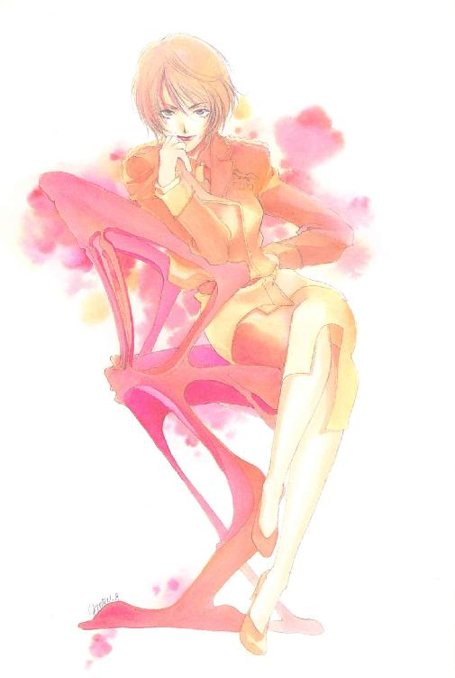
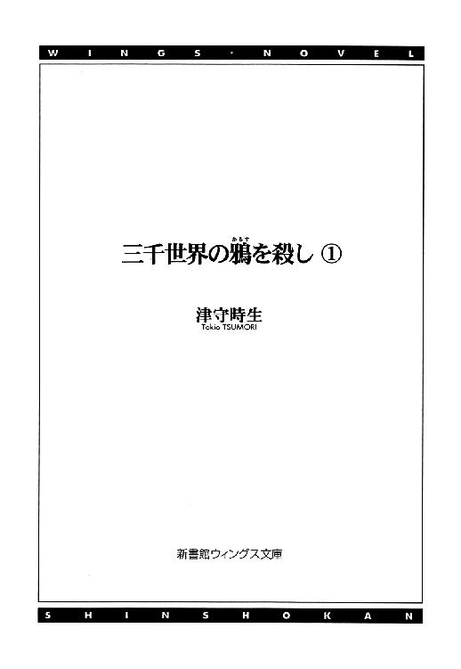
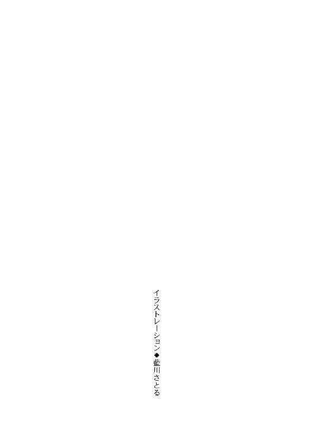
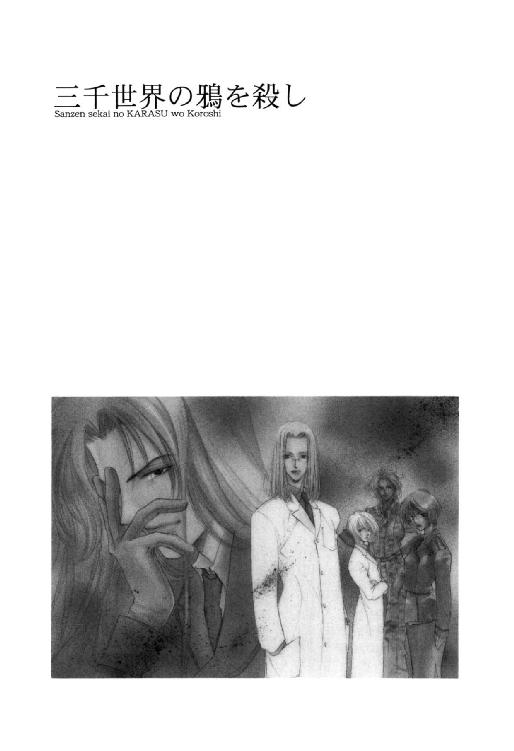
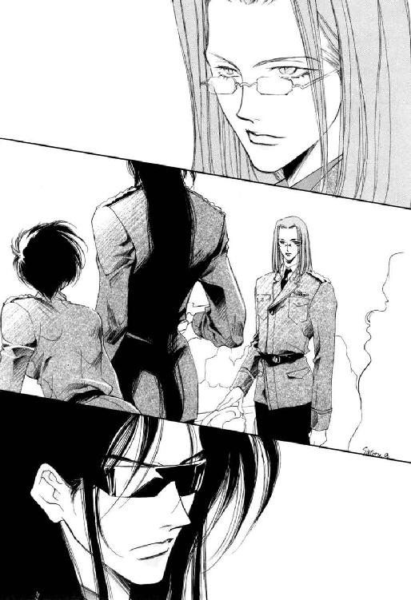
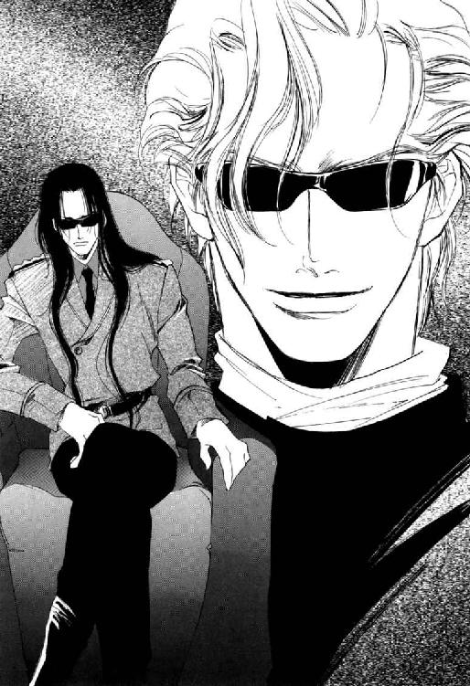
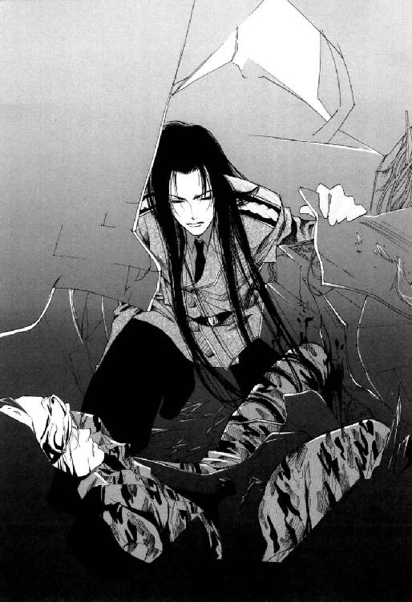
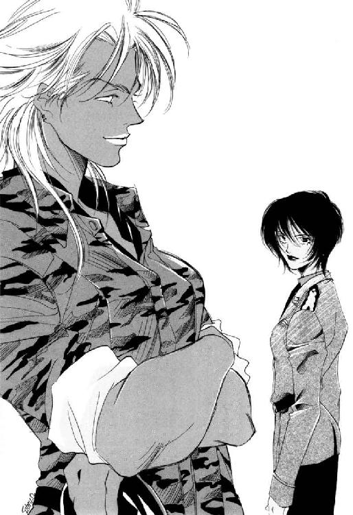
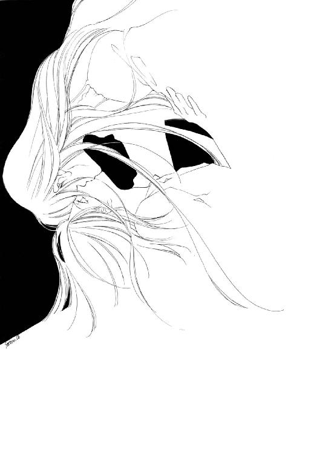

| 三千世界の鴉を殺し(1) (ウィングス・ノヴェル) | |
| 津守時生 | |




１
新しく基地に着任してきた大尉が、副官をともなって現われた時、顔合わせのために集められた三人の小隊長たちは、反射的に敬礼しながら、半ば呆然と相手を見つめていた。
いくら銀河連邦宇宙軍第一等のアルヴ・ストレナーゼ大勲章を三度も与えられた英雄だからといって、規格はずれにもほどがあるだろう──と、彼らは思った。
癇性で神経質な性格の前任者は、ノイローゼになって事件を起こし、病気療養の名目で半強制的に除隊させられた。ささいなことで精神を病んだ彼を理想的な軍人とは言いがたいが、多少感受性が強い程度の欠点ならば、他の将校たちと比較しても充分許容される範囲だった。
しかし、この後任の中隊長は、すでに外見からして、だれの目にも明らかな異端者だった。
人間は外見がすべてではないという一般論は、同じ軍服を着用し、厳格な軍規に行動を制限される軍隊においては通用しない。同じ規格の歯車がそろってこそ、軍隊という巨大な組織は支障なく動く。
規格はずれだからこそ高性能で、第一等勲章ものの活躍ができたとしても、なにかのはずみで力の方向を間違えれば、組織を崩壊させかねない危険因子になる。
その異端者は、ごく普通に軍服を着ていた。普通どころか、常人より長い四肢のせいで細身に見える体に、銀河連邦宇宙軍の黒い制服は、たいそう見目よく似合っていた。
二メートルに少し欠けるくらいの身長は、地球人の男の平均身長より高いが、小山のような筋肉を誇る大男ぞろいの軍隊の中では、注目されるほどのものでもない。
彼が、他人から一目瞭然に異端と決めつけられる理由はいくつかある。その最たるものが、足の膝裏まで達するほど長くのばした黒髪だった。
ここまでの長さにするには、相当の時間がかかるはずだった。当然ながら、動きの邪魔をして行動も制限される。長髪にして違和感のない女性ですら、普通はここまで忍耐が続かずに途中で切ってしまうだろう。
連邦軍規は、信仰上の問題が生じる兵士もいるため、頭髪に関する規定はあえて設けず、各人が好みの髪型を選ぶ自由を認めている。
それでも、おのずから常識の範囲というものがあった。軍隊に所属する男が、ここまで髪をのばしては、異常者呼ばわりされても文句は言えまい。
非常識の極みと言える長髪の将校は、自分の部下となった三人に答礼して口を開く。
「ルシファード・オスカーシュタインだ。隣にいる彼女は、副官のライラ・キム中尉。入隊して九年、この基地で十三回目の転任ともなれば、いまさら部下に言いたいほどの抱負もクソもねえ。今日からよろしく頼む」
耳に心地よい暖かな響きのある低い声だった。
だが、少尉二名、曹長一名で構成された小隊長たちは、クソという単語を耳にした瞬間、大きく目をむいた。
自由時間に友人たちと興じるカード・ゲームで、不本意なカードを引いた時に使用するのは許される。が、連邦宇宙軍の士官たるものが、部下の前で使うには少々品位に欠ける言葉だった。
上官より一歩下がった位置に立つ副官が、部下たちの驚愕を目にして小さく嘆息する。
「......イエス・サー！」
三人はすばやく動揺から立ち直り、とりあえず気づかなかったふりをして、第一小隊隊長から順番に自己紹介を始めた。
名乗る彼らにうなずき返すものの、その視線がだれに向けられているのか不明だった。
彼のかけている黒いスクリーン・グラスが完全に目を覆い隠し、目の表情を一切消し去っている。
戦艦乗船勤務の長かった彼が、地上勤務に変わって、自然の陽光に目が慣れていないという可能性はあった。それでも、ここまで色の濃いものを使う必要はあるのだろうか。視線の向きさえ明らかにしない人間に対し、事情を知らない第三者の印象がよかろうはずもない。
そして、連邦宇宙軍士官の軍服は上下ともに黒だった。ネクタイとブーツは光沢のある黒で、ワイシャツだけが緑がかった灰色。
大尉の肌は白かったが、これで彼の連れている女性の副官と同じく肌も浅黒ければ、その身にまとう色彩は黒一色になる。
尋常ではない長髪に黒いスクリーン・グラスをした黒ずくめの男──。
あまりにも胡乱だった。あからさまに変すぎる。ふつうなら、初対面の人間は全員警戒し、激しい敵意を抱くものもいるだろう。
他人から出会い頭に猛然と反発されかねない外見の怪しさを、大幅に改善しているのが黒髪とスクリーン・グラスに囲まれた白い顔だった。
存在自体が奇跡と思えるほどの美貌──それが、目の前にある。
彼の面立ちは、生身の限界を無視した精妙な整い方をしていた。スクリーン・グラスが肝心の目元を隠そうとも、全体の造作は簡単に想像がついてしまう。見た瞬間、好き嫌いを感じるより早く、目の心地よさに美しいと即断してしまう種類の完璧な造形だった。
理想の美を追求した芸術品のような顔の人間に対し、軍人らしい常識的な頭髪の長さを要求しても無意味だった。すでに生れつきの容貌だけで異端者あつかいされる彼が、髪の長さを変えることで、おのれに下された異端の評価が変わるとも思わないだろう。
こんな人物に活躍の場を与えただけ、宇宙軍のふところも広いと考えるべきかもしれない。──結果的には、こんな辺境惑星に左遷するにしても。
自分の番が回ってきた第三小隊隊長メイジャ・アダン曹長は、そんな風に考えながら自己紹介を終えたあと、つけ加えた。
「わが第四中隊は、現在通常訓練中であります。大尉殿の正式な着任式は明日の予定ですが、これから訓練風景や施設などをご覧になりたければ、私がご案内いたします」
それは副官が行なうべき仕事だが、その副官も転任者とあっては、だれかが代行しなければならない。
前任者の副官だった中尉は、中隊長代理を二ヵ月つとめ、新任のふたりが到着するのと入れ替わりに転任していった。
「そうだな......。とりあえず重要なところだけ頼むか」
「アイ・サー」
高さも幅も厚みもある黒い岩山のような巨漢の曹長は、上官たちをうながして執務室を出る。
残ったふたりの小隊長は、奇妙な上官の案内役をつとめずにすんで、いまごろはさぞ安堵しているだろう。
階級至上主義社会の軍隊では、同じ小隊長でも、ひとりだけ曹長のアダンが中隊の雑用を押しつけられがちだった。
士官学校を出て二、三年の少尉たちより、一兵卒からたたき上げたアダンのほうが、兵士たちの心情を始め、軍隊というものに色々とくわしいのも事実だった。もっとも軍隊生活三十年のアダンにしても、さすがにこんな変わり種の士官とは初めて出会う。
この時間はひとけのない廊下を歩きながら、ふと思い出して、軍服の胸ポケットに手をのばす。
「差し出がましいとは存じましたが、当基地において、これから大尉殿が利用される可能性の高いと思われる施設を案内図にしておきました。よろしければ空き時間にでも、ご覧になってください」
「ありがとう、曹長。気遣いに感謝する」
オスカーシュタイン大尉は礼を言って、小さなケースに入ったディスクを手のひらで受け取った。
そのケースのラベルを読んだ彼の眉根が寄せられる。
「〝フロラ、幼稚園でのお歌の発表会〟？」
「し......っ！ 失礼いたしましたっ！ 申しわけありませんっ、お渡しするディスクを間違えましたっ！」
褐色の肌でなければ、耳まで真っ赤になって見えただろう。巨漢の曹長は、自分でも信じられない失敗にあわてながら、何ヵ所もある軍服のポケットの中身を探った。
黒髪の大尉は爆笑し、平手でアダンの背中を二、三度たたく。
「強面のわりに子煩悩だな、お父さん」
笑って冷やかす口調と背中をたたく気安い態度で、上官が失態をとがめる気のないのはわかった。
ひたすら恥じ入る曹長は、ディスクを交換したあと、大きな身を縮めて再度謝罪する。
「......本当に失礼をいたしました、サー」
「そんなに気にしなくていい。今、幼稚園に通っているとなると、ひょっとして孫か？」
「いいえ。結婚が遅かった上に、六番目の末っ子ですので......」
「へ～。──で、持っているんだろ？ 見せろよ」
ぞんざいな口調で言い、にやつきながら片手を差し出す大尉の真意がつかめず、アダンはとまどう。
「なにを......でありますか？」
「家族写真」
「堪忍してくださいっ、大尉殿」
「別にからかっているワケじゃねえよ。ただ見たいだけだって。ホラホラ」
強引な相手の態度に折れ、しぶしぶと上着の内ポケットから写真を取り出す曹長の背後で、副官のキム中尉が小さく吹き出した。
結局持ち歩いているのを見透かされたのが、おかしいのだろう。
「お、二匹の犬も一緒か。やっぱり、息子がいるなら大きな犬を飼うべきだよな」
「はぁ......。犬を飼ったのは、息子たちにせがまれたからですが......」
「兄弟が多くて犬がいるのは理想の環境だぜ。一人っ子だった俺が保証してやる」
「ありがとうございます」
ほめてもらって悪い気はしないが、自分たちはこんなところで、なにをしているのだろうと困惑は深まる一方だった。
もう一度、今度は盛大に副官が吹き出す。
ルシファード・オスカーシュタインは、自分と同じく黒髪の女性士官を振り返った。
「なにがそんなにおかしいんだ、ライラ」
「思い出し笑いです。失礼しました」
「うそをつくんじゃねーよ。どうせまた、超絶美形の分際で小市民的な幸せを夢見ているなんて、図々しいと思っていたんだろ？」
「とんでもない。夢を見るのは、どんな人間にも等しく与えられた権利ではありませんか。ご自由にどうぞ」
声が笑っているので、皮肉ではなく揶揄だと知れる。
コーヒー・ブラウンの肌をしたライラ・キム中尉は、客観的に見て非常に魅力的な女性だった。
シャギーを入れたショートボブの前髪の下に、目尻のつり上がった大きな茶褐色の目がある。つんと上を向いた小さな鼻と小さな赤い唇。大きな目とのバランスは悪いはずなのに、見るものに美人だと思わせる華やかな顔立ちだった。エキゾチックでクールな表情と細身の身体のしなやかな動きが、どことなく黒猫を連想させる。
アダンは、女性士官の平均身長を知らないが、キム中尉は間違いなく女性としては長身のほうに入った。
身長は大尉より頭ひとつ低く、ちょうど百八十センチくらい。
この黒ずくめの美男美女コンビは、しばらく基地の注目の的になるだろう。夫婦でもないふたりが、そろって同じ任地に配属され、上官と副官という関係もそのまま続くなど、本来ならばありえない辞令だった。
長い経験から上官のプライバシーを詮索しても、ろくなことはないと承知している曹長でさえ、この特例措置の理由を知りたいと思う。
大尉は、いたまないようコーティングされた写真を持ち主に返す。
「ありがとう。こんなチビが六人もいるんじゃ、家の中は戦場だろう？」
「ウチの小隊は、優秀な司令官に任せきりですから。私は、チビたちによじのぼられて遊ばれる置物です」
「それは、いい体力訓練になるな。登りがいのある置物だ」
再び歩き出しながら明るく言う上官の闊達な雰囲気に触れて、自然と微笑んでいる自分に気づく。
彼はおそらく三十歳にさえなっていない。言動は奔放で言葉遣いも悪く、初対面の部下にこんな親しげな態度をとるなど、士官にあるまじき人物だった。自分の部下なら、しかりとばしていただろう。
それなのに心理的な抵抗感がない。
人なつこいというのとも違う。人なつこいという言葉には、なれなれしくすり寄っていくというニュアンスがある。むしろ逆の、引き寄せられる感じだった。
最初はとまどったものの、執務室を出て十分と経過しないうちに、自分より二十歳は年下の人間とのやり取りで、やすらぎを覚えている自分がいる。
驚くべきことに、これは年若い大尉の持つ包容力に影響されてのことだった。
さすが第一等勲章の略綬三個を軍服の左胸に並べているだけの人物だった。
絶世の美貌と人間的魅力に加え、指揮官としても有能ならば、さぞ心酔する部下も多かっただろう。
メイジャ・アダン曹長は、妻と四男二女の子供たちと二匹の愛犬をこよなく愛する、よき家庭人だったが、この基地に配属されて以来、一度として出動命令を下されず、訓練に明け暮れる日々に決して満足していない勇敢な軍人でもあった。
カリスマというものは、そもそも規格通りの人間にはなれない。外見も中身も最高に規格はずれな男の着任が、このよどみきった沼のような基地を変革するきっかけにならないだろうか。
それを本気で切望している自分に気づき、他力本願な自分を苦々しく思った。
惑星バーミリオンは、銀河系の中でもはずれ近くの、いわゆる辺境惑星のひとつだった。地球人が改造し植民した経緯から、住人の九十パーセント以上が地球系の人間で占められている。
首都カーマインに駐屯する銀河連邦軍は約一万五千名。宇宙ステーションと惑星を往復するシャトルの宇宙港管理も任務のひとつのため、決して多い数ではない。
銀河連邦軍は宇宙軍と惑星軍の二軍種で編成され、首都に駐屯するのは、宇宙軍陸戦部隊と連邦軍法に定められていた。
惑星間戦争が勃発した場合、首都攻防戦における陸戦部隊の果たす役割は大きい。が、戦略的にも経済的にも価値の低い惑星バーミリオンが、惑星間戦争の主役になることはまず考えられなかった。
仮想敵さえいない辺境惑星の宇宙軍陸戦部隊が、極めて優秀でありながら非常に問題も多いひとりの軍人を飼い殺しにするための転任先に選ばれたのは至極順当な判断だと、多少気の回るものならだれもが思うだろう。
連邦宇宙軍本部中枢に在籍する御偉方は、ルシファード・オスカーシュタイン本人の意志に関係なく、彼に対して反感を抱くものと彼を擁護するものの二派に分かれ、彼がかかわった任務の報告書が届くたび、毎度あきもせずにもめていた。
各方面軍総司令部で決裁し、形式的な承認だけで済ませるべき報告書まで問題にするため、メンツをつぶされた形の各方面軍総司令官が抗議したことさえある。
御偉方の中にできたふたつの派は、特定の兵士を〝英雄〟として特別視する行為を嫌悪するか、その存在を軍の士気昴揚に利用すべきと思うか──という考え方の違いから生じていた。
しかし、中央本部で今回の処分が決定された時、さすがの〝英雄〟もこれでおしまいだろうと両派ともに思った。
中佐から大尉への二階級降格はともかく、辺境惑星基地の地上勤務では活躍のしようがない。事実上の追放だった。
反〝英雄〟派の将軍たちは、自分たちの勝利に酔った。
本人は、中央本部の御偉方が自分を英雄呼ばわりしていることを知らない。知っていたら、正常な判断能力を失ったボケ老人の集団は、早急に退役させるべきだと真剣に主張しただろう。
自分を英雄だなどとは全然思っていない彼は、十三回目の転任を命じられても、あと一年で二回転任させてくれれば、一年で一・五回平均になって計算しやすいな──などと、のんきに考えただけだった。
陸上戦用人型兵器ＡＦＳのシミュレーション用コンピュータ・ルームから出てきた女性兵士は、自分たちの分隊五機をたった一機で全滅させた敵ＡＦＳの操縦者と砲撃手が現われるのを待った。
分隊長の彼女が指示を出し、散開しかけたところで三機が連続して撃破された。なんとか遮蔽物の陰に隠れたものの、彼女の援護で反撃に出たとたん、それを簡単にかわした敵にもう一機がやられた。
残りの十五分は悪夢に思える。執拗に追われて攻撃され、ところどころに損害を受けつつもなんとか振り切ったと思った直後、裏をかかれて待ち伏せされた。
逃げながら必死に三度も反撃したのに──そのうちの一度は、絶対にもらったと思ったのに、いともたやすく回避された。相手の操縦者が、こちらの動きを読んだとしか考えられない。
常勝とまではいかないが、第四中隊内で模擬戦を行なえば自分たちの分隊が最強で、それなりに自負もある。こんな無様な敗北を喫したのは初めてだった。
勝者の案内役とおぼしきメイジャ・アダン曹長が、屈辱に殺気立つ彼女の分隊に対し、無言でにらみをきかせている。
ここで待ち構えているのは、新しい中隊長の見事な勝ちっぷりを称賛したいだけだと言っても、おそらく信用してくれないだろう。
彼女は、ディスプレイに自分の戦死を宣告する文字が表示された瞬間、逆上して室外に飛び出した。そこに自分を撃破した相手がいたら、今度は生身を使ってリターン・マッチを挑んでいたかもしれない。
とりあえず瞬間沸騰した頭はすぐに冷え、今は好奇心のほうが先に立つ。
シミュレーション用コンピュータ・ルームは、ＡＦＳの擬似コクピットになっていて、本当に乗り込んでいるように可動し、遠心力も体感させる。
ドアを開けて、ひと組の男女が現われた。
曹長以外の全員があっけにとられている中、丈なす黒髪の麗しき中隊長は、不機嫌な顔で曹長に歩み寄る。
「なんだ、こいつは。ボロいのはともかく、まともに点検してんのか？ 操縦系の時間差が二秒もあるじゃねえか。上限は〇・三秒だぞ。こんな代物で訓練になるか。おまけに画面表示が旧式過ぎる。訓練機だからといって、ソフトの更新をサボっていい理由にはならねえ。今日中に整備隊へ連絡しておけ」
「アイ・サー。......しかしながら、私の知る限りにおいて当基地のＡＦＳはみな、この旧式の表示で使用されております」
「つまり......あの画面表示が当然だった時代以降、新しいＡＦＳの配備はなかったというワケなんだな？」
「イエス・サー。誠に遺憾ながら」
早くも基地の現実の一端に触れ、絶句している新任の中隊長に代わり、今度は副官がたずねる。
「機体はしかたがないとしても、搭載ＡＩの改良ソフトの予算さえつかないの？」
「イエス・マム。予算の優先順位は高くありません。当基地のＡＦＳが実戦に投入されたことはなく、ソフトの更新をせずとも基地内の訓練で支障はないとみなされます」
曹長とやり取りしているふたりの後ろ姿をながめながら、分隊長をつとめる女性軍曹は、上官とすれ違いざまに目にした信じられないものの数々を、頭の中で反芻していた。
あの長髪と顔にはだれでも驚くだろうが、制服の左胸を埋めつくさんばかりに並んだ略綬や、特殊なマークがいろいろ追加されたパイロット章を始めとする各種特別技能章も、充分驚きに値する。
軍服の各インシグニアは、彼が多くの戦功をあげた歴戦の勇士であり、戦闘機もＡＦＳも中型の戦艦まで操縦できる技能の持ち主だということを見るものに告げていた。
略綬とは、その兵士が過去にもらった勲章を示す一センチほどの金属製プレートをいう。各勲章のリボンと同じ色をしているので、その色でどんな勲章を授与されたかがわかる。
退役間近の将軍ばかりが勲章をたくさん持っているわけではない。上級将校と下士官で授与の対象となる勲章の種類が違うにせよ、紛争多発地帯を長く任地とする軍曹が、乗り組む戦艦の指揮官より多くの勲章を持っている場合はままあった。
この基地に配属されたがために勲章とはまったく関係のない日々を送る彼女は、目の前にいる中隊長が、外見通りの年齢なのか判断に苦しんだ。
地球人以外の種族や他種族との混合種の場合、地球人の感覚で年齢を推測すると、外見と実年齢にずれが生じてくる。
そもそも地球人の外見がいかに多様性に富んでいようと、これほどの超絶美形が生まれるかどうか、大いに疑わしかった。
もっと思考回路が単純にできている彼女の部下たちは、訓練で簡単に負けたくやしさと異端者に出会った衝撃を反発心に結びつけてしまう。
「うっへえー。まいったぜ。ヒステリー男の次は、なんとオカマ野郎かよぉー！」
「バリー」
彼女は、声高に上官の第一印象を語る部下をすばやくたしなめた。
そのかいもなく、尻馬に乗った別の兵士も口を開く。
「せっかくロングヘアーのカワイコちゃんを中隊長にしてくれるなら、股のあいだに余分な部品のついていない美人がいいよなー」
「やめろ、おまえたち！」
指笛が高く鳴り、口々に賛同の声が上がった。
腕組みをして、曹長と副官の会話を聞いていた大尉は、肩越しに顧みる。
上官への無礼に気づいたアダン曹長が怒鳴りつけるより早く、軽蔑しきった口調で言った。
「わざわざ俺に聞かせたいほどの陰口なら、もっと独創的なことを言え、ノータリンのカス野郎ども」
「全員気をつけぇーっ！」
彼の感想のあと、間髪を入れず強面の曹長の怒声が飛ぶ。
改めて向き直ったオスカーシュタインは、反射的に直立不動の姿勢となった分隊を見回し、感心したようにひとりごちた。
「訓練機もボロでグズなら、それに乗るやつらも見事にブッたるんでやがるな。──最後に残ったＡＦＳはおまえか、軍曹？」
「イエス・サー！」
途中からの質問に対し、簡潔に答えた分隊長の女性兵士は、相手の口元に浮かんだ優しい笑みを意外な思いで見返す。
地球人と敵対している六芒人との混合種として生まれた彼女は、初対面の人間から冷笑を浴びせられるのに慣れていた。
褐色の肌に黄金の髪、真紅の目。たくましく筋肉の発達した大柄な肉体は、巨漢ぞろいの部下たちにひけをとらない。
生まれながらの戦士と呼ばれる六芒人の血を濃く引く彼女は、格闘訓練では無敵の女戦士だった。
「おまえだけはよかった。ただ、ターンする時にマニュアル通りなのは感心しねえな。機体に無理がかかっても速いほうがいい。バランサーがビービー文句タレようが、遠心力を利用して曲がれ。射撃の正確さが同じなら、あとは速いモン勝ちだ。どうせ戦場ではＡＦＳだって消耗品だからな。消耗品を大事に使って撃破されたら、もとも子もねえだろ？」
「ご教授ありがとうございます！」
ＡＦＳでの実戦経験のない若い彼女は感激し、謝意を敬礼の形であらわす。
束の間、さらに深くなった男の笑みも、ほかの兵士たちの前では消え失せる。
「おまえら、命拾いしたぞ。ここが俺の艦だったら、上官命令を無視したやつはそのままエアロックにブチ込んで、宇宙の海を素潜りさせたところだ」
ごく普通の口調にもかかわらず、その中にひそむ本気の響きが、分隊の兵士たちの背筋に冷たいものを走らせた。
聞こえよがしに悪口を言ったふたりが青ざめる。自分たちが相手の特異な外見に惑わされ、地雷の周囲でダンスを踊っていたことが、今になってやっとわかったらしい。
「そのクサレ頭で俺をなんと思おうがおまえらの勝手だが、今度俺のいるところで上官命令を無視しやがったら──」
そのあと新任の中隊長は、エアロックからの船外廃棄処分の代わりとして、極めて下品で野蛮で血も涙もない罰を具体的に述べ始めた。
それを聞かされた男たちの顔面が恐怖に引きつる。
はからずしも部下とともに拝聴するはめになった女性軍曹が、もし上流階級の出身者だったら、真っ赤になるか真っ青になって、その場で卒倒していただろう。
アダン曹長は、上官の発案した斬新かつ過酷な処罰に内心うめきつつ、横目でキム中尉のようすをうかがった。
彼女は小さく嘆息し、人差し指の先でこめかみをもみ始める。その物悲しいしぐさから、上官の型破りな言動に否応なくつき合わされてきた彼女の不幸な過去が垣間見えた。
部下の無法者たちをおどしつけたオスカーシュタイン大尉は、案内役の小隊長を振り返り、
「ここの問題は、俺が整備隊と話し合って早急になんとかする。とりあえず次に行くぞ」
「それよりも、あと二十分ほどで昼食になります。こみ合わないうちに士官食堂へご案内しましょうか？」
「いや。士官食堂だと君が入れんだろう。君に先約がなければ、いろいろ聞きたいこともあるし、一緒にメシを喰おう」
「それでは軽食になりますが、コーヒーハウスに」
「ああ。──邪魔をしたな。訓練を続けてくれ」
軽く言って去りかけた中隊長に向かい、分隊全員の十人が同時に敬礼する。
「ご指導ありがとうございましたっ！」
入隊したての新兵が、訓練教官をつとめる下士官に言うセリフだった。中隊長に対して使うのは、多少違和感がある。
しかし、足をとめた大尉はにやりと男くさい笑みを浮かべ、一同にお手本のごとく端整な敬礼を返す。
──......カッ...コイイー......ッ！
もともと人並みはずれて姿のいい士官が体現して見せた様式美に、単純な兵士たちはシビレてしまった。
正午近くなり、廊下を通る人間は次第に増えてくる。
アダン曹長は歩きながら、目立ち過ぎる上官を注目の的にさせないため、コーヒーハウスのどの席に座らせればいいか、真剣に考えていた。
大男の曹長の背後で、キム中尉が中隊長に話しかける。
「ねえ、ルシファ。せめて初日くらいは、猫をかぶって、まともな中隊長のフリをしようという気にならないの？」
「猫をかぶったら、なにかいいことがあるのか？」
「だまされた部下たちが、しばらく尊敬してくれるわよ」
「うへっ。あんな筋肉ダルマの集団に尊敬のマナコで見つめられたら、俺、死にたくなっちまう！」
プライベートでも親しいらしいふたりの会話は、声量を抑えて小声でなされたが、聞き耳を立てるまでもなく聞こえてしまったアダンは、笑い出さないよう懸命に歯をくいしばった。
どうやら本気で自分のカリスマ性に気づいていない彼と、承知でからかっているフシのある彼女のやり取りは、立場上笑えない周囲のものには拷問にひとしい。
「──おい、おまえ」
少し離れたところで、横柄に呼びかける声があった。
自分たちには関係がないと思い、そのまま通り過ぎようとしたアダンは、続く言葉で自分の間違いを知る。
「待てと言っているだろう、きさま！」
「そう言うあんたに聞きたいな。上官でもない人間にそんな無礼な呼び止められ方をされて、あんたは素直に従うのか？」
最初からケンカ腰の相手に対し、オスカーシュタイン大尉がのんびりとたずね返す。
ひとりの士官が、厳しい表情で黒髪の男につめ寄っていた。階級は同じ大尉だが、別の大隊に所属する中隊の指揮官だった。
「ふざけるなっ！ この髪はなんだっ！ きさま、連邦宇宙軍をなんだと心得る！」
「いてっ」
険悪な雰囲気を見かねた副官が両者のあいだに入る前に、相手の手が動く。
見知らぬ士官に長い髪を鷲摑みにされ、強く引っ張られては、こちらもおとなしく黙っていられない。
すごみのある低い声で言い渡した。
「その手を離せ。自分が伸ばそうにもできねえからって、他人に難癖つけてウサ晴らしするんじゃねーよ」
「なんだとっ。軍規を破っておきながら恥じ入るどころか、注意したこちらを侮辱する気か！」
「侮辱って......。これって、だれが見たって一目瞭然の事実じゃねえの？ なあ？」
顔面を紅潮させた相手の剣幕に驚いたのか、途中で言いよどんだオスカーシュタインは、言いがかりをつけてきた本人に確認を求め、小首をかしげる。
スクリーン・グラスの奥から不思議そうに、まじまじと相手の頭を見つめているのが、こちらにも伝わってくるしぐさだった。
アダンは、いきなり廊下で始まったもめごとを穏便におさめるため、即座に仲裁に入る気でいたが、どこか無邪気な中隊長の質問を聞いた瞬間、吹き出さぬよう急いで口を覆った。
──本人に聞くか、普通。
ほとんどの下士官同様、曹長の髪も短い。特に側頭部から後頭部にかけては、極端に短く刈り込まれていた。
屋外訓練や野外演習の監督をする彼らは、ほこりや泥にまみれるたび丁寧に洗髪していられない。半端に長くすると射撃訓練の邪魔になるので、前髪も刈り上げてしまう。
実用性から短髪を選ぶ下士官とは異なり、デスクワークの多い士官は、各人の好みで髪型を選んでいた。輸送隊のパイロットたちにドレッド・ヘアが流行したこともある。
他人の長髪にクレームをつけるだけあって、かの士官の頭髪は曹長並みに短い。
しかし、いかに周囲を短くしても隠しようのないのが薄毛の哀しさで、通常の一・五倍ほど広い額を持つ彼は、理知的だが十歳近く老けて見えた。彼がドレッド・ヘアにする日は、永遠にこないだろう。
「おーい、エルトン。こんなトコで、なに騒いでいるんだ？」
一見軽そうなタレ目の士官が、通りかかって声をかけてきた。
曹長でさえ顔も名前も知っている女たらしで有名な大尉だった。
「おや、新顔？ あ、第三大隊ヨハンセン第四中隊長の後釜かぁ。俺は第二大隊のワルター・シュミットだ。よろしくな」
美貌ではオスカーシュタインに遠くおよばないが、シュミット大尉の最大の魅力は愛嬌にある。
人好きのする笑顔を向けられた新任の大尉も微笑み返し、名乗ろうと口を開きかけた。
それをエルトンと呼ばれた大尉が、強硬姿勢を崩さずに邪魔をする。
「見ろ、ワルター。この男のこの非常識な頭を！ 軍規違反にもほどがあると今注意したら、居直って私を侮辱したんだぞ」
「まあまあ。ちょっと個性的だと思うけど、似合っているからいいじゃないか。軍規には髪の長さの規定なんてないぜ。憲兵隊じゃあるまいに、そんなにムキにならんでも」
「似合っているだと？ どこがだっ。こんな不潔で見苦しい頭っ！ 連邦宇宙軍の恥だ、切れ。とっとと切ってしまえ！」
なだめる同輩の言葉に耳を貸さず、自分の激しい語調に興奮した男は、片手でオスカーシュタインの胸を乱暴に突き、よろめいた彼の黒髪を再びつかもうとしたが、その手がよこざまに強くたたき払われた。
「いいかげんにしろ。際限なく調子に乗るンじゃねーぞ、このハゲ！」
「あっ、禁句をズバリそのまま言っちゃって......」と、シュミット大尉。
「俺の髪が長かろうが、あんたがハゲだろうが、大所帯の宇宙軍は痛くもかゆくもねえよ。あんたが、士官に必要な最低限の毛髪を個人的に確保していないからといって、だれかが理不尽に文句をつけたことがあったか？」
逆襲に転じた男の鋭くも奇妙な表現に、曹長とキム中尉は必死で笑いをこらえた。
上官のメンツを守ろうとするふたりの配慮は、盛大に吹き出したシュミット大尉によって無になる。
「わ、私はっ、軍人らしい節度ある髪型をきさまに要求しただけだっ！ それなのに私を侮辱する暴言を吐いたな......っ！」
「なにが暴言だ。単なる事実じゃねえか。毛髪再生不良性皮膚炎と呼ぼうが、チョロハゲと呼ぼうが、あんたの前髪の絶対量が不足している現実に変わりはねえだろ」
情け容赦のない指摘が続く。
これ以上関係が悪化する前になんとかして止めなければと思うのだが、吹き出さないようにするので精一杯のアダンには、その余力がなかった。息子たちの兄弟ゲンカと内容的に同レベルの気がして、正直なところ、たまらなくおかしい。
ワルター・シュミットは早々と仲裁を放棄し、無責任に腹をかかえて笑っていた。
しかも、いつのまにやら通りすがりのギャラリーが増えている。
状況は、事態の収拾どころか悪化の一途をたどっていた。
キム中尉は、役に立たない男たちを見捨てて、ひとり副官の使命を果たさんと果敢に行動した。
「大尉殿、もうおやめください。髪に関しては、事情を知らない方なら当然のご指摘です。それに大勢の前でのそのような言動は、侮辱と受け取られてもしかたがありません」
「ご指摘だけじゃねえだろ。こいつ、いきなり俺の髪をつかんで引っ張ったんだぜ。ただでさえ他人に髪を触られるのが嫌いなのに、野郎なんぞにむんずとつかまれて痛かったし、結構腹立ったぞ、今」
むんずとつかむ量のない身で、その言いようが癇にさわったのか、突然激昴した士官は、オスカーシュタイン大尉に指を突きつけて宣言した。
「決闘だっ！ 私ことエルトン・グレッグは、銀河連邦宇宙軍士官の誇りをかけて、きさまに決闘を申し込むっ！」
「ちょっと待てよ、エルトン。決闘はマジでシャレにならないぞ。こっちも髪の毛に関しては、なんだか事情があるみたいだし、少し頭冷やせよ」
さすがに笑ってはいられず、シュミット大尉がおくればせながら仲裁に入る。
周囲の空気は決闘宣言で一気に緊迫し、野次馬たちの顔からも、冷やかしの笑いが消えた。
「うるさいっ！ この男は私を侮辱した。その罪は許しがたい。死をもって贖わせるっ」
「へっ。決闘だぁ？ 上等じゃねえか。俺ことルシファード・オスカーシュタインは、銀河連邦宇宙軍士官の髪をかけて、この決闘受けたぜ。──俺のほうは別に殺す気なんぞねえが、勝ったらあんたをスキンヘッドにしてやるからな」
せせら笑う長髪の士官は、この期におよんでも本気か冗談か判然としないことを言う。
ある意味、それは殺すよりムゴイんじゃないの？ と大半のものが思った。
「よせってば！ 決闘なんかして、ふたりとも無事ですむはずないだろ。ただのケンカにしておけよ。一晩寝て考えて、それでも許せないと思ったら、素手の殴り合いをしよう。それが由緒正しい男のケンカってモンだ。その時は俺が立会い人になる。な？」
「俺は、どうせ売られたケンカを買ったまでだ。どうでもいいぜ」
シュミット大尉の真剣な態度に免じて、新顔の大尉はあっさり譲った。
「ありがとう。......エルトン、君もそうしてくれないか。潔くないと思うかもしれないが、頼むよ。命はたったひとつしかないんだ。軍人が、そのたったひとつの命をかける場所は、戦場であるべきだろ？」
「わかった。君の言うとおりだ、ワルター。私は怒りに我を忘れ、軍人の本分を危うく見失うところだった。軍規は大事だが、それを守らないおろかものの命を奪っては、私も寝覚めが悪いからな」
グレッグ大尉は、自分の都合のいい仮定のもとに同輩の仲裁を受け入れる。
あきれ返ったオスカーシュタインは反駁しようとしたが、彼の脇腹へすばやく送り込まれた副官の肘鉄が思いとどまらせた。
いくら士官同士の決闘が正式に認められているからと言っても、こんな理由での殺し合いが認められるわけがない。シュミット大尉の言う通り、上層部に知られたら双方ともに厳しく処罰されるだろう。
アダン曹長は、安堵に胸をなで下ろす。ただ上官を案内しているはずの自分が、どうしてこんな騒動に巻き込まれたのか、どうもよくわからなかったが──。
２
ワルター・シュミット大尉の誠意ある仲裁にもかかわらず、ルシファード・オスカーシュタイン大尉とエルトン・グレッグ大尉の決闘未遂騒動は、うわさ好きの見物人が電子通信網を使って広めたため、即日、双方の上官たちが知るところとなった。
翌日、着任式を終えたばかりのオスカーシュタイン大尉は、大隊長に呼び出され、昨日の事件について注意された後、今日中に始末書を提出するよう命じられた。
執務室の備品であるパーソナル・コンピュータを操作しながら、副官のライラ・キム中尉は聞こえよがしに嘆く。
「この基地に着任して初めての仕事が、始末書書きだなんて......！ ああ、情けない」
「あれは俺が悪いんじゃねえだろ。あのハゲが──」
「ルシファード！ 〝ハゲ・デブ・ブス〟は三大禁句よ。絶対、本人に言っちゃダメ。みんな遺伝子が原因なんだから、本人の意志や努力だけでは改善できないことを笑いものにして、傷つけるのはとても卑怯だわ」
副官に年長者のような口調でしかられて、ルシファードはしばし黙った。
環境的な要因もあるが、彼女の言うことは正しい。
「〝オカマ〟は、どうなんだよ。俺、よく言われるぜ。昨日だって言われたし」
「地球人の場合、周囲の環境と関係なく同性愛者になった男性は、脳の特定部位のニューロンが未発達であるケースが多いのよ。異性に対し、生殖行動を強くうながす部分が欠けてしまった脳──つまり、肉体は男性でも脳の性別は女性ということね。そうなると本人の意志以前の問題だから、遺伝子ではないにしても、それと同等のあつかいになるわ」
大尉は、おとなしく副官の説明を聞きながら、女性の同性愛者の脳はどうなのだろうと思ったが、話題がそれるので黙っていた。
「なんであれ、多数派もしくは強者が、少数弱者を精神的肉体的に迫害している構図を差別と呼ぶのよ。差別は、人間として恥ずべき反社会的行為だと、小さなころから厳しく教えられてきたでしょう？ 今度、グレッグ大尉に差別語を吐いたら、あなたのことを軽蔑するわよ」
「わかった、言わない。だけど、俺をオカマ呼ばわりする連中はどうするんだよ」
自分ばかり怒られることにどうも納得がいかない男は、しつこく話題に持ち出す。
「あなたを多少傷つけられると思うから、言っているだけよ。事実だと思ったら、面と向かって言わないわ。現にあなたは、ちっとも傷ついていないでしょう？ 言われたくなければ、毎度トラブルのもとの髪の毛を、せめて背中の真ん中程度まで切りなさい」
「やだ」
薮蛇だった。
今までふたりのあいだで何度となく、くり返されている問答を憮然とした短いひとことで打ち切る。
彼のかたくななようすに引け時を知ったライラは、会話で中断していた仕事に戻った。
コードレスのプリンターに指示を出し、始末書を打ち出させる。
「早いな。もう打ち込んだのか？」
「始末書なんて、どこでも書式は同じじゃないの。ところどころ単語を変えれば、登録してある文書が、そっくりそのまま使えるでしょ。さて、この任地では何枚始末書にサインをすることになるでしょう？」
副官はほがらかに言って席を立ち、上官の机に書類を置く。
その隣には、すでに中隊長の決裁の必要な書類が一センチほどの山になって置かれていた。
「さあ、今日から自前の重力がある新天地で、自前の酸素を吸いながらバリバリお仕事しましょうね！」
「なぁ。俺は悪くねえのに、これもカウントするのか？」
なじみがありすぎて暗誦さえできる文面に目を通しもせず、所定のスペースに署名しながら、ルシファードは気になる集計基準をたずねた。
新任の大尉が着任して今日で五日目。
よくも悪くも目立ち過ぎる彼にかかわるもめごとのいくつかは、基地司令官のもとへ報告書や始末書となって届いていた。
カーマイン基地司令官レイモンド・ブレッチャー大佐は、神経質なエリート然とした四十半ばの男だった。
午前中に決裁が必要とされる書類の最後の一枚を既決の山に乗せた時、軽い違和感を胃のあたりにおぼえる。細い眉をひそめた彼は、片手を腹部に当てて少し考え、まだ薬を飲むほどではないと判断した。
さきほど司令官室を出ていった副官が、休憩をすすめるべく、カフェインレス・コーヒーを運んでくる。
「......見てくれ、アンリ。あいつめ、一日目に決闘騒ぎまで起こしおった」
彼は弱々しく訴えると、広い机の上に分けて置いた書類を副官のラクロワ中佐のほうへと押しやった。
「決闘ですか。それは華々しくデビューを飾りましたな」
中佐はカップを上官の前に置き、いらだつ相手をなだめるように笑う。
階級はブレッチャーより下だが、年齢は十歳以上年長の彼のほうが、司令官にふさわしい落ち着きがある。
姿勢のいい彼は、上官の言葉に従い、プリントアウトされた書類の束を取り上げると、その場でくだんの報告書を読み始めた。途中まで読んで、こらえる余裕もなく吹き出す。
大佐のこめかみに青筋が浮かんだ。
「......君は、それが本当に笑い事だと思うのか？」
「失礼いたしました、サー。一方の当事者であるグレッグ大尉にとっては、許しがたき暴言だと思います。しかし、先に手を出したのは彼のほうですし、両者に対しては大隊長の訓告処分が妥当なところでしょう」
「処分はな。私が問題視しているのは、あの男の反省のなさだ。二階級も降格処分の上、左遷されてきた人間が、着いたその日に危うく同輩と殺し合いを始めるところだったんだぞ。まったくもって度しがたいっ！」
「はぁ。確かに反省しているものの態度だとは思いませんが、そもそも左遷に懲りて行動をつつしむような性格なら、あのすばらしい戦歴はなかったのでは？」
まだ口調に笑いの余韻を残す副官を見上げ、ブレッチャーはうらめしげに言った。
「我が基地は、それでなくとも士気の低さに頭を痛めているのだ。その上、名高き連邦軍の持てあまし者まで押しつけられて、どう管理しろというのだ。いかに辺境惑星の駐屯部隊といえ、上層部はここを兵士のゴミ捨て場とでも考えているのだろうか」
「大佐殿。そのように深刻にならず、物事を良いほうへお考えになられてはいかがですか。彼はわずか二十七歳にして、連邦宇宙軍第一等のアルヴ・ストレナーゼ大勲章を三度も授与されている傑物です。きっと兵士たちによい刺激を与えてくれるでしょう」
ラクロワ中佐は本気で言ったのだが、司令官はただの気休め程度にしか受けとめない。
「このままでは、早晩私の胃に穴が開くに違いない」
「心痛ご同情申し上げます、サー」
にやつく口元を意識的に引き締めた副官は、苦々しい顔つきで吐き出すように言う上官に、思いやりをこめてうなずいた。
士官食堂は、朝昼ともにセルフ形式になっていた。
利用対象者の士官は七百人余いるが、宇宙港や同じ基地内の飲食店、軍病院の食堂を利用するもの、テイク・アウトや持参の弁当ですませるものなど、全員がそろうわけではない。記念日の夜の正餐と異なり、時間内であれば出入りも自由だった。
数人の女性士官が、長方形のテーブルの端に座って、食事と会話の両方に口をせわしなく動かしている。
「やっぱさ、素顔よ、素顔。いくら隠していたって、絶対美形に間違いなしなんだから素顔の写真載せなきゃ意味ないって」
拳をにぎって力説する女性に、仲間のひとりが口をとがらせる。
「みんなも期待しているコトくらいわかってるわよぅ。でも、ここ三日張りついて望遠でも狙っているのに、とうとう一度もアレをはずさなかったんだから。今日が入稿締め切りだし、本人から直接ＯＫもらえなきゃ、次回回しにするっきゃないじゃないの」
「つまずいたフリして、頭っからコーヒーかけちゃえば？」
「あなたやれば。アタシはやーよ。あんなイイ男に嫌われたくないもん」
「あ。ずっるーい！ 目ェつけてんの、あんただけじゃないんだからね！」
「こらこら、内輪モメはやめなさいよ」
次第に声高になっていく妙齢の婦人たちは、階級差も気にせず、不穏な話し合いに熱がこもる。
トレイを手にした男の士官が、その脇をやや腰の引けたようすで通り過ぎた。彼だけでなく、男性は誰も彼女たちの近くに席を取ろうとしない。
「しっ。きたきたきたっ」
新たに食堂へ入ってきた集団の中で、特に目立つ男女のふたり連れがいた。
背の高い美男美女のコンビで、黒い軍服の集団の中でもさらに黒い。
ルシファードとライラだった。
それとなくようすをうかがう女性士官たちの眼差しに嫉妬の険しさが加わる。
「あの女、いつも一緒なのよね。以前からの副官だって？」
「そう。でも、一緒に転任してくる副官なんているの？ 本来は、結婚しているパートナー同士しか認められないはずでしょ。しかも副官の地位もそのままって、すごく変よね」
彼女たちは、そこを深く考えてみるべきだったが、嫉妬が方向を誤らせる。
「それじゃ、あのふたり、事実上結婚しているってワケ？」
「えー、うそー！ いやよ、そんなの許せない」
「それは、読者の最大の関心事よ。インタビューで確認とってね」
会話の内容からして、基地内の兵士を対象にした機関紙の編集員らしくもあるが、彼女たちが襟につけた所属兵種を示す兵科章は、機関紙の発行元である通信だけではなく、財務や総務、機甲とすべて異なっている。年齢にも多少バラつきがあり、士官学校で同期だったと考えるのも不自然だった。
いちいち視線を気にしていては身がもたない長髪の美男子のほうは、怪しげな集団に注目されていることも知らず、顔見知りになった士官たちと時折談笑しながら、トレイに料理を乗せていく。
黒ずくめのふたりは、謎の女性士官たちと同じテーブルについた。
中央に座ったふたりの位置を確認してから、通信部に所属する女性士官が仲間に一枚の紙を見せる。
「とりあえず突撃インタビューの質問、このあたりでいい？ 追加があったら、今のうちに出してね」
「どれどれ......」
すでにほとんど食事を終えていた彼女たちは、手を伸ばして受け取ったひとりのほうへ身を寄せ、印字された質問事項に目を通し始めた。
「......ルシファ。ルシファ？ ねえ、起きてる？」
隣に座ったライラに愛称を呼ばれて、ルシファードは我に返った。
食堂のざわめきが急に大きくなったような気がするのは、それだけ見ることに集中していたせいだろう。
「起きてるよ。寝ながら飯が喰えるか」
「どうだか。正餐の時に居眠りしてナイフ取り落としたこと、あるじゃないの」
「あの時は特別だ。あんな葬式みたいな雰囲気で、俺に眠るなって言うほうが無理だぜ。食事中に会話をするのは非礼だなんて宗教を信仰する星が悪い」
「はいはい。あの時、部下に恥をかかされた提督があなたと同じ意見だったら、お互い幸せだったのにねえ。惑星元首に招待された正餐で、居眠りした部下の剛胆さの半分でも、あの方にあったら──」
「メシ喰ってる時に古傷をえぐるのはやめろよ」
すねに傷を持つ身どころか、全身傷だらけの男は、自分に都合の悪い話題をさっさと打ち切った。
「ところで、そんなになにを熱心に見ていたの？」
士官学校の同期生だったライラは、ふたりきりの会話だと母親に近い口調になる。
彼女がそんな口調になっても無理はないほど、世話のやける男だという自覚のある彼は、彼女の物言いに反発したことは一度もない。
ナイフを握る手の人差し指を上げて、前方のテーブルにこちらを向いて座る人物をひそかに示した。
「彼」
その指先を視線でたどったライラは、目尻のつり上がった両眼を心持ち見開く。
彼女の目に真っ先に飛び込んできたのは、地球人にない青緑という髪の色だった。
縁なし眼鏡をかけたその人物は、青緑色のまっすぐな髪を肩より少し下まで伸ばしていた。
ひいでた額、細い鼻梁。肌は髪と同様に、地球系ではありえないパール・ホワイト。
貴族的で怜悧な美貌は、男性的なルシファードのものとタイプが違って、男女どちらの性別であっても不思議ではない。それでいて、決して華奢とは言えない男の身体に違和感なく調和していた。
階級章から大佐とわかる彼は、地球人の基準で見ると二十代後半の容姿だったが、その若さで大佐になるほどの超エリートならば、こんな辺境の惑星にはいないだろう。
この基地の司令官ブレッチャーが大佐であることを考えると、基本兵科ではなく、同じ基地の敷地にある軍病院に所属する特科の将校──つまり、軍医だと思われた。
ルシファードの素顔を知っているライラは、彼と張り合えるレベルの美貌に、しばらく言葉もなく見惚れる。
上官のように造形の奇跡とまでは感じない反面、身に帯びた色彩と神秘的な雰囲気が、周囲の空気を非日常へと変えてしまう。
──初めて見る種族の人だけど、こんな人たちが集団でいる光景って......なんだか想像しただけで気が遠くなりそう。目は何色かしら。
彼女の陶酔感は、その心の声を聞いたかのように手元のコーヒーカップから視線を上げた相手の目を見て霧散する。
双眸は琥珀色だった。
どうやら度の入っていないらしい眼鏡の奥から、無遠慮な彼女の視線をとがめるでもなく見つめ返してくる。
ライラは、我知らず身震いした。
軽い嫌悪感どころか、一瞬、電流のように身内を駆け抜けた激しい本能的拒絶に総毛立つ。
透明な黄色の目はきれいだと思う。白い顔の造作も申し分なく整って美しい。が、わけもなく恐ろしかった。美しいからこそ、一層相手の異質な雰囲気に恐怖を感じる。
「蓬萊人だ」
副官のかすかな身震いをなんと思ったのか、彼女にだけ聞こえる小声でルシファードが教えた。
「知らないわ」
「だろうな。連邦から、はるか昔に絶滅宣言が出された種族だ。俺も本物を見るのは初めてだが......幻みたいにきれいだな」
最後は、称賛をこめたひとりごとに変わる。自他関係なく容姿の美醜にこだわらない彼にしては、めずらしいことだった。
ライラは時々いぶかしく思うのだが、この男は普通の人間が知りようのない特殊な分野の知識をかなり持っている。
六歳から十五歳にかけて、宇宙船乗りの母親と一緒に銀河系を旅して回ったと言っていたので、そんな暮らしのどこかで得た知識なのかもしれない。
「きれいなひとだけど......なんだかこわい」
小声のつぶやきを耳にして、スクリーン・グラスをかけた端整な顔が左隣を向く。
「そう言えば、地球人は種族的記憶から蓬萊人に対して恐怖をいだくと備考欄に書いてあったな。おまえもそのクチか」
「種族的記憶って？」
「なんだかゴチャゴチャ書いてあったが忘れた。俺には関係ねえし」
ルシファード・オスカーシュタインは、連邦軍の軍人登録に地球系の混合種として登録されている。
地球系と称するわりに他人事のような口ぶりなのは、自身には別種族の遺伝のほうが強く影響している自覚があるのだろう。
筋力や神経の反応速度など、身体能力は地球人のそれとまったく違うし、なによりもこの美貌が地球人の遺伝子から生まれるとは思えなかった。
それでも、虚偽申告を疑われないよう、もう少し言動に注意するよう言っておくべきかもしれないとライラが思った時、彼のそばに近づいてきた女性兵士が、上体をかがめて話しかけた。
「お食事中失礼します、大尉殿。私、『月刊パープル・ヘヴン』の編集を担当しておりますリンダ・マックス中尉と申します。当誌では、このたび小特集で新任のオスカーシュタイン大尉のインタビュー記事を掲載いたしたく思い、今、こうして声をかけさせていただきました。つきましては、まことに失礼なのですが、締め切りまで余裕がないという、こちらの事情がありまして、お食事しながらの雑談という形でインタビューをさせていただきたいのですが、よろしいでしょうか？」
栗色の髪をうしろで束ねた通信隊の女性士官は、申し分のない愛想のよさで長い口上を一息に言ってのける。
ルシファードは、相槌を打つ暇も与えられず、高速で動き続ける彼女の口元を、しばし無言で見上げているしかなかった。
その口が停止し、一拍してもう一度動きだす。
「それでは、早速インタビューを始めさせていただいて、よろしいでしょうか？」
「え？ あ......？」
「ありがとうございます、サー」
許可した覚えもない彼が当惑しているうちに、にっこりと笑った彼女は、空いている彼の右側の席のイスを引いた。
周囲のざわめきが、なぜか急に小さくなった気がする。
惑星バーミリオンの首都カーマインは、軍と惑星政府の施設が集まったパープル・タウンと、一般市民が居住するイエロー・タウンの二つのエリアで構成されていることから、ツイン・シティーズの別称があった。
『パープル・ヘヴン』の誌名と通信隊の将校という二点から、おそらく基地内で発行する機関紙か、そのたぐいの編集員だろう。この女性のおそるべき強引さは、基地の公的発行物である以上、基地に所属する兵士が取材を拒否するはずがないという、思い込みから発する態度かもしれない。
いつもそれで痛い目に遭っているにもかかわらず、フェミニストの彼は、相手の不自然な態度を好意的に解釈した。
マックス中尉は、質問事項を書き出した紙をテーブルの上に広げ、リップ・スティック型の録音器を二人の間に置く。
「着任なされて一週間ですが、このバーミリオン基地の印象を一言でどうぞ」
「広くていい」
「好みの女性、もしくは男性のタイプは？」
「女性に対しては特別にない。男に対しては完全にない。俺はゲイでもバイでもない」
「なぜ、いつもスクリーン・グラスをかけてらっしゃるのですか？」
「やむにやまれぬ事情」
「よろしければ、その事情を具体的に」
質問する女性士官は、食事を続けている男の横顔をななめ下からのぞき込む。その態度から、はずして見せて欲しいと言い出さないだけ、まだ自制が効いていると言えた。
「俺が素顔をさらすと、周囲にことごとく支障が出る。俺は普通に行動したいし、周囲にもそれを望んでいる」
「あ、なんとなくわかりました。大尉殿ほど美しすぎると、もう罪ですわね」
「どうせ俺は、顔面犯罪者だよ」
彼のぼやきを聞いて、副官だけが激しく吹き出した。
淡々と質問に答える事務的な口調が、下手をすると嫌味なものに聞こえかねない回答を救っている。
マックス中尉はあわてた。
「失礼しました、サー。そんな意味で言ったのではありませんが、お気を悪くされたのなら謝ります」
「わかっている。次の質問は？」
「髪を長く伸ばされる理由を具体的......あ、この質問は取り消させていただきます。一番最初にアルヴ・ストレナーゼ大勲章を授与された時のお気持ちは？」
「......感激した」
隣では、ライラが必死で笑いをこらえた。
事務的な口調を続けたのはともかく、即答しなかった上に副官が笑ったのでは、彼の回答の真偽を疑わせる結果となる。
らしくもなく他人の感情に配慮し、真っ赤なウソをついたルシファードの努力を無にするわけにはいかない。
勲章は軍人の誇りの象徴だった。他者にも一目でわかる有能さと勇敢さの認定証であり、周囲からの尊敬や敬意という形で恩賞を与えられる。
職業軍人である以上、彼も勲章の意義は認めていた。否定していたら略綬などつけて歩かない。
彼は勲章の等級によって感激の大きさを変えられるほど器用ではなく、軍人の最高位である元帥を目指すような上昇思考の持ち主でもないというだけだった。
「機甲中隊のグレッグ大尉との間で、なにか深刻なトラブルがあったとうかがいましたが、差し支えなければ、その理由をお教えください」
「俺には潤沢にあって、彼には時とともに消滅しつつある人体の一部位についての、相互の見解の相違」
婉曲な表現が逆に辛辣に聞こえる場合もある。
それとなく耳をそばだてていた周囲の士官たちが、一斉に吹き出した。
毎度毎度、彼の奔放な言動の対処に悩まされる副官は、こっそりとひじで小突く。
「なんだよ？ おまえに言われたとおり、ちゃんとハゲって言わねえようにしたぞ」
「......マックス中尉。オスカーシュタイン大尉の副官として、今の質問は妥当なものと思えません。この場にいらっしゃらないグレッグ大尉の名誉のためにも、今の質疑応答は削除を希望します」
リンダは笑いながら、同意のしるしにうなずく。
「質問を続けさせていただきます。大尉殿は副官のキム中尉とともに転任なされたわけですが、同時期同任地への転属は、原則として配偶者に限られております。手元の資料には、ふたりはご結婚なさっていらっしゃるという事実はありませんでしたが──」
「上層部の決めたことだ。俺に聞かれたって知らんな。たぶん、一番俺のあつかいに慣れているからだろう」
「それでは、おふたりはステディなご関係ではないと？」
黒髪の男は、フォークでコールスロー・サラダをつついていた手をとめ、スクリーン・グラスの向こうから冷たい眼差しを投げる。
「中尉。気がついていないようだから指摘するが、君の質問はプライベートな問題に深く踏み込んでいるぞ」
「これは大変失礼いたしました、サー。しかしながら、大尉殿に対して個人的に高い関心を寄せる基地の全女性読者を代表し、恋人の有無は是非にお答え願いたい質問なのです」
相変わらずにこやかなリンダ・マックス中尉は、露骨に不快げな彼のようすにも臆せず、質問の答えを要求した。
ようやく相手の正体を悟ったルシファードは、心中でため息をつく。
辺境惑星の陸戦部隊なら、自分を飼い殺しにできる程度には暇だろうと思っていたが、よもや基地内向けにゴシップ誌を発行しているほど暇だとは思わなかった。
よくも悪くも型破りの自分が注目の的になるのは、もはやしかたがないとあきらめている。
それでも、どうしても我慢ならないことがひとつあった。そのためなら、自分の任地にことごとくつき合わされる気の毒な副官をさらに犠牲にするのもいとわなかった。
「聞くだけムダだな。女はライラひとりで充分だ」
彼の意図を察したライラが飛び上がる。
「大尉殿！ やめてくださいっ。あなたに気のある女性兵士全員から、私が目の仇にされます！」
「事実だろ。俺の安眠を妨害するんだ。そのくらいのリスクは覚悟しやがれ」
「──と言うことは、おふたりはそのような関係ということですか？」
突撃インタビュアーの鉄壁なはずの笑顔が心持ち引きつっているのを見て、ルシファードは駄目押しをこころみる。
「かなり前から一方的にな」
「ルシファード！ レイプの被害者みたいな言い方は、やめてください！」
「寝ている男をビンタで叩き起こしてまでやることか？」
「横になったとたん、即熟睡するあなたが悪いんでしょう」
「だったら腕輪の片方くらいはずせよ」
「そんな理由ではずせるもんですか」
意味不明なやり取りになっていったが、はたからは痴話喧嘩にしか見えない。
はたして、リンダは録音器のスイッチを切り、現われた時と同様に心のこもらない愛想のよさをふりまきながら立ち上がった。
「大変有意義なインタビューをありがとうございました。ご協力いただきまして、まことに感謝いたします。のちほど編集部のほうから掲載号を送らせていただきますので、ご笑納ください。それでは──」
そそくさと立ち去る彼女を見送ったあと、ルシファードは副官ににっこりと笑う。
「ご協力いただきまして、まことに感謝いたします」
「ばかっ。嫉妬に狂った連中にリンチされたら、一生うらんでやる」
「おとなしくリンチされているタマか、おまえが」
うらみがましい彼女の視線も涼しい顔で受け流し、皿の残りを食べ始める。
「あなたね。なにも群がる女の牽制に私をダシに使うことないでしょう。そんなに女につきまとわれるのがイヤなら、さっさと女房もらいなさいよ」
「そういうおまえこそ、俺にダシにされたくなきゃ、いつまでも高望みせずに、とっとと亭主をもらえよ」
「高望みねえ......。あなた並みの顔の男を望んでいるわけじゃないのよ。顔立ちは人並みでいいから、私と同程度の能力を持つ男で、優しい人がいいの」
彼女と士官学校からずっと一緒にいる男は、渋面を作る。
「おまえと同程度の能力を持つ男が、そのへんに転がっているかよ」
「でしょ。だけど超絶美形で私以上の能力があって、いくつになっても子供で手がかかるけど、性格は文句なく優しい男だったら、そばにひとりいるのよね」
「でも、おまえ俺に惚れてねーじゃん」
「そうなのよ。あなたも私に惚れてないし」
お互いになんの感慨もなく言ってのけたあと、しばらく黙って食事に励む。
やがて、空になった皿にナイフとフォークをそろえて置いたルシファードは、軽い調子で言った。
「別に恋愛感情抜きでも結婚はできるぞ」
「〝面倒くせぇから結婚するか〟なんて言ったら撃ち殺すわよ」
女として結婚に対し、夢とあこがれを捨て切っていないライラが、険悪な低い声でおどしつける。
まさにそっくり同じ言葉を続ける寸前だった男は、むにゃむにゃとごまかすはめになった。
「......でも俺、おまえのこと、結構好きなんだけどな」
「おばかさん。いつか〝すげぇ好き〟な人と出会うまで、プロポーズの言葉はしまっておきなさい」
ライラの声が優しくなる。
ほとんどの場合、ルシファードは人間も出来事も〝なんとなくいい〟と〝なんとなくいやだ〟そして〝どうでもいい〟の三種類にしか分けないことを彼女は知っている。
連邦宇宙軍上層部──正確に言えば銀河連邦宇宙軍中央本部情報部から、彼の監視役として派遣されている副官の彼女を〝結構好き〟というのは、破格の待遇だった。
しかし、しつこい求愛者の群れからのがれるため、今のところ一番自分が好感を持っている人間と便宜上の結婚をしようなどと考える彼に協力してやる義理はない。
特定の恋人を作るのが面倒で、時々ルシファードの寝込みを襲いに行く自分も、彼のいい加減さをあまり非難できなかったが──。
黒髪の男がイスを引いて立ち上がる。
「おまえもコーヒーでいいか？」
「──ちょっと、ルシファ......！」
ライラもあわてて腰を浮かす。
いくらセルフ方式とはいえ、さすがに上官が部下のコーヒーを運ぶのはまずい。
黒髪の大尉は、空の食器が乗っているだけのトレイに手をかける途中で、その動きを止める。
自分たちのすぐそばに青緑の髪の男が立っていた。
「ルシファード・オスカーシュタイン大尉。あなたと少し話をしたいのですが、よろしいでしょうか？」
抑揚の少ない丁寧な口調と硬質な声は、理知的な冷たい美貌にこの上なく似合う。

襟の兵科章は衛生。やはり蓬萊人の彼は、基地内に併設されてる連邦軍病院の医師だった。
「イエス・サー」
「私はサラディン・アラムート。連邦軍病院の外科主任です。大尉の医療データは、転属に従い、こちらのホスト・コンピュータに移送されてきましたが、いくつかのデータがこちらの必要基準を満たしていません。お忙しいところ申しわけありませんが、五日以内に軍病院の総合検査室へ出頭願います」
物静かな話し方は、聞くものの気分を鎮める役に立つ。主任を務める以上、医師としてキャリアも長く有能なのだろう。
だが、いくら軍医でも、自分より階級が下のものに対して命令口調で話さないのは、軍規違反以前の問題だった。
ルシファードは返事を忘れ、眼鏡の透明なレンズ越しに自分を見上げる彼の琥珀色の目に見入っていた。
自分でも驚くほど、強く惹きつけられる。
瞳孔が縦に長い。それ自体は、ほかにも同様の種族がいくつかあり、さほどめずらしい種族的特徴ではなかった。
縦長の瞳孔は、さらに猫のように瞳孔が収縮して光量を調節する種族と、そのままの形状で固定している種族とに分かれる。昔、偶然読むことのできた少数種族のデータだが、蓬萊人がどちらに属したかまでおぼえていない。
琥珀というより、闇の中でゆらめくロウソクの炎のように神秘的で妖しい、心騒がせる不思議な色合いだった。
「簡単な検査なので、さほどお時間は取らせませんが。......オスカーシュタイン大尉？」
「あ、失礼しました、サー。あなたに見とれていて半分聞いていませんでした。近日中に病院へ検査に出向くという話でしたっけ？」
背後で彼の副官が、額に手を当てて天をあおぐ。
なんの他意もなく言ってのけた彼を見上げる目が、かすかな笑いになごんだ。
「そうです。──あなたの頭蓋骨もなかなか魅力的な形をしていますよ。解剖の際は、私が執刀いたしますので、任務中に死亡する場合、ぜひ頭部をかばってください」
「つとめて留意します、サー。万一破損した場合は、私の父もよく似た形状をしていますので、そちらに申請してください」
「おや、この世にひとつの希少な頭蓋骨というわけではないのですか。少し残念です。ちなみにお父上の健康状態はいかがですか？」
アラムート医師は本当に残念そうにつぶやいたが、順番からして先になるはずの人物に関心を移す。
「十二年ほど直接会ってはいませんが、亜空間通信で話をした限りでは、極めて良好だと思います。おそらく私が事故等で死亡する確率のほうが、はるかに高いでしょう」
「わかりました。それではとりあえず、あなたに期待いたします」
「光栄です、サー」
客観的に見て、どちらもかなりの美形と断言できるふたりが、にっこりと満足げに笑い合った。
ひょっとして、この会話はシャレた冗談なのだろうか──。
彼らの会話を聞いていただれもが、眉間に深いしわを寄せて考え込む。
「驚いたな。君は本気でサラのサイコな趣味につき合う気かい？」
やや高めの声が、かなり下の位置からあきれたようにルシファードへ問いかける。
すぐ右脇に彼より軽く頭ふたつ背の低い少年が、立っていた。
羽毛のような純白の巻き毛に大きなオレンジ色の目をした十五、六歳の少年だが、中佐の階級章がついた軍服を着ている。
「私は、軍病院内科主任カジャ・ニザリだ。悪いことは言わない。サラの世話になる前に、まず私のところへきたまえ。少々見目が変わっていても、たったひとつしかない命だ。白衣を冒瀆する変質者に好んで身を捧げるなど、まさに自暴自棄の極みだ」
「カジャ。何度も言いますが、私の患者の横取りは許しませんよ」
「患者？ オモチャの間違いだろう？」
少年は愛くるしい笑顔で辛辣に問い返す。
サラディンは品よく微笑み、反論した。
「よく言いますね。患者をオモチャあつかいしているのは内科のほうでしょう。さんざん投薬の人体実験に使って、骨までボロボロになった遺体など、解剖の手間ばかりかかって美しくありません。極めて不愉快です」
「内科のあつかう患者は、外科のように切って縫って、さあ終わりだなんて、そんな簡単なものじゃないんだよ。内科における未知のウイルスや原因不明の難病との崇高な戦いの日々を、単純な外科医が理解できるとは思わないけれど、解剖しか能がないのに仕事を面倒がるのは感心しないな」
悪意にオレンジ色の目を輝かせる美少年は、口調だけ明るく容赦のない言葉を外科主任に次々と浴びせる。
どこの病院も内科と外科はあまり折り合いがよくないと言われているが、このふたりの穏やかなやりとりは、聞くものの血を凍らせる冷たいものを含んでいた。
サラディンは唇の片端を曲げ、さげすみの笑いを浮かべる。
「そして、敗北続きの戦いのために患者は次々と殺されているわけですか。おかげさまで、執刀した手術の成功率百パーセントの私までが、遺体処理をさせられるほど、外科は大忙しですよ。指揮官が無能だと、部下たちのみならず他の部隊にも影響が波及するという好例ですね」
ひいぃーっと、いっせいに周囲で声なき悲鳴が上がった。
──こわすぎるうぅっっっ。
ふたりの軍医がくり広げる陰険な言葉の戦いは、ホラー映画並みに陸戦部隊の将校たちを恐怖させた。
だが、どこにも心臓に毛がはえている人間はいる。
「ニザリ中佐殿」
「なんだね？」
今の暴言に対し、どう言えば倍返しできるだろうと、めまぐるしく頭を働かせていた内科医は、ことの発端になった男ののんきな呼びかけに思考を中断され、いらだたしげに応じた。
「頭なでさせてもらえますか？」
沈黙。
誰もが啞然として、突然に妙なことを言い出した黒髪の大尉を見返す。
「中佐殿のフワフワした髪の毛が、さわると気持ちよさそ──」
我に返った彼の副官は、血相を変えて背後から駆け寄るなり、最後まで言わせず彼の口を片手でふさぐ。
ライラはそのままの格好で、少年の姿をした医師に謝罪した。
「まことに申し訳ございません、中佐殿っ。大尉殿には、私が責任を持って厳しく諌言させていただきますので、この場はなにとぞお許しくださいっ」
横を向いたサラディンが吹き出すと、それに誘われて、そこここでも次々とこらえ切れずに笑い出すものが続く。
ルシファードの言った言葉は、誰もがカジャ・ニザリの頭を見るたびに思うことだったが、さすがに口にはできない。
「......まずかったか？」
「まずかったかじゃないでしょう！ あれほど子供みたいに、思ったことをなんでも口にするのはやめなさいって、何度も言っているのにっ！」
手を離したライラが、自分を顧みてたずねた上官に怒る。
カジャは、小さく笑い続けている外科医の態度に咳払いで抗議し、黒髪の男を冷たい表情で見上げた。
「オスカーシュタイン大尉。私は外見のような年齢ではないのだが」
「白氏族は、能力に比例した外見のまま長命だと存じていますが？」
オレンジ色の目が、驚きに見開かれる。なにかを言いかけて口を開き、そのまま言葉にすることなく、悪びれない相手へのため息に変わった。
「それを承知で言うなら、よかろう。今度君の見事な黒髪を三つ編みにして、リボンをつけさせてくれる条件と引き換えに、私の頭をなでさせてやる」
「イエス・サー」
あきれるような交換条件も、変わり者のハンサムへの抑止力にはならなかった。
うれしげにいそいそと寄って行ったルシファードは、不機嫌な少年の真っ白な巻き毛に右手を伸ばし──。
「あっ......つ」
ふたりから異口同音に苦痛のうめきが上がった。
同時にルシファードの右手首から高く小さな音が鳴り始める。
頭を片手で押さえたカジャがうめいた。
「うるさい。いったいなんだ、それは？」
「......ああ、そうか。あなたは白氏ですから、〝力〟をお持ちでしたね。申し訳ありません、失念していました」
ルシファードはわびながら、上着の右袖の何ヵ所かを指で押さえる。
鳴り続けていた警告音がとまった。
今まで気がつかなかったが、ワイシャツの袖口から、白い樹脂製の腕輪らしきものがのぞく。
「君が手首にしているそれはなんだ？」
「サイキック・コントロール・リングです」
「サイキック......ＰＣシステムかっ！」
小さく叫んだカジャは、思わず黒髪の男のそばから飛びのいた。
「そんなものを腕にはめてよく平気で動いていられるなっ！ 君は化け物か」
少年は身震いし、嫌悪と畏怖の入り混じった表情で相手を見上げる。
──気ヲツケロ、オ前ハ化ケ物ダカラナ。
全身で拒絶を表現され鼻白んだのか、ルシファードは少し間を置いて答えた。
「イエス・サー」
「ニザリ中佐殿。彼のＰＣリングは、外部からのコントロールにも反応いたしますので、今後は彼に対して〝力〟を使わないようお願いいたします」
大半のものが、ことの次第を理解できないでいる中、すべての事情を悟ったライラは、白氏族の少年に向かってクールに釘を刺す。
「なるほど。檻は猛獣を捕らえておくだけではなく、外部の干渉を排除する役にも立つというわけか。電撃の不意打ちは私とて願い下げだ。二度と彼の精神に触らないことを約束する。そのかわり私にも触らないでくれ。子供あつかいされるのは、ごめんこうむる」
いかにも不愉快そうな渋面で早口に申し渡すと、少年の容姿を持つ医師は、相手の返事も待たずにきびすを返した。
外科主任の医師のほうは、もう少し如才ない。
「それでは大尉、五日以内にまた──」
「わざわざのご連絡、ありがとうございます、サー」
サラディンは、礼儀正しく礼を述べるルシファードへ軽くうなずき、互いにすっかり有名になっている喧嘩友達のあとを追う。
コンパスの違いから、食堂を出たところでカジャに追いついた。
「待ってください、カジャ。よろしければ、今、ふたりの間で何が起こったのか教えていただけませんか？」
大きなオレンジ色の目が凶暴な眼差しを投げてよこしたが、その程度でひるむほど短いつき合いではない。逆に自分の考えをぶつけてみる。
「あなたが接触行為を通して、相手の情報を読み取る超能力をお持ちなのは知っています。彼にその力を使いかけて、ＰＣシステムという装置に拒絶されたのでしょう？」
「──そうだ。白氏の私ですら、あんなものをはめたら一瞬で昏倒しかねない代物だぞ、あれは......！」
少年の言葉には、プライドを傷つけられた怒りがこめられていた。
さきほどのふたりのやり取りと今の発言を合わせて考えると、白氏という種族は例外なく〝力〟──超能力を持っているが、長い黒髪の大尉は、カジャをはるかに上回るレベルらしい。
サラディンは、自分が属する種族を詮索されたくないために、他人の種族の話にも興味を示さなかった。
この時代、超能力者がいわれなく差別されることはなかったが、少数者に向ける多数側の好奇の目は、時に悪意をはらむ。
幻となった蓬萊人の末裔であるサラディンは、話題の微妙さを考えて声を低くした。
「......あなたが化け物とまでおっしゃるからには、オスカーシュタイン大尉の超能力は、けた外れなのですね？」
「あのＯ２の息子だからな。化け物の息子もまた化け物ということだ」
「Ｏ２？」
「銀河連邦軍中央本部情報部部長オリビエ・オスカーシュタイン少将の通称だ。私は直接会ったことはないがね。──それにしても、君が他人に関心を持つとはめずらしいな。初対面ながら気も合っていたようだし、私は君の心境の変化に興味があるよ」
明るいからかい口調だが、見上げる目の底に悪意がすけて見える。
「彼ほど目立つ人物なら誰もが注目します。あのユニークさには、あなたも翻弄されたようですしね」
サラディンは、いつもの通り内面をうかがわせない上品な笑みを浮かべ、さりげない当てこすりで切り返した。
３
次の日は、首都近郊で年に六回行なわれる大隊の機甲大演習初日に当たっていた。
惑星に駐屯する陸戦部隊は、連邦宇宙軍に所属しながら、各惑星上に展開する惑星軍にならって組織編成されている。
基地の一万五千人という規模は、惑星軍の一個師団に相当するが、軍病院や宇宙港という施設の管理も任務に含まれるため、兵員の構成比や装備は独自のものだった。
今回は、ルシファードと同じ第六連隊所属の第二大隊が演習を行ない、残る第一と第三大隊は通常訓練を休んで、基地施設内で実況される演習を観戦する。
「なんで俺が、実況中継の解説者兼アナウンサーを務めなきゃいけねえんだよ」
ルシファードは、中隊長の執務室で今日何度目かになるセリフをうなった。
「軍のほうも給料を払っているんだし、あなたや部下たちがポップコーンを食べながら、戦争映画もどきに演習の映るスクリーンをながめているだけじゃ、ちょっとマズイんじゃないかなって思ったんでしょう」
「だれがポップコーンなんぞ喰うか。始まったら即寝るぞ、俺は。──それにしても、どうしてＡＦＳを使った実際の演習が、各連隊で年にたったの一回なんだ？ しかも一個大隊だけとは、ナニ考えてやがる。いくら日々コンピュータ相手に模擬戦をくり返していようが、丸二年も実物のＡＦＳ搭乗させねえで、戦場でまともに使えるかよ。他人の演習の実況中継なんぞながめているより、てめえで実物を動かすほうが大事だろう」
パソコンを操作する手を止めたライラは、机に両足を投げ出した姿勢の上官を冷ややかに見遣った。
「オスカーシュタイン大尉殿。先日差し上げた資料をお読みいただければ、今のご質問に対するお答えがあるかと存じます」
「んー？ そんなもん、実況解説の五分前に目を通せばいいだろ」
よほど解説者兼アナウンサーの役回りが面白くないのか、不満たらたらの男は、しぶしぶ机の上に置かれたままの書類の束を取り上げ、面倒そうに読み始めた。
「げっ！ げげげげっ！」
超絶美形にあるまじき感嘆符が続く。
「ふざけろ。演習参加のＡＦＳが、たったの二十機だあ？ 惑星軍のド田舎の連隊ならいざしらず、惑星の首都攻防戦をになう陸戦部隊の演習にＡＦＳが二十機！ ほかの連中はピクニックでもしていろってのか？」
「そのＡＦＳが、基地全体で二十二機しか配備されていないのよ。だから、演習も各大隊が交代で行なうしかないというわけ。稼働率の低さは、予算の関係でしょう。ＡＦＳの濃縮燃料は高いし」
「一個師団の基地全体で二十二機......。もしかして俺、今ベッドの中で、悪い夢見ているのかな？」
規格はずれの軍人であるルシファードも、今、耳にした非常識な数字が信じられず、自分の正気を疑う。
副官は非情だった。
「気持ちはわかるけれど時間がないんだから、現実逃避していないで、さっさと資料を全部読んでちょうだい」
ＡＦＳは、一言で表現すれば陸上戦用人型兵器だった。
最初は、起伏に富んだ地形でも作業できる二足歩行のクレーン車として開発され、技術上の多くの課題を解決した後、戦車を上回る機動性を持つ兵器として現在の地位がある。
基本は、操縦者と砲撃手のふたり乗りだが、操縦をコンピュータに代行させることも可能だった。
戦車と単純に比較した場合、高い機動性のほか、攻撃目標に応じて武器の選択が簡単という利点は大きい。
しかし、消耗品としては、あまりにも高価なのが欠点だった。メンテナンスの手間や燃料などの維持費も相当かかる。
ルシファードは〝結構〟憤然とした。
「ショボいっ！ ショボすぎるぞ、ヴァンダイク方面軍！ たったＡＦＳ二十二機の配備しかできない予算の割り当てで、陸戦部隊の責務が完遂できるか！ 演習さえまともにできないなんて宇宙軍の恥だ。惑星軍に知られたら笑い者にされるぞっ。こんなことじゃ、基地の兵士の士気が上がるワケもねえ！」
「まったくだわ。だけど、無尽蔵にない予算の配分にかかわった主計部の考えも、理解できなくはないところがつらいわね」
「バーミリオン星が銀河系の端っこのほうにあって、周囲の状況からしても仮想敵すら存在しないってことか？」
これがＴＶドラマなら、外宇宙から大挙して押し寄せる侵略者の大艦隊を仮想敵に仕立て上げるだろう。
現実の連邦軍は、限りある軍事予算の対処できる範囲で、仮想敵を設定する。現在のところ、それは銀河系内における広範囲の反銀河連邦勢力だった。
そして、この銀河系とは別の銀河系に住む人類にも、軍事予算の限界はあるはずだった。バーミリオン星周辺宙域を支配下に置いたところで、経済的見返りは大艦隊派遣の費用に見合うものではない。しかも支配を放棄するまで、軍事力を維持するコストはかかる。社会システムが独裁体制でない限り、費用を負担させられる一般の人々は、そんな濫費を認めないだろう。
そもそもほかの銀河系を侵略し征服するための遠征は、戦略的に多大な無理があった。
補給線が長すぎる戦闘集団は、補給線を断とうとする敵を追い払うため、その守備に相当な戦力を分割する必要に迫られる。敵勢力の主力が待ち受ける中枢部に向かうほど補給線は伸び、さらにそれを守るために戦力を減らす矛盾──。
それを承知であえて行なう以上、敵は最初から圧倒的な戦力の差を背景に侵略してくる。そんな敵が相手では、連邦宇宙軍がいくら予算をつぎ込んでバーミリオン星の軍事力を増強しても勝ち目はない。
どこにも敵は存在しないのだから、戦闘装備は充実させるだけムダ。万が一、外から攻めてこられても勝てないので、やはり装備を充実させるのはムダ。
しかし、銀河連邦法が『連邦加盟惑星政府は、惑星外の武装勢力の脅威から連邦宇宙軍に守られる権利を持つ』と定めているため、首都防衛の陸戦部隊は、戦略的に無価値な惑星でも常駐しなければならない。
惑星政府に対し、日頃から銀河連邦の存在の有意義さをアピールしておくのは大事なことだった。それが、なにかあった場合の負担金拠出で、協力金額を大きく左右する。
六十一年前に銀河連邦は、多数派の二大勢力を形成していた六芒系と地球系の対立激化により、全六芒系惑星政府の大量脱退と新銀河機構設立を招いた。
銀河連邦の分裂弱体化は、銀河系各地の紛争の調停失敗や治安の悪化につながり、その混乱は今も続いている。
銀河連邦宇宙軍は、収入が半減し出費が激増した苦しい財政事情の中でやりくりしつつ、どんな各惑星政府に対しても、つねに重要な存在であると思わせておかねばならない。
「たとえ惑星軍に笑われようと、ここのＡＦＳを増やすのは、無意味な設備投資にほかならないわ。廃棄処分寸前の中古ＡＦＳを数合わせに集めて並べる方法をとらないのは、ここまで銀河系の端の辺境惑星だと、輸送費もバカにならないからでしょう。──ただでさえ連邦軍主計部は、誰かさんが壊したスペース・コロニーの賠償金捻出に頭を悩ましているところでしょうしねえ」
作成した資料の最終チェックに忙しい副官は、ノート・パソコンの画面に視線を向けたまま、ルシファードの心臓を直撃する痛烈な皮肉をさらりと口にした。
稼働中のスペース・コロニーの資産価値は、ひとつの惑星改造費用の半額に匹敵する。緊急避難をした一般市民には、テロリストによる破壊工作と発表したが、コロニーの所有者である某惑星政府の調査はごまかせない。
そこが、連邦軍に恩を売っておこうという野心のない非地球系政府だったら、深刻な政治問題になっただろう。
強心臓のルシファードも、彼女の皮肉にはかなりのダメージを受けた。
「お、俺は悪くないぃっっっ！ 限定時間内の最小被害にとどめたと『メビウス』だって、俺の作戦を支持してくれたぞっ」
「一台でも否定的見解を出していれば、軍法会議はまぬがれなかったところです。今度も戦略コンピュータ全部が、あなたの味方をしたから、降格処分と左遷程度ですんだのよ。......まったくムチャばかりして。一時はどうなることかと、生きた心地がしなかったわ。さすがに〝Ｍの恋人〟と仇名されるだけのことはあるわね」
ルシファードは、一応全部目を通した演習の資料を机の上に投げ戻す。
「そんな面白くもねえ仇名、誰がつけたんだか。......戦略コンピュータには愛されているらしいが、俺を心の底から憎んでいる将軍も片手にあまるほど知っているぜ」
「ＭＡＣＳ社の全ＭＭシリーズが、あなたの立案実行した作戦を支持する限り、彼らはあなたを銃殺刑にはできないでしょう。十三人の恋人たちに愛想をつかされないよう、せいぜい努力しなさい」
「直接逢ったこともねえのに、どうやって」
連邦軍中央本部と十二支部は、戦略の分析に合計十三台のバイオ・コンピュータを使用しているが、それらを開発し納入した会社が地球系のＭＡＣＳだった。
ＭＡＣＳは、初代社長であり基本ソフト開発者のマナブ・モリのイニシャルにちなみ、自社製品にはすべて〝Ｍ〟で始まる名前をつけている。
特に連邦軍の戦略コンピュータは、頭にミリタリーが加わって、ＭＭシリーズと呼ばれた。
中央本部に設置されているのが『ミリタリー・メビウス』で、そのほかにはマホメット、マーリン、マキャベリ、マルクス、モンテスキュー、メフィストフェレス、云々となる。
地球系のライラに言わせると、地球の歴史や芸術に興味のある人間なら多少意味を持つ名前らしいが、大半の人間には単なる記号にすぎない。
「さて、と。準備ＯＫよ。少し早いけれど、講義室へ行きましょうか」
ライラにうながされて立ち上がりかけたところで、彼宛の通信の呼び出し音が鳴った。
胸ポケットの携帯端末ではなく、画面を出したままだった机のコンピュータを起動させる。
厚さ一センチほどのコンピュータ画面にオペレータの通信兵の顔が映った。
『こちら基地通信センターです。ルシファード・オスカーシュタイン大尉殿でいらっしゃいますか？』
「そうだ」
『大尉宛に機密扱いで亜空間通信が入っています。十五分以内に通信センターへおいでください』
十五分以内というのは、そのあいだ送信者を待たせているという意味ではない。先方が指定した受信者をこちらの通話装置に待機させ、一定時間経過後にもう一度通信してもらうという方法だった。
受信者が不在、もしくは短時間で最寄りの通信機に到着できない場合は、オペレータが発信者にそのむねを連絡する。
ほぼ銀河系全体をカバーする亜空間通信の通話料は、十五分間意味もなくつなぎっ放しにしておけるほど安くなかった。
「了解した。ありがとう」
『どういたしまして、サー』
美貌の大尉に笑顔で礼を言われれば、事務連絡に終始する通信兵も愛想がよくなる。
「──と、いうことなので、相手が誰かは知らんが、通信センターへ行ってくる」
「珍しいわね。長くはならないと思うけれど、百二十人の愉快な子羊ちゃんたちが、羊飼いさんはドコってうるさいから、ちゃんと時間通りにきてちょうだい」
「ひょっとして、その子羊ちゃんというのは〝クソ〟とか〝死ね〟とか、絶えず上官に向かって腹の中で叫んでいる迷彩柄の獰猛なやつらのことか？」
「そうそう。基地司令官のブレッチャー大佐が、特別なあなたに用意したすばらしい中隊よ」
役回りとして牧羊犬になる副官は、にこりともせずに答えた。
通信センターの中に入ると、二列の扇状に並べられたおびただしいコンピュータ・ディスプレイが目に入った。
パネルで個々に仕切られたブースには、通信兵たちが次々と入る通信の取りつぎをしている。
基地内での個人間の直接通信は自由だったが、任務にかかわる通信は、公式の記録を残すために通信センターを経由させるものが多い。
正面の壁には、メイン・スクリーンのほかに左右三つずつ、六面のサブ・スクリーンが並び、そのうちの三面が、もうすぐ行なわれようとしている機甲演習の風景を映している。
「ご用件をお尋ねして、よろしいでしょうか、サー」
現在、この場を統括している有能そうな若い中尉が、快活に声をかけてきた。
「オスカーシュタイン大尉だ。私宛の亜空間通信が入っていると連絡されてきた」
「右の扉を入って第四ブースへどうぞ。機密扱いですので、通信装置へＩＤカード投入後、右手を照合装置に置いてください」
ルシファードは礼を言って、指示された場所へ向かう。
ライラには心当たりがないと言ったが、自分宛に機密扱いで亜空間通信を行なう人間など、父親以外に存在しなかった。
士官学校を卒業し、最初の任地へ出発する前の日に亜空間通信で会話して以来なので、九年ぶりになる。
唐突な通信は、ルシファードが昨夜資料を請求した件によるものか、それとも九年目にして初めての〝任務〟なのか──。
すべての亜空間通信機は、防音設備がほどこされた個室に設置されていた。入ると自動的に扉がロックされる。
壁の一部に接する操作卓には、通信兵たちの使用するディスプレイの倍はある大型画面と光学式キーボード、データ転送装置、身分照会装置が組み込まれている。
そのほかには、クッションのいい肘かけイスがひとつあるだけの空間だった。
先方の身分照会をクリアするデータを入れると、ほかにすることがない。約束の十五分まで、あと三分残っていた。
──やばい、眠くなる。
彼の両腕にはめられたＰＣリングは、強大な超能力を抑え込むだけでなく、睡眠障害に似た副作用を与えた。精神が緊張状態になく、外部からの刺激も乏しいと、意識を正常に保つことが難しい。
無理に起きていようとは思わなかった。そんな努力が無駄なのは、今までの経験で充分知っている。
どうせ相手が起こすだろうと、さっさと操作卓の縁に両腕を乗せ、その上に顔を伏せてしまう。
そして、かっきり三分後。
『莫迦者っ！ さっさと起きんかっ』
九年ぶりに聞く怒鳴り声だった。
「んー......」と、未練たらしく目を閉じたまま、顔だけ上げる。
『新しい左遷地の居心地はそんなにいいのかね、ルーシー』
冷然とした声で嫌味を言われ、ようやく目がさめる。
──一発目から、それかい。
幼少時、両親が自分を呼んでいたルーシーという愛称は、地球人がよく女の子につける名前と同じだった。
どうして頻繁に自分が女の子に間違えられていたのか、その原因を知って以来、その愛称で呼ばれると不快になる。女の子と思われて、シャレにならない目に山ほど遭った。
精神感応者の父親が、息子の気持ちを知らないはずはない。
ルシファード以外の人間なら臓腑をえぐられるような嫌味の上に、いやがらせまで上乗せするあたり、相変わらずいい性格をしている。
「うん。毎日楽しいよ、パパ」
ルシファードはにっこり笑い、可愛らしい作り声で相手が死ぬほど嫌っている名称を使ってやった。
三歳の時、初めて引き合わされたこの男が、自分を息子だと知った瞬間に見せた激しい拒絶と嫌悪を、ルシファードは今でも鮮明に覚えている。
もっとも、父親が息子の存在になにを感じようと、ふたりの近い血縁関係ははた目にも明らかだった。
画面に映っている通話相手は、短い銀髪を後ろに流した三十歳前後に見える男だった。形は異なるが、ルシファードのように黒のスクリーン・グラスをかけ、超人的な美貌の一部を隠している。
宇宙軍でも惑星軍でもない、連邦軍中央本部直属機関の所属を示す緑色の軍服を着た彼の階級は少将。
外見年齢の差がわずかなため、ふたりを親子だとは判断しないまでも、非常によく似た兄弟だとだれもが思うだろう。
ただし、漂わせる雰囲気は、のどかな春の日の昼下がりと、ブリザードの吹き荒れる厳冬期の真夜中ほども違っていた。
この男は、そう望むだけで他人を狂死させる〝力〟を持つ。そして、その力の行使をためらわない非情さを備えていた。
息子を拉致し、極めてまれな超能力者のサンプルとして非合法の実験をくり返していた脳科学者たちを、生きながら地獄の責め苦に遭わせて殺したことがある。
母親は、他者を自分と同じ人間と思わずに超能力を使う彼の──そして、そんな父親によく似た息子の心のありようを恐れ、つねに深く危惧していた。
『おまえが、昨日こちらに調査の依頼と資料の請求をしてきた件について話がある』
オスカーシュタイン少将は、息子の報復を無視して用件を切り出す。
「やっぱりその件か。あんたが興味を持つとは意外だな」
『理由はいろいろある。──サラディン・アラムートの調査結果は、この通話終了後、極秘扱いで送る。軍の公式データは混合種と登録されていたが、蓬萊人の繁殖は純血種間でのみ可能だ。その外見的特徴を備えた混合種など存在しない。おまえは彼を本当に蓬萊人だと判断したのだな？』
「ああ。昔に見たファイルの参考写真と同じだった。青緑の髪に琥珀色の目、パール・ホワイトの肌。あんな不思議な色の肌をした人間は初めて見る。目もただの琥珀色って感じじゃなくて、もっと......ダメだ、表現がむずかしい。実物を見て、初めてわかる」
父親は、息子の声に含まれていた響きになにを感じたのか、あまり好意的に解釈できない笑いをうっすらと浮かべてたずねた。

『彼は美しかっただろう？』
「夢のように綺麗だぜ。──断っておくが変な意味はナシだぞ。なんか、いやな笑い方だな」
『おまえの性的嗜好が、ヘテロだろうがホモだろうが、そんなことは私の関知するところではない』
「関知されたくもねえが、ひとり息子に対する父親のセリフじゃねえぞ、それ。孫の顔を見られなくていいのかよ」
他意はなかったが、ルシファードは言ってしまってから後悔した。幼い息子にあれほどの嫌悪感を示した男が、孫など欲しがるはずもない。
嫌味のつもりの発言でなかったことは、離れていても伝わったらしい。息子が覚悟したような逆襲のかわりに、笑いを含んだ答えが返る。
『ほう。おまえは、息子のプライバシーを尊重しようという私の気遣いをありがたく思わんのか。父親というのは報われんものだな』
「瞬間親父が、よく言うぜ」
どうせ関心がないだけなのは知っているので、素直に聞く気になれない。
父親らしいのは、わずか一瞬と言われたほうも、平然と聞き流して話を本題に戻す。
『──蓬萊人は、相手が何人であれ、強烈に魅了する能力を持つ。おまえは彼から個人的に好意を持たれないように注意しろ。さもなくば、おまえの母親は最愛のひとり息子を失うことになるぞ』
父親の言っていることは、理解できるようでいて、よくわからなかった。
確かに母親は、自分に言い寄る男に容赦はなかったが、息子が同性の恋人を作ったところで、勘当するような狭量な人間ではない。
だが、父親の言葉は明白な警告だった。
「ご忠告には感謝するけど......。そんなことを言いたくて連絡したわけ？」
『そんなわけがあるか、莫迦者。本部のメイン・コンピュータのデータが、何者かに改竄されていた。ここにしかない蓬萊人に関する詳細なデータが、完全に消去されている』
スクリーン・グラスの奥で、ルシファードの両眼が細められた。
連邦軍中央本部のメイン・コンピュータのデータが──改竄。
銀河連邦情報部部長が、自ら乗り出すのも当然の事件だった。
自然に口調が改まる。
「それは、いつのことか判りますか？」
『百八十七年前だ。内部のものの犯行か、外部からのハッキングか、今となっては調査のしようもないが、蓬萊人のデータのみを消去した点が気にかかる』
「外部からのハッキングなら、まだ生き残っている蓬萊人たちの誰かの可能性が高いと思いますが」
サラディン・アラムートが、混合種と偽ってまで出自を隠すからには、自分たちの存在を公にしたくない理由があるはずだった。
『それならばまだいい。データ改竄はとうに時効を迎えている。しかし、彼らを〝狩る〟人間がした行為ならば、おまえの出会った美人は、連中に見つけられた場合、殺されるか、もっと悪い目に遭うだろう。蓬萊人は、非常に特殊な生態を有する種族だ。生まれた瞬間から、滅亡への道が定められていた悲劇の種族とも言える。おまえさえも魅せられた夢幻のごとき彼ら種族の美しさは、悲運の償いかもしれんな』
内容の不吉さもさることながら、自分の父親がこんな詩的な物言いもできると知って、ルシファードはただ驚く。
『一部復活できたデータと、他から収集できた蓬萊人関係のデータをアラムート大佐の資料と一緒に送る。おまえもデータを読めば、私と同じ感想を持つだろう』
いくらロマンチックなセリフを吐こうが、この男に限って、そんな感傷的な言い分を頭から信じるわけにはいかない。
「少将殿。私の単なる好奇心からの問い合わせに対し、部長自らの応答を感謝いたします。が、私に対し、なにを望んでいらっしゃるのか、具体的にお話しくださると助かります。次の任務につくまであと十分しかありませんので」
『情報部は、蓬萊人のＤＮＡの入手を希望する。ベストは血液、および精液』
「......くそったれっ！ そんなものは、ライラにでも命令しろよっ！ あんたが俺に命じた〝任務〟は──」
思わず立ち上がりながら操作卓を拳で殴りつけ、怒鳴っていたルシファードは、父親の温かみのない笑顔に気づき、言葉をとぎらせる。
そして、自分自身の激烈な反応に呆然とした。
オリビエ・オスカーシュタイン少将は、そんな息子をなだめるように優しく言った。
『とりあえずは座れ。──私は、おまえがそんな風に激怒するのを初めて見たよ、ルーシー』
「......ルーシーって呼ぶのはやめてくれ。嫌いなのは知っているだろ」
動転したまま、半分上の空で抗議する。
なにかを考えるより早く身体が動き、怒鳴っていた。
すでに激情は跡形もなく消え去り、あとには当惑だけが残される。
確かに不愉快な命令ではあったが、自分は義憤にかられて激昂する人情家ではない。他人に感情移入するのは、非常に苦手だった。
ましてや任務のためなら、非人道的と非難されるような行為も平然と行なってきた自分が、感情的になって命令拒否をするなど、本来は絶対にありえなかった。
だからこそ、特殊な任務を遂行する要員として、情報部にも籍がある。
『希望すると言っただろう。命令ではない。個人的には、面倒のもとである蓬萊人の末裔生存の情報など、握りつぶすべきだと思っている。学者たちの見解は逆だろうが、情報部にとっては、蓬萊人よりおまえのほうが価値ははるかに高い。そんなおまえが、そうして入れ込んでいる以上、サラディン・アラムートを守ることは意味があるのだろう』
「部長。さきほどから、おっしゃることの意味がわかりません。私になにをさせたいのか、命令の形で明確にしてください」
『私がそうであったように、おまえが封印を解くことを』
抽象的な言葉の連続が、ルシファードを次第にいらだたせていく。
「時間がないと言っただろう。これは、任務なのか個人的な通信なのか、どっちなんだよ。妙に持って回った言い方はやめてくれ」
『ルシファード・オスカーシュタイン大尉。私は、おまえの上官として命令する。蓬萊人の末裔を〝狩る者〟どもから守れ。だが、決して〝嚙まれる〟な。母親を泣かせたくなければな。──以上だ』
命令の復唱も待たず、すみやかに通信は切られ、白い画面には、あっけに取られている自分の顔が映っているだけだった。
「......クソ親父っ！ なんだよ、これは！ 俺はナゾナゾに喜ぶほどガキじゃねえぞっ」
うなって立ち上がろうとした彼を、通信機のコンピュータ音声が引き止める。
〝現在、極秘扱いデータを受信中です。今から十秒後にデータを収めた光学ディスクを、取り出し口に射出します。忘れぬよう、必ずお受け取りください〟
十秒後、ルシファードは、透明なケースに入って出てきた直径三・五センチほどの円盤を乱暴に胸ポケットへねじ込みながら、足早にブースを出た。
父親であり、二重軍籍を持つ彼の上官でもあるＯ２は、任務に忠実だが変わり者の息子が、その実、軍や上官の権威など〝屁〟とも思っていないことをよく承知している。
息子から見ても、かなり性格は悪いと思うが、極めて有能な男だった。
徹底的な能力主義で、要求する仕事の水準は高く、この男の部下となった人間は、過酷な日々のストレスによって寿命を縮めかねない。
その反面、部下に表面的な敬意や忠誠心など求めず、自分に対する態度がどうであれ、実力を認めた部下の判断は信頼する彼のもとで、多くの有能な人材が育っていった。
現在、宇宙軍の各組織にちらばるＯ２の元部下たちは要職につき、彼らで構成される陰のネットワークは、軍全体に無視できない影響力を持つと言われている。
そのうわさの真偽にルシファードは興味がなかった。なによりもそれ以前に、数の論理などＯ２には意味がない。
父親が本気でなにかをしたいと考えた時、それを実力で阻止できる超能力者は、三人もいるかどうか──。
〝いいか、ルーシー。おまえの親父は、大変優秀かつ魅力的な最低の人でなしだ。やつを愛するのはおまえの自由だが、決して尊敬したり、あの野郎みてえな人間になりたいなんて思うんじゃねえぞ〟
幼い頃から母が折にふれて、父親似の息子に厳しく言い聞かせてきた言葉だった。父を評したくだりなど的確この上ない。
さまざまな薬物を投与され、何日間も精神的拷問を加えられたあげく、生きながら解剖されそうになっていた十七歳の自分を救ったのは、よく他人が口にする神や天使ではなく、怒りと復讐に燃える父だった。
──あの時、親父をカッコイイと思っちまったのが、マズかったんだよなぁ......。
母の言いつけを守れなかった罪悪感があるだけ多少はましだろうと、ルシファードは自分にいいわけをした。
五分前になっていたが、講義室の前の廊下ではまだ都市迷彩の戦闘服を着た巨漢たちが数人、下品な笑い声を上げながらタバコを吸っていた。
肘まで袖をまくりあげた太い前腕に、ドクロを刺青している男が、こちらへやってくるルシファードに気づくと、意味ありげに口笛を吹く。
ほかの仲間たちも振り返ったので、新任の大尉は一同へ命じた。
「もうすぐ演習が始まるぞ。講義室へ入れ」
「おい。オカマ野郎が、なにか言っているぜ」
兵士のひとりが隣の男に話しかけ、その男はかぶりを振って肩をすくめる。
「俺は男だからな。オカマ語は理解できねえんだ」
「軍から給料をもらっている以上、おまえたちには果たすべき義務がある。中へ入れ」
今までの任地で、この手合いに出会わないでもなかったが、ワンパターンなセリフにはうんざりする。
女性並みの長髪イコール同性愛者というのは、隆々たる筋肉を誇る男たち共通の偏見らしい。となればスキンヘッズのホモは、彼らに正当な同性愛者とは認知されないのだろうか。
最前線で命令不服従は銃殺ものだった。いくら戦闘を行なう可能性のない基地であろうと、この規律の乱れは、深く憂慮すべきものがある。
厳しい懲罰覚悟で上官に反抗し、鬱屈を晴らすというのは、健全な精神状態とは言えない。
長期間閉鎖された空間となる戦艦では、乗組員ひとりの不調を放置しただけで、航行に支障が出るような事故に結びつく危険性が飛躍的に高まる。乗組員のカウセリングを行なう専門医の乗船は、規則で決められていた。
この基地では、兵士に軍病院の精神科へ行けと命じればいいのだろうか。
そのあたりのシステムが不明な上、丈夫なだけが取り柄のゴロツキどもに病院へ行けと命じても、素直に従うかは疑問だった。
「士官ってのは、給料の他に四六時中連れ歩ける女までもらえて、いいよなぁ」
「そーそー。俺らが訓練でしごかれている時も、お部屋にふたりっきりでこもって、なにしてんのかなぁ」
「そりゃ、コレに決まってるってよ」
ひとりが指でひわいな仕草をすると、ほかの四人が他愛なく喜んで、はしゃぎ回る。
下品なのは我慢できるとして、そのありさまは、上官として哀しくなるくらい幼稚だった。
ライラがこの場に居合わせたら、軍隊の悪しきマッチョイズムの伝統が云々と、しかつめらしくコメントしていただろう。
二本足で立っているから誤解を招く。単にけだもののオスだと思えばわかりやすい。
──図体はクマか牛だが、確かに頭は子羊かもな。
軍に対する忠誠心のないルシファードは、自分が苦労してまで、この連中の規律を正そうとは思わなかった。
どうせ仮想敵すら存在しない宙域だった。レベルの低い部下たちのせいで、自分まで死ぬようなことにはなるまい。
投げやりに考える彼の軽蔑を敏感に感じ取り、マッチョたちが気色ばんだ。
「なんだ、この野郎ぉ。俺たちをナメやがって」
「おまえなぁ。ナメるもなにも、命令不服従と上官侮辱は立派に罪になるんだぞ」
「それがどうした。軍法会議なんぞこわかねえよ。オカマ野郎にシッポを振るくらいなら、宇宙軍刑務所くらい、いくらでも入ってやるぜ」
同意の声が上がり、マッチョな子羊たちは俄然やる気になる。
早く講義室に行かないとライラに怒られるルシファードは、毎度お決まりの展開に心中でため息をついた。
こうやって、いつも似たような連中にからまれる原因になるのだから、そんな長い髪は切ってしまえと副官は言う。
だが、髪の次はスクリーン・グラスをとれ、とったら今度は顔が気に入らないと、際限なく難癖は続くだろう。
はるか昔から、軍隊にはびこる〝男らしさ〟教の狂信者たちは、彼らの基準で少しでも軟弱と思われる男たちを全部〝オカマ野郎〟に分類し、迫害してきた。
もともと男という生きものは、群れができると順列を決めたがる性癖がある。肉体を鍛え上げ、同じ外見に同じ価値観を有する彼らは、同一規格の部品を必要とする階級社会の軍隊にとっても都合がよかった。
──こんなことなら、新銀河機構宇宙軍に入るべきだったかな。
六芒系人類が中心となって設立された新銀河機構の宇宙軍は、当然ながら主力は六芒人兵士だった。
男女ともに勇猛な戦士である六芒人の美意識は、長い髪を猛々しさの象徴ととらえる。彼らの褐色の肌に乱れかかる金髪は、時に燃え立つ炎のように見えることがあった。
──だけど連中の底なしの体力には、とてもついていけねえ。
ぼやいてもしようがない。こうしているあいだも時間は過ぎていく。
遅刻をとがめるライラの冷たい笑顔のほうが、こんな連中のおどしより、彼にはずっと恐ろしかった。
売られたケンカはさっさと買って、代金を払ってしまうに限る。
「おまえらみたいな筋肉ブタを宇宙軍刑務所で飼うなんざ、連邦予算のムダ遣いだ。赤身ばかりでマズそうだし、おまけに喰ったら頭悪くなりそうだしな。こんなカスどもをわざわざ軍法会議にかけるのも手間だ。筋肉に栄養をとられてスカスカな脳ミソでもわかるよう、しっかりシメてやるから、まとめてかかってきやがれっ！」
すでにやる気になっている単純な連中をあおるのは簡単だった。
殴りかかってきたひとりの拳を一歩下がってかわし、空振りをした相手のみぞおちに鋭く膝蹴りを入れる。
二人目、三人目と速攻で蹴り倒し、背後を取ろうとした四人目には、その側頭部へかかとを送りこんだ。
「おら、五人目。さっさとこい。中隊長さまは忙しいんだ」
乱れた黒髪をかき上げて肩越しに投げ、人差し指で招く。
仲間を数秒で蹴り倒された最後のひとりは、ファイティング・ポーズこそ取っているものの、ほとんど戦意を失っていた。
激しい格闘の訓練を積んでいる自分たちが、一撃で戦闘不能にされるなど、その目で見ても信じられないのだろう。
怖じ気づいているのがわかる目の表情を見て、今度は自分のほうから仕掛ける番かと考えた時、脇から低い女の声がかかった。
「エーリヒ。ビビってんなら失せな。ケンカは気合いでやるもんだ」
声のした方向を見ると、扉の脇の壁に腕組みをした女兵士が寄りかかって、タバコを吸っている姿があった。
褐色の肌に金色の髪、鮮やかな真紅の目。そして、男並みの大柄な体軀。
先日、ＡＦＳの戦闘シミュレーションで対戦した六芒人の女軍曹だった。
新銀河機構を設立して以来、生粋の六芒人は地球系惑星から、ほとんど姿を消し、地球人たちも六芒系惑星から退去させられた。
こうして時折見かけるのは、地球人や他の種族と結婚してとどまったものか、その間に生まれた子供たちということになる。六芒人の遺伝子は優勢遺伝のために、混合種でも三世代まで、外見上はほぼ完全に六芒人の特徴を備えて生まれる。
男女ともに強健な肉体を誇り、生まれながらの戦士とたたえられる六芒人ならば、軍人は天職だろう。
「なんだ。そこにいたのなら、このバカどもを監督しろよ。こいつらのしつけが、君の仕事なんだぞ」
「そいつらは、アタシの部下じゃありません、サー。アーヴィングのやつには、以前、六芒人の雌犬が生意気に人間の言葉で吠えるんじゃねえと言われました。だから、あいつの部下が目の前で中隊長殿にブチ殺されようと、アタシの知ったこっちゃないんです」
「なるほど。部下の監督不行き届きで、その野郎もあとでシメるとするか」
上官の注意が彼女に向かっていると判断したエーリヒは、その隙をねらって得意の右ストレートをくり出した。
しかし、その拳が達する前に目標はかき消える。のどになにか巻きついたのと同時に、体重をかけた軸足が横に払われた。
あおむけに倒れかかった身体が、宙吊りになる。その勢いと体重が、黒髪に巻きつかれたのどをいっそう絞め上げた。
「中隊長殿。どんなシャンプーを使ってるんですか？」
女軍曹はタバコの煙を吐き出すと、一転して若い娘らしい柔らかな声で話しかけた。
自分の長い髪を使って部下の首を絞めている男は、少し考えて答える。
「なにって......支給品のメーカーなんて覚えてねえよ」
「ウソ！ あんな粗悪品で枝毛もなしに、そのツヤが出せるワケ？」
「時々、シャンプーをプレゼントされるんだが、俺はあの〝フローラルブーケの香り〟とか〝オレンジシトラスの香り〟ってヤツが苦手なんだよ。顔のまわりに一日中、人工香料の匂いがまとわりつくのはどうも......」
「ふーん、髪質の違いかなぁ？ ところで、そろそろ離さないと死にますよ」
「あ、ホントだ。やべえ」
あわてて紫色の顔になった兵士を離した。床に転がった体の胸に片足を乗せ、ドカドカと靴底で蹴る。
「ん？ よしよし」
とても蘇生術とは呼べない乱暴な行ないで呼吸が戻ったのを確認すると、床にうめきながら転がってる部下たちに言い渡す。
「とりあえず命令不服従はこれでチャラにしてやるが、上官侮辱罪はツケだ。きさまらの顔は覚えたからな。部下の監督不行き届きで一緒にシメると、アーヴィング分隊長にも言っておけ。──返事っ！」
「......ア、アイ・サー......」
かろうじて返事をできるものだけが、転がったまま弱々しく応答した。
長髪の中隊長は、左のカフスからのぞくＰＣリングの時計に目を走らせ、絶望的な状況に身を震わせる。
「うお！ やべえ......結局、完全に遅刻じゃねえかよ。ライラに怒られる。──グラディウス・ベル軍曹、おまえもタバコを吸い終わったら中へ入れ」
「えっ！ アタシの名前、おぼえてくれたんですか？」
「中隊の連中のデータは頭に入れた。その若さで分隊長とは優秀だな」
「美人だから目立ったくらい、お世辞でも言ってくれたって......」
はじけるような喜びに輝いた顔が、すぐに意気消沈してくもる。
よく表情を変えて、心のうちを正直にさらす彼女の若さに、ルシファードは苦笑した。
「俺の立場でそれを言ったらセクハラだぜ。──お世辞抜きで、六芒人の女性は美人が多いと思ったがな」
「わあ、ありがとうございます。中隊長殿のようにキレイな男性にホメられてうれしい。......だけど、セクハラはまずいとか、この基地でそんなお上品なコト言ってられるのも、今のうちかな」
「どういう意味だ？」
「ヨハンセン大尉殿がやめた原因です」
彼の女性に対する気遣いは、つねにフェミニストたれと母親に厳しくしつけられた結果だった。自慢ではないが、士官としていちじるしく品性に欠けると言われたことはあっても、上品だと言われたことはない。
グラディウスの謎めいた言葉は気にかかったが、時間のほうがさらに気にかかる。
彼は両開きの扉の一方を引き、できた狭間に身をすべりこませた。
４
机とイスが階段状に並ぶ講義室は、都市迷彩の戦闘服姿の兵士たちでほぼ満席だった。
ちょうど下から階段を上ってくる途中だったライラ・キム中尉が、ようやく現われた上官と合流し、他には聞こえない小声でささやく。
「準備はできているわ。遅いわよ。小隊長たちに目で責められて、探しに行くところだったんだから。時間を守りなさいと、いつも言っているでしょう」
「守ったさ。すぐそこでたむろっていた筋肉ダルマ五人組に口説かれなければな」
「またぁ？ 毎度ながら、あなたもよく目をつけられるわね」
「うらやましいのか？ まだそのへんにいるだろうから紹介するぞ」
「結構よ。それで、ついにバージン捨てる気になったわけ？」
ルシファードは階段をふみはずして尻餅をついた。
ふたりのようすをながめていた兵士たちのあいだから、ひやかしの口笛が上がり、無礼なヤジが飛ぶ。
「どうした、新任の大尉さんよぉ。ビビっちまって、足がもつれたかい？」
「そんなに緊張しなくても大丈夫よぉ。アタシたち、どうせあなたの講義なんて寝言とおんなじだって、ちゃーんと知ってるから」
もはや、上官に対する敬意を持たない連中を、その都度まともに相手にする気はない。
腰をさすりながら立ち上がった彼は、副官を顧みる。
「いってぇ......。ライラ！ いくらなんでも、今のセリフは笑えねえぞ」
「これは失礼しました、サー。まんざらでもないようにお見受けいたしましたので」
冷たい笑みを浮かべた副官は、謝罪のように聞こえる侮辱を丁寧に言い放つ。
「俺、時々、おまえの上官でいたくないと痛切に思うよ」
「まあ、気が合うわね。私もしばしば思っているわ」
「......マジで言いやがったな。文句があるなら、ダラダラ要領を得ない長話をしやがった親父に言え」
ルシファードは捨てゼリフを吐いて、ゆるやかな階段を下り始めた。
「まあ、亜空間通信はＯ２からだったの。お元気でいらっしゃった？」
彼のあとを追うライラは頰を上気させ、スターにあこがれる少女のように少しはにかんでたずねる。
それを肩越しにながめ、毎度ながら父と息子でこの態度の違いはなんなのだろうと思いつつ、いい加減に答えた。
「はいはい。今日も他人の憎しみを一身に背負って元気潑溂な因業親父は、なんと左遷祝いをくださいましたよ」
「あら、なにを？」
「ふふふ、パパとボクのひ・み・つ♡」
ライラは無言のまま、なんとも言いがたい、ものすごくいやそうな顔をした。
仕返しに成功したルシファードは、すっかり機嫌を直す。
演壇にはすでに三人の小隊長が、彼らの到着を待っていた。
彼らの敬礼に答礼すると、巨漢のアダン曹長が進み出る。
「大尉殿。講義中、なにかご不明なことがございましたら、私がお役に立てるかと存じますので、なんなりとおたずねください」
「ありがとう、曹長。その時は頼む」
「アイ・サー」
よけいな差し出口をするなという叱責覚悟で申し出た曹長は、思いがけなく微笑み返されて、上官の体面に強くこだわった前任者との違いを改めて実感した。
小隊長たちは演壇の端の椅子にそろって座り、ライラはもう一方の端に設置された調整卓の前に座った。
すでに彼女によって調整された大スクリーンは五分割され、別々の映像と作成した資料の画面が並んでいる。
ルシファードは、講義用の机の上に置かれていたポインターを取り上げる。色のついた光を出し、指示棒の代わりにスクリーン上の注目点を示す筆記具に似た装置だった。
周囲のものと雑談に興じたり、だらしなく頰杖をついていたりと、行儀の悪い子羊たちは、見せ物気分で新任の中隊長の失態を望み、悪意の期待で目を輝かせている。
たいして意味もないことを真面目にやるのは茶番だと思っていたが、毎日の訓練と違ったことをして気分転換をはかるのは、兵士たちのやる気を刺激するためかもしれない。
なんであれ、これは給料分の義務として、自分に命じられた仕事だった。
彼はあきらめのため息をひとつつくと、アナウンサー兼解説者になるべく、クリップ型のマイクを襟にセットした。
宇宙軍の陸戦部隊は、主に首都制圧を目的として投入される。
惑星周辺宙域における艦隊戦を制すれば、ＡＦＳや機械化歩兵の大量降下によって、首都警固の駐留惑星軍もしくは陸戦部隊を撃破し、短時間での首都制圧は可能だった。
むしろ問題とされるのは、その制圧状況の維持だった。
ＡＦＳにとって空中からのミサイル攻撃は脅威だが、敵惑星軍の航空部隊も首都の空爆には慎重になる。ＡＦＳ一機を大破させたおかげで半径百メートルのクレーターが、首都に出現することになりかねないからだ。
首都周囲は、首都奪還を目的とする敵惑星軍に包囲され、戦闘は市街戦へと移行する。
首都の各重要施設破壊は、惑星規模の管理機能を低下させ、戦後の復興を長引かせる要因になるため、攻守両軍ともにつとめて回避の方向に動く。
市街戦になれば地の利を含め、人的資源の豊富な惑星軍が圧倒的に優位だった。
首都制圧側は、市街戦に持ちこまれないよう、敵惑星軍が首都に突入する前に周辺地域で撃破しなければならない。
演習は毎回、一大隊を二個中隊ずつのふたつに分け、一方を防御に回る首都制圧部隊、もう一方を攻撃側の奪還部隊として行なわれている。
「──防御側にとって、常に警戒を要する敵軍の数を少しでも減らす意義は大きい。味方の援軍が到着するまで、防衛線を死守できない場合、時に攻守を入れ替え、郊外に設けられた敵軍の前線基地をつぶすことも重要だ」
演習が始まって十五分。
ルシファード・オスカーシュタインは、自分がうんざりしているのを、副官以外の人間に悟られない程度には、よどみなく戦況の解説役をつとめていた。
要所要所でライラが小画面に映すグラフや表の数値も組み込んで説明し、理路整然とした分析ぶりは、開始前、演習のＡＦＳ使用数も知らなかった人間とは思えない。
スクリーン中央には、偵察衛星から送られてくる映像の上に、より状況を明確にするための簡略化した地図が重ねられている。
「見ての通り、現在、指揮官の意図に沿って攻撃に転じた制圧部隊側の一中隊が、攻撃作戦行動中である。この場合、防御側の対機甲布陣は、自軍主力の迎撃を有利に展開させるための陽動、いくつかの小隊を周辺に展開しての遊撃、全軍あげての迎撃の三つが考えられる」
ライラは、意外にも結構真剣に聞いている兵士たちのようすをながめてから、上官に視線を転じた。
内心不本意の極みでやっているのは知っているが、演壇に立つ彼は実に見ばえがいい。
容姿端麗、確固たる自信に満ちた有能なエリート将校然としている。あの長髪さえなければ、軍広報部が士官養成学校の宣伝に使いたいと考えても不思議ではなかった。
「陽動作戦は終了後、そのまま遊撃に転用できるため、地形が許す限り、こころみる価値のある作戦であるが、左翼に配備されたベルセルク型ＡＦＳの運動性から──」
そこでルシファードは、なにを見たのか絶句し、眉をひそめてスクリーンに見入っている。
ライラもあわてて、手元の調整卓の画面を使い、彼の注意を引いたものがなにかのチェックを始める。
「キム中尉。右下のＡＦＳの画面を中央と交換しろ」
「アイ・アイ」
彼の命令によって大小の画面が入れ替わり、奪還部隊側のＡＦＳ一機の映像が大きく映し出される。
ガンナー型と呼ばれるＡＦＳだった。上半身と下半身で塗装の色が違うのは、別のＡＦＳのパーツを組み合わせているせいだった。
別に珍しいことではない。
戦時下、特定のパーツがなくてＡＦＳを起動させられないなど、あってはならないことだった。パーツも含めてＡＦＳは消耗品であり、徹底したパーツの統一規格化によって、補給が絶たれてもやりくりできるよう互換性を高めてある。
もちろん開発された正規の装備で統一するのが最良だが、カーマイン基地の苦しい予算では、そんな贅沢も言えないだろう。
──下のパーツは逆関節だから、コカトリス型......いや、青の塗装はエミュー型......！
なぜ彼が、そのキメラＡＦＳを問題視しているのか理解したライラは、顔色を変えて立ち上がった。
彼女の反応を見て、ルシファードはアダン曹長を呼ぶ。
スイッチをオフにしてマイクをはずし、何事かと緊張の面持ちでやってきた曹長に小声でたずねる。
「演習の指揮は、マクスウェル大隊長が取っておられるのだな？」
「イエス・サー」
「マクスウェル少佐殿に至急連絡を取らねばならんのだが、演習中の緊急連絡網はどうなっている？」
作戦行動中は、互いに連絡を妨害するジャマー装置を作動させているため、通常通信は使えない。
味方同士では、ハンドサインと呼ばれる、あらかじめ意味を決められた身振りで連絡し合う。
「変換装置つきの通信機が──」
兵士たちの間から上がったヤジが、曹長の答えをかき消した。
「どうしちゃったの、ボク？ もう、ここが限界？」
「うわーん、わかんなくなっちゃったよう。アダン曹長、助けてえっ、てかぁ？」
どっと笑い崩れた兵士たちのほうを振り返りざま、ルシファードが大喝した。
「うるせえ、××××っ！」
一瞬にして講義室内は静まりかえった。
特定の宗教を信仰する信心深い何人かが、おびえた表情で十字を切ったり、魔除けの仕草をしている。
軍隊生活において、会話を円滑に行なうには、豊富な罵倒語を巧みに折り込まねばならない彼らにしても、中隊長がたった今、口にした罵倒語は、年に一度使うかどうかという大スペシャル級の〝とっておき〟だった。
栄光ある連邦宇宙軍将校が、部下に向かって口にするなど、あってはならない単語の筆頭に位置する。
凍りついている彼らは、自分たちの目の前にいる上官が、あってはならないことを頻繁にやらかすので、こうして左遷の憂き目に遭っているのだということをまだ知らない。
歯をくいしばったアダン曹長の褐色の頰がひきつり、固くにぎりしめた両拳が震える。
日頃の曹長を見慣れていれば、それが怒りではなく、必死で笑いをこらえている姿だとわかるのだが、ルシファードはどちらでも気にしなかった。
──......あああ、またやってくれちゃって......。
衝動的に立ち上がったままの副官は、こめかみを押さえて調整卓に片手をつく。
本人はまったく意図していないが、ルシファードはこれをやるから、転任するたびに部下たちのアイドルになってしまうのである。
男という種族は、まじめな優等生より実力のある不良を愛する生きものだった。
同じアイドルでも、その対象が女なら『愛してるぜ、ベイビー。一発やらせろ、イエーイ』で終わるが、男の場合は考えるのも恐ろしいことになる。
今まで何度『あんたのためなら、命なんか惜しくねえ』とか『あんたに命あずけたぜ』などと言う、鳥肌が立つセリフを聞かされただろう。
さらには『あんたのためなら、笑って死ねるさ』などと聞いた日には、きさまら集団ホモかーっと、わめきたくなる。
男が男に惚れこむ気持ちは、女には理解できないのだと哀れまれても、そんな気色の悪い感情など、こちらとて理解したくもない。
言われるルシファードの方は、軍隊にいながら一匹狼的性向が強い男だけに『おまえらの命ぃ？ いるかよ、ンなもん。しっしっ』と、邪険なまでにうっとおしがる。
だが、新興宗教の教祖をあがめる信者のように彼を熱愛する男たちの群れは、彼のつれない態度にますます執着を深めるのだった。
転任のたび、彼の同輩や部下たちの重低音の嗚咽の合唱を聞かされ、おぞましさに気が遠くなりかける身としては、もう少しルシファードに自覚を持ってほしかった。
彼の信奉者たちが追いかけてこないのは、彼の任地への転属願いが殺到し、総務部が怒り狂って意地でも全部却下しているからだと、確かな筋から何度も聞いている。
この基地でも、彼をきらきらした熱いまなざしで見つめる男たちの出現する日は、そう遠くないだろう。
──あ、想像しただけで、悪寒と吐き気が......。
「......中尉、キム中尉。ライラ！」
上官に強い語調で名前を呼ばれ、ようやく我に返る。
「......あ、もうしわけありません、サー」
「どうした、気分が悪いのか？」
「これから起こることを考えて、ちょっと......」
ルシファードは、彼女の不快を別の意味に受け取った。
「大丈夫だ。すぐ司令官に具申して、マクスウェル少佐に連絡していただく」
「隣の準備室にコンピュータがあります」
「わかった。──アダン曹長。とりあえず、この場は君に任せる」
「アイ・アイ・サー」
曹長にポインターを手渡した彼は、ざわつき始めた兵士たちへ向き直った。
「ゾラ軍曹、フォレスト軍曹、クォ軍曹」
「イエッサー！」
名を呼ばれた分隊長たちが、即座に立ち上がり直立不動になる。
「以下のものにグランド二十周を命じる。諸君らは演習見学終了後、それを監督せよ。ピーター・メレディス、ジョー・ヤマダ、ソニア・クリヤキン、ユエミン・リー、......」
名を上げられたのは、すべて三人の軍曹の部下であり、さきほどから上官をはやし立てたものたちだった。
「......、ジュレマイヤ・ヘッセ。クリヤキン、リー、ヘッセの三名は、さらに腕立て伏せ百回を追加。以上！」
「アイ・アイ・サー！」
追加の罰を受けたのは、特に悪質な連中だったが、聞き流しているように見えた上官の、恐るべき記憶力にだれもが身をすくませる。ヤジを笑って聞いていた以上、心理的に全員同罪だった。
ルシファードは、規律がゆるんでいるせいだと考えていたが、辺境基地の底辺を構成する一般兵士たちの心には、エリートとしてキャリアを積んできた士官への深い憎悪と反発があった。
彼らは、出世コースから落ちこぼれたエリートをいたぶって遊ぶつもりだったが、想像していたのとは全然違う相手の登場に、だいぶ混乱している。
外見や言動だけ比較すれば、前任者のヨハンセン大尉のほうが立ち居振舞いの端整さで、よほどエリート士官らしい。
それどころか後任のこの大尉は、ガラの悪さでも変人度でも、基地内の名物士官ベスト・テン上位にランキングされるだろう。
だが、第一線で活躍するエリートの非人間的なまでに高い能力も、こうして垣間見える。
──なんか......変なヤツ。あんなので、本当にいいのかよ。
どこか釈然としない気分でつぶやく彼らの中から、すでに憎悪も反発心も消えていた。
演壇のすみにある扉から入った準備室は、めったに掃除されないのか、空調設備があるのに少しほこり臭い。
コンピュータのプリンターを兼ねたコピー機と机、数脚の折りたたみイス、脚立が一角に寄せ集めた印象で置かれ、一面の壁全部を使った造りつけの棚には、透明なカバーをかけられたさまざまな模型が納められている。
負傷者の応急処置の講義に使うとおぼしき精巧な人体模型は、一瞬そこに人がひそんでいるようにも見えて、なにげなく目をやったものを驚かせるに違いない。
人体模型から頭蓋骨を連想した彼は、唐突に蓬萊人の医師を思い出す。
瞳孔が縦に長い琥珀色の目──。琥珀ではなくて、もっと蠱惑的な......やはり、焰色と呼ぶのがふさわしい色合いの目だった。
のぞき込むのがこわいのは、自分が日頃逃れたいと願っている暝いなにかを、そこに見出してしまいそうな気がするから──。
「いかん。親父に妙な洗脳をされちまった」
ひとりごちて夢幻の面影を払いのけ、机のコンピュータを起動させる。
通信隊のオペレータに司令官室を呼び出してもらったが、秘書官はブレッチャー大佐の不在を告げ、副官のラクロワ中佐に取りついだ。
ルシファードは、画面に映った中佐に敬礼する。
バランスのいい人柄のうかがえるこの男のほうが、いかにも神経質な顔つきのブレッチャー大佐より、よほど司令官らしく見える。
「お忙しいところを失礼いたします、サー。演習に使用中のＡＦＳにつきまして、至急ご忠告申し上げたいことがあります」
『話したまえ』
「現在使用中のＡＦＳの一機で、下半身にエミュー型のパーツを流用したガンナー型があります。事故を誘発する可能性が高いため、その組み合わせでは使用せぬよう、四年前に中央本部から緊急通達が出されているはずです。早急に使用中止を進言いたします」
『整備隊に確認する。そのまま待機せよ』
「アイ・サー」
別のコンピュータで整備隊と話した中佐は、すぐに戻ってきた。
『四年前に責任者だったものは除隊して、ここにいない。現場は通達内容を初耳だと言っている。通達のデータが保存されているかどうか調べさせるが、たぶん当時、当基地にエミュー型がなかったことも関係しているだろう。──と言っても、現在使用中のアレも中古で回されてきたせいで、キメラにして使うはめになったそうだが』
司令官代理をつとめている男は、苦々しげに言った。
事故を未然に防ぐのも重大な任務のひとつである整備隊において、重要事項の引き継ぎがなされないなど論外だった。
『なぜ、そのパーツの組み合わせが禁止されたのか、理由を知っているか？』
「逆関節タイプのＡＦＳの中でも、エミュー型は重心の位置が他のものより上になります。それに人型ＡＦＳのパーツを組み合わせるとバランサーの調整機能の限界を越える場合が生じます。ガンナー型は、ブースター着装位置が低い構造上、しばしば限界を越える状態になり、その状態を放置すると、金属疲労も加わった関節のジョイント部分が、過負荷に耐え切れず破損します。最悪の場合、足が折れて転倒したＡＦＳは、その衝撃でさらに破損、爆発の可能性も否定できません」
『よくわかった。マクスウェル少佐に使用中止命令を出す。貴重な忠告をありがとう』
「どういたしまして、サー」
上官の謝意を通信終了と解釈し、ルシファードは敬礼したが、ラクロワ中佐はなにを思ったのか、通信を切りかけた手をとめた。
『オスカーシュタイン大尉。まだ切らず、そこで待機していてくれ』
緊急連絡回線を使用するため、再び部下の前から姿を消した中佐は、激しい怒りに顔面を紅潮させて戻ってきた。
『大尉。君はＶ３エリアルを操縦したことがあるか？』
「エリアルはありませんが、Ｖ４ゼフィロスならば、二度ほど飛んだ経験があります」
中佐の言うＶシリーズは、大気圏飛行専用の軍用垂直離着陸機だった。現在投入されている主力はＶ５ボレアスで、最新鋭機Ｖ６ノトス配備も間近と言われている今、Ｖ３はかなりの旧型になる。
Ｖ３の部品の生産は、すでに打ち切られているはずだった。部品の在庫がなくなった時点で、廃棄が決定されるだろう。
『Ｖ４は、Ｖ３をマイナーモデルチェンジした機体だ。操縦方法にほとんど違いはない。君はこれから、司令本部屋上のエアポートにあるＶ３で演習場に行き、マクスウェル少佐に司令官代理の私の命令として、問題のＡＦＳの使用中止を直接伝えてほしい。──クソッタレめが、緊急通信装置のスイッチをオフにしているのだ』
上級将校らしく控え目な悪態だった。
思わず口笛を吹きたくなるのをこらえる。
アダン曹長にあとを任せてきて正解だったなと思いつつ、ルシファードはエリアルに乗っての伝令を快諾した。
言語道断な通信兵に向けた怒りの表情から一変し、ラクロワ中佐は哀しげとさえ言えるまなざしで若い部下を見返す。
『大尉。軍の御偉方が、アルヴ・ストレナーゼ大勲章を三度も授与された君を送りこんだところは、このような部隊なのだよ。......まったく、恥ずかしい限りだ』
「私に対し、そのようなお気遣いには及びません、中佐殿。私は、任官して九年間で二ケタ台の転任を経験いたしましたが、なにも問題をかかえていない部隊など、ひとつとしてありませんでした。そして──」
ここには脇腹をひじで小突く副官がいないのをいいことに、彼は遠慮なくつけ加えた。
「しばしば私が新しい問題となるか、さらに問題を悪化させたものです」
アンリ・ラクロワは目をむき、すぐにゲラゲラと楽しげに笑い出した。
『......いやいや、笑い事ではないぞ、大尉。ブレッチャー大佐殿は胃弱でな。私は、彼が胃潰瘍にならぬ程度の活躍を君に希望する。ＡＦＳを一機失えば、一週間は胃薬のお世話になるだろう。頼む』
「アイ・アイ・サー」
行きがかりで現場に飛ぶことになったが、ルシファードに否やはない。
四年前、緊急通達のきっかけとなった任務で、彼は部下をふたり失った。
敵と交戦中、いきなり一機のＡＦＳの片足が折れて、その場から移動できなくなり、コックピットを集中的に攻撃された部下たちは、跡形もなく吹き飛んだ。
以来、たとえＡＦＳに搭乗する可能性のないセクションにいようと、新型ＡＦＳの導入が決定すれば、必ず他の機種とのパーツの相性を調べるようにしている。
試乗はできなくても、最低限度、整備兵から詳細な整備マニュアルを借り、そこから読み取れるその機種のクセをつかんでおく。
性能数値の高さだけを要求し、パーツにもおよぶ各機体の特性の把握を怠ると、いつか自分の命でそのツケを払うはめになる──というのが、ふたりの部下の命を代償にして得た教訓だった。
５
バーミリオン星は、当初予想されたより人口増加率が低く、点在する主要都市の周辺ですら、惑星改造終了当時そのままの荒野が広がっている。
ルシファードに継続使用の危険性を指摘されたガンナー型ＡＦＳは、演習で首都を包囲した惑星軍側を担当する二個中隊の左翼に配備されていた。
惑星軍側は、ゆるやかな起伏の地形の中でも台形状の小山を選んで陣を構え、首都制圧側を迎え撃つ態勢に入っている。
上官の命令を受け、ガンナー型とベルセルク型の二機は小山を下り始めた。
先行するガンナー型は、大小の岩が障害となる斜面を軽快に下っていく。
左手に盾を持つベルセルク型は、すぐに距離の開いたガンナー型との差を縮めようとして、途中で背中のブースターを使い、宙を飛んで一気に平坦な場所を目指す。
その時、ガンナー型の脚部パーツの右膝のジョイント部分が壊れ、完全に分離した。パイロットが事態を正確に認識するひまもなく、ＡＦＳの機体は斜面をころがり落ちる。
ひとつの事故が、最悪の方向に連鎖した。
ガンナー型の手から離れたビーム・ライフルが、降下途中のベルセルク型に当たり、ブースターの片側を破壊してバランスを崩す。
斜面に突き出た大きな岩に当たってはね上がり、平坦な大地にたたきつけられたガンナー型の真上が、ベルセルク型の着地地点と重なった。
片足着地に近い形となったベルセルク型が、よこたわったガンナー型の腹部へ落下する。ＡＦＳの重量と落下の速度が加わった片足は、ガンナー型の装甲を突き破り、内蔵されている人工重力調節装置を破壊した。
一Ｇの惑星重力下にありながら、重装甲のＡＦＳの高機動性を保証していたのが、宇宙船用に開発された人工重力調整装置だった。
Ｇ調節装置を搭載することで、燃料消費は倍になったが、それがなければＡＦＳは一歩も動けない。
動力部以上に重要なＧ調整装置を失ったＡＦＳは、自らの装甲の重さによって大地にめりこみ、偏平につぶれ始めた。
「うへえ。目も当てらんねえや」
演習場上空に到着し、着陸場所を求めてＶ３エリアルで旋回中だったルシファードは、ちょうど事故の一部始終を目撃することとなった。
「結局、ムダ足かぁ。しようがねえな」
運がない時はこんなものだと彼が思っていると、衛星からの中継映像で事故の発生を知ったラクロワ中佐は、命令変更の通信を送ってきた。
現場で被害状況を調査し、基地副司令官に報告するよう命じられる。
もはやマクスウェル大隊長に会う必要はなくなった。ＡＦＳの事故機になるべく近くて周囲に兵士がいない場所は簡単に見つかり、エリアルを垂直降下させる。
脱いだヘルメットをナビ・シートに放り込み、機体側面のドアを引き上げて外に出たところへ、折よく一台の歩兵戦闘車が通りかかった。
すさまじい砂ぼこりを巻き上げて通過した浮遊型装甲車は、少し行ったところでとまり、後部ドアが開く。
「オスカーシュタイン大尉！」
ホバリングによって舞い上がる砂のむこうで、顔見知りになった将校が早く乗れと手招きした。
ありがたい申し出を受けて、砂を吸いこまないように片手で口と鼻を覆って乗り込む。
「事故の検分にしては、ずいぶん早い到着だなあ」
一見軽そうなタレ目の伊達男ワルター・シュミット大尉が、不思議そうにたずねる。
彼の部下なのだろう。操縦席のふたりに加えて五人の兵士が同乗している。
「ガンナー型にエミュー型の脚部パーツを組み合わせると、過負荷でボッキリいっちまうってことを教えにきたんだが、間に合わなかった」
「そりゃあ、ご苦労さん。でも、緊急通信はどうした？」
「スイッチがオフにされていたらしいぜ」
ワルターと五人の部下たちが、同時に短い悪態をついた。
スクリーン・グラスが砂ぼこりをかぶって見えにくい。ルシファードは、眼鏡をはずしてハンカチで砂を払いながらたずねる。
「あんたの中隊のＡＦＳは、エミュー型の脚部パーツを使ってねえだろうな？」
返事がないので視線を上げると、シュミット大尉以下、向かい側に座る兵士たちが、呆然と陶然の相半ばした表情で彼に見とれていた。
軽くため息をついて、スクリーン・グラスをかけ直す。
我に返ったワルターが、ほとんど詰問同然に勢いこんで問いかけた。
「......ど、どうして、そんなもので顔を隠すんだ！ せっかく、ものすごい美形なのにもったいないっ」
「シュミット大尉──」
「いろいろ女の美人は見てきたけど、男の美人ってのは初めて見たぞ。すごいもんだ。絶対、広く世に知らしめるべきだと俺は思うね。いや、本当にまったく──」
ルシファードは、興奮してまくしたてる相手の言葉を強引にさえぎった。
「大尉。あんたの中隊はエミュー型の脚部パーツを使用していないかと、聞いているんだが」
「ああ。逆関節パーツは、あれだけしかないんだ。グレッグ大尉は運が悪かった。そうそう、事故を起こしたＡＦＳは、グレッグ大尉の中隊なんだよ」
「げっ。通りかかったのが、あんたでよかったぜ。あの〝男性特有の育毛障害〟に、今度は私の失態を笑いにきたのか、なんぞとからまれたくねえや」
ワルターと部下たちが、彼の意図的な言葉の言い換えを聞いて笑う。
「まあ、そういじめるなよ。彼も、そのコンプレックスがなきゃ、まじめでいい奴だぞ」
「廊下を歩いていたら、いきなり俺の髪を引っ張って怒鳴りつけやがったのにか？ 俺は売られたケンカは必ず買う主義なんだ」
「まあ、君ほど目立てば波瀾万丈の人生を送れるだろうけど──」
ワルター・シュミットは、なぜそこまで髪を長く伸ばすのかを聞くつもりだったが、車は現場に到着し、質問する機会を失った。
後部ドアから外へ出ると、ほこりっぽい大気が妙に熱を帯びて暑い。
ベルセルク型ＡＦＳを降りた砲撃手が、機能を停止したガンナー型の胸部に乗り、外側からの操作で操縦室のカバーを開けようとしていた。
「ふたりとも無事か？」
見上げたシュミット大尉の問いかけに、砲撃手が怒鳴るように応答する。
「内側から反応がないので、外から開こうとしたのですが、カバーの一部がゆがんでしまって、開きませんっ」
「わかった。──パグゥワ伍長。持ってきたバーナーで装甲を焼き切って、ＡＦＳに出入り口を作ってくれ」
「バーナーじゃ間に合わねえよ」と、側面の放熱板を調べていたルシファードが、部下に命令した同輩を顧みて告げた。
「放熱板が加熱している。コンピュータがイカレて、動力系がコントロールされていねえようだ。かなりヤバイな」
危機感のない口調だったが、彼の言葉を耳にした周囲の兵士たちが一瞬緊張した。
エンジンの暴走が続けば、加熱は当然燃料ユニットにもおよび、臨界温度を越えた時点で爆発する。あとには、直径二百メートルのクレーターが残るのみ。
ＡＦＳの事故を知った友軍が、小山の頂上から次々に下ってくる。
最悪の場合に備え、それらに退避勧告を出すことも考慮しつつ、ワルター・シュミットはひとつの提案をした。
「ほかのＡＦＳを使って、背中にある燃料ユニットをはずさせてはどうだ？」
「Ｇ調整装置が壊れているんだぜ。全パーツをバラさなきゃ、ひっくり返せねえな」
「うーん。それじゃ、やっぱ、みんなで逃げちゃおか？」
ルシファードは、相手の冗談めかした言い方に微笑する。
「ああ、それも手だよな。だが、とりあえず操縦室がどうなっているか見てくる」
「見てくるって、開かないんだろう？」
「なんとかする」
ＡＦＳの腕をよじのぼり始めたルシファードを見送ったシュミット大尉は、ここはとりあえず彼に任せ、自分は殺到する連中の整理に当たろうと決めた。
ベルセルク型の砲撃手は、軍服を着た長髪の将校を戸惑いの表情で迎えた。
下にいるシュミット大尉やその部下たちは、迷彩服にベレー帽を着用しているので、演習中の同じ大隊の兵士だとわかるが、異様な長髪のルシファードは実にうさんくさい。
それでも上級者を誰何するわけにはいかず、兵士は手を貸して上に引き上げた彼を礼儀正しく遇する。
「足元がすべります、気をつけてください。フルブライト伍長であります」
「ありがとう。ラクロワ副司令官の命令で派遣されたオスカーシュタイン大尉だ。生存者はいるのか？」
「イエス・サー。生体反応はふたつです」
「それはよかった。動力系も暴走しているし、どちらにしても急ぐ必要があるな。すまんが、もう少しわきへ寄ってくれ」
上に開くはずの胸部のカバーは、腹部を蹴り破られた際に一部分が一緒になってつぶれていた。そこから全体的にゆがみが波及している。これでは開くはずがない。
いぶかしげなフルブライト伍長の見守る中、ルシファードはＶ３の操縦用にはめていた手袋をはずし、左の手のひらを押し当てた。
金属の切断される鋭い音がする。少し遅れて、左手首のＰＣリングの警告音が、小さく鳴り出した。
それにかまわず左手を上げていくと、分厚い装甲板のカバーが、手のひらに吸いついて水平に浮き上がってくる。
伍長は驚愕の表情のまま、鏡のようになめらかな切断面を見せる巨大な鋼鉄の板を、声もなく見つめた。
ルシファードは装甲板をずらして置き、さらに横へ振り払うように押し出す。それは、下に人のいない側にすべり落ちていった。
狭い操縦室内は暗かった。操縦卓に並ぶパラメータやコンピュータの明かりがすべて消え、照明も消えている。
ＰＣリングのうるさい警告音をとめてから、ふちに手をかけて中をのぞきこむ。
「おい、意識はあるか？」
「......イエス・サー。両名とも機体にはさまれて、動けません......」
向かって左側の席に座るパイロットから、弱々しい答えが返った。機体があおむけになっているので、彼らもイスに座ったまま横になった格好だった。
差し込む日差しで、ななめにずれた操縦卓とイスとの間にみぞおちのあたりをはさまれているパイロットの姿が見える。

ルシファードはふちにかけた片手で身を支え、上体を乗り出す。もう一方の手をのばし、操縦卓のはしをつかむなり、厚紙でも二つ折りにするような気軽さでねじ曲げた。
パラメータを保護する透明な硬化プラスチックのカバーが割れ、大小の破片が散る。
「肋骨をやられただろう？ ひとりで出られるか？」
「一、二本折れているようですが、なんとか......クソッ！ ハーネスの留め具まで......イカレやがった」
シートベルトは、悪態をつく男の上半身をクロス型に固定していた。
たれ下がったルシファードの黒髪の先端が、生きもののような意志のある動きで胸元近くの二ヵ所にからみつく。と、次の瞬間には、そこからベルトは断ち切られていた。
「時間がない。痛むだろうが、手を貸してやるから早く出ろ」
なにが起こったのか理解できないでいるパイロットをせきたて、操縦室内から引きずり出す。
そして、ただ啞然と見ている伍長に命じ、ベルセルク型ＡＦＳの機内に残っている相棒に対し、ＡＦＳで負傷者を下に降ろすよう合図させる。
苦痛のあまり、顔面蒼白で冷や汗をかいているガンナー型のパイロットが、声をしぼり出すようにして必死で訴えてきた。
「大尉殿。ウォンスーが......一緒に乗っている砲撃手が、足をつぶされて......。ほんのついさっきまで、痛そうにうめいていたんですが......」
「わかった。今は、自分のケガだけ気にしていろ」
ルシファードは、横につぶれて通常より狭くなった操縦室内に降りて、反応のない兵士の首筋に手をあてる。
乱れがちではあるものの、まだ脈はあった。激痛か失血で気を失ったのだろう。
問題は、つぶされたという足のほうで、せり出した大きな破片と操縦卓の間に両足がはさまれている。通常の足の太さでは収まる幅ではないので、骨まで砕かれていると判断していいだろう。
足の状態からして切断したほうが、少ない苦痛で早く救出できる。となれば、止血がすみやかにできなければならない。
上で待機しているベルセルク型ＡＦＳの砲撃手に聞こえるように怒鳴る。
「フルブライト伍長！ 衛生兵はまだか？」
「ちょうど救急車両が到着したところです」
「両足を切断した負傷者を降ろすので、止血と輸血の準備をしてくれと伝えろ。下と君の相棒の準備ができたら、負傷者を搬出する」
「アイ・アイ・サー」
待つ間のわずかな時間を惜しんで、制御不能になったコンピュータを調べ始めた。
念動力でふたつに折った操縦卓のパネルの下は、色分けされたコードが三つの鉄製の箱とパネルとをつないでいる。
コードが邪魔になり、直接コントロール・ボックスには触れられないため、髪の毛を中へすべりこませた。
髪が触れた三つの箱のうち、右と真ん中の箱が彼の〝呼びかけ〟に反応しない。
「回路が途中で切れてやがる。安全装置も壊れたとなると──」
舌打ちをして、ひとりごちた彼に外の準備が整ったという知らせがもたらされた。
失神してる兵士のシートベルトをはずす。役に立たなくなった操縦系のコードを引き抜き、止血のために両足のつけ根をきつくしばった。
気絶してる兵士の上体をかかえ、少し浮かせた両足に二ヵ所ずつ髪をからませると、膝上で切断する。
コードでしばった先の部分を、さらに髪を通じた〝力〟を使っているので、出血は極端に少ない。
一瞬の切断で苦痛は感じなかったのか、意識を失ったままなのが助かった。治療が終わるまで、この男が意識を取り戻さないことを願う。切断された足を見て錯乱したり、ショック死されてはかなわない。
父親のような精神感応力があれば、相手を眠らせたままにしたり、苦痛をまったく感じさせないようにできるのだが、あいにく彼の能力は精神ではなく、物質のほうに影響を与える性質のものだった。
今の光景を他人が見たら、彼が髪の毛で人間の足を切断したように見えただろう。実際は、髪は単に巻きつけただけだった。それを使って認識した範囲に力を使う。
強大すぎる彼の力は、狭い範囲に適度な力を使うという繊細なことができない。離れた場所から机の上に乗ったペンを折ろうとして、机ごと粉砕してしまう。
肉体の一部が接触していれば調節がきくので、髪や手を使うことにしている。今回は、より正確に範囲を認識するために髪を巻きつけた。
誰もが驚く常識はずれの長髪は、彼の趣味ではなく、必要に迫られてのものだった。肉体の延長としての髪は役割的に触手に近く、少しでも長いほうが役に立つ。
まれにみる強い力を持ちながら、それを管理できる良識のない息子の将来を案じ、母親は軍に利用されるのも覚悟の上で、父親に息子を預けた。
連邦軍はルシファードに対し、超能力で殺人を犯せないよう深層心理に強力な暗示をかけ、両腕にＰＣリングをはめて能力の大半を封じた。
超能力者の発する独得の精神波動を感知するＰＣリングは、許容レベル以上の力を使うと、それをはめた者にショック死しかねない電撃を与える。警告音が鳴り出す程度の力でも、警告として一瞬の苦痛を与える、なんともいやらしい装置だった。
ＰＣシステムには開発者の憎悪を感じると父親に言った時、自身も暗示でがんじがらめにされているはずの情報部長は、冷ややかな笑いを浮かべて言った。
『その〝輪っか〟のオモチャをはめていれば連中の気がすむらしいから、我慢してつき合ってやれ』
我慢するまでもなく、普通に暮らしていれば必要のない力なのだが、なぜかこうして使わねばならない状況になる。
──実際にあるから、自分でもあてにしちまう面があるんだよな......。
そして、髪を利用する程度の力なら、ＰＣリングは作動しないので、気軽く使ってしまう。
髪で人間の四肢を切断し、その結果として失血死にいたらしめるのは可能だった。にもかかわらず、暗示やＰＣリングは、彼の行動を阻止できない。
そもそも、ルシファード自身全体を把握していない力を、まったく超能力のない人間たちが想像だけで対策を考え、現在可能な限りの方法で完全に封じようとするのは無理があった。
Ｏ２の冷たい笑いは、自分にない強大な力を恐れるあまり、他人の思考の自由を奪って当然と考える傲慢な連中への軽蔑だった。
人間の意志の力は、時としてどんな障害も乗り越えさせる。なにを犠牲にしようと──たとえ結果がおのれの死だろうと。
ＰＣリングが精神の波動を感知した時には、すでに超能力は発動している。その結果の死をちらつかせることで抑止力にはなっても、発動そのものは妨害できない。
特に十五歳まで育てた母親の影響もあり、ルシファードの精神は、規律の厳しい軍隊生活でも矯正できないほど自由奔放だった。性格も能力も、暗示や姑息な道具で封じ込められる規模をはるかに越えていた。
「上から引き上げてくれ」
引き上げやすいように力で補助し、手を伸ばすベルセルク型の砲撃手に身柄を渡す。
「出血するから、早く運べ」
「うわっ！」
運ぶ途中で止血していた髪をほどくと、予想より激しく出血したのだろう。視界の外で狼狽した悲鳴が上がった。
負傷者を運び出したところで、こちらも急いで対処せねばならないエンジンの問題が残っていた。
「ん......と、ここからこうして配線されているはずだか──いっ......！」
目測を誤った彼は、スクリーン・グラスをイスの縁に当ててうめく。鼻梁にかなりの苦痛が走った。
側面からも目元がのぞけないよう、彼の顔のラインに沿って作られた眼鏡は、フレームとレンズの区別がない。軽量な上に視野を制限せず、光度も自動調節するそれは、使用していても裸眼でいるのと完全に同じ状態でいられる。おかげで時折、こうして目測を誤る。
「......てぇ。涙出た」
もう一度この痛みを味わいたくなくて、眼鏡をはずし、軍服の内ポケットに入れた。
側面と上下が入れ替わった操縦室内では、中腰にならないと頭がぶつかる。操縦席もかなり移動に邪魔な障害物となり、狭い空間をはうようにして調べた。
「ここだな。違ったら、全部引っぺがすか」
現在は床になっている背後の壁に片手を押し当てる。
その手を始点として幾筋もの線が走り、プレゼントの包装紙を破るように鉄板がめくれ上がっていく。
その下から、技術者が意図せずして作り出した美しい模様が現われた。何本かの色つきコードを束にした配線が、金具で固定されつつ、幾何学模様を描き出す。
腕輪の警告音をとめると、模様の何ヵ所かに指で触れ、すぐに目的のものを探り当てた。
そこを流れる情報を読み取るために精神を集中する。
テレパシストの父親ほどの能力ではないが、彼にも電子機器を操り、情報を読み取る力があった。
しかし、本来は精神感応に分類される力であり、念動力を使う彼とは系統が違う。精神感応の才能はなしと検査結果の出た彼が、なぜ機械に限って力を使えるのかは、よくわからない。
幸いエンジン自体は故障もなく、まだ正常に作動していた。
壊れたコンピュータに代わって、加熱しているエンジンの出力を段階的に落とし、同時にタンクからの燃料注入を停止するよう命令を出す。
あおむけに倒れていなければ、カートリッジ式の燃料タンクを機外に射出させるのだが、この体勢では背中の射出口が開かない。
エンジン停止を命じる頃には、安全圏まで温度も下がっていた。
「大尉殿。シュミット大尉殿から、退避勧告を出すべきかというおたずねがありました」
「エンジンは停止させたので、爆発の心配はなくなったと伝えろ」
「アイ・アイ・サー」
用をすませたルシファードは立ち上がり、装甲の縁に手をかけると、懸垂の要領で身体を引き上げて操縦室の外に出る。
その時、右手の指をゆがんで盛り上がった装甲のはしで切った。
──なんだかドジばかりしている気がするな......。
さほど深くないものの、この手の傷は存外血が出る。かといって、かすり傷程度でヒーリング能力を使うのも大げさだと思い、とりあえず傷口をなめた。
まだ負傷者の血で濡れている足元を見下ろしながら、なめた自分の血の味から、鉄分は足りているようだと、のんきな感想を抱く。
彼がちょっとＡＦＳの中にこもっているうちに、ずいぶん下はにぎやかになっていた。
「大尉殿。よろしければ、ＡＦＳで下へお運びし──」
呼びかけられて振り返ると、ずっと上で彼の補佐をしてきたフルブライト伍長が、言葉の途中で硬直する。
スクリーン・グラスをはずしたままだったことを思い出し、ポケットから取り出す。
彼が素顔をさらすたび、お約束のように周囲のものは呆然として、いつまでも飽きもせず彼の顔に見惚れる。もはやそれは、微笑ましい光景を通り越して異常な事態だった。
さすがに慣れたが、自分が異形のものなのだと思い知らされるようで、あまりいい気持ちはしない。
ライラにそれを話すと、彼女が母親から聞かされた地球の神話を教えてくれた。
長く美しい髪が自慢の女が、それをある女神に向かって誇ったがために、髪を何匹もの蛇のかたまりに変えられてしまった。人は、怪物となった彼女の顔を見ると、恐怖のあまりに石と化したという。
醜い怪物ならいざしらず、他人を魅了し、石化したごとく金縛りにする驚異の美貌なのだから、その顔の遺伝子を持っていた父親と、父そっくりに生んでくれた母親に感謝すべきだと彼女は諭した。
だが、美しさも力も、度をすぎたものは醜いのだ。みな同じ〝恐怖〟にいきつく。
──気ヲツケロ。オ前ハ化ケ物ダカラナ。
ライラは、自分の教えた神話が、ルシファードの古傷をうずかせたことを知らない。
あまりいろいろと聞かれたくなかったので、演習を中止して事故機の周囲に集まった友軍のはずれに降ろしてもらった。
そのままＶ３に戻るつもりだったが、彼の意図を察して追いかけてきたシュミット大尉に呼び止められる。
「待ってくれ、オスカーシュタイン大尉！ ＡＦＳ搭乗兵ふたりの命を救ったヒーローが、黙って立ち去るってのは、ちょっとカッコよすぎるんじゃないか？」
「もう用がなくなったから帰るんだよ。基地に戻って、ラクロワ中佐殿に報告する」
一応、副官のライラあてに手紙を置いてきたが、準備室に入らなければ、まだ目にしていないはずだった。
ラクロワ副司令官が、現在も衛星の中継する演習の映像を基地で放映させていたら、彼女も彼がなにをしているかは、わかっただろう。
相変わらず出て行ったきり、次々とトラブルに巻き込まれて戻ってこないと、あきれているのは想像にかたくない。
それに〝歳月とともに頭髪の新陳代謝機能がいちじるしく低下している〟グレッグ大尉と再会すると、また面倒なことになりそうな気がする。
「つーコトで、俺、帰るわ」
ひらひらと片手を振って別れを告げた彼の背中に、シュミット大尉とは別人の声がかけられた。
「負傷者のケガの程度と治療状況を聞いていきませんか？ アンリへの報告が厚みをまして、味わい深いものになると思いますが」
冗談とも本気ともつかない抑揚の乏しい硬質な声──。
すばやく向きなおったルシファードは、スクリーン・グラスの奥で両眼を大きく見開いた。
──なんだか......妙に違和感があるな。
「ひえっ、ドクター・サイコ！」と、そばにいたワルター・シュミットが、とびすさる。
色の薄いサングラスをかけた蓬萊人の軍医は、にっこりと愛想よく笑いかけた。
軍服姿の昨日と違い、丈の長い白衣をまとっている。
兵士が迷彩の戦闘服を着るように、白衣は医者の仕事着だった。従って相手の白衣姿はどこも変ではないのに、なぜか殺伐とした周囲の風景から浮き上がって見える。
理由はすぐにわかった。
武器を持った兵士たちが、半ば殺気立って群れる擬似戦場の中で、サラディンの漂わせる優雅な雰囲気は、彼自身を非現実的な存在にしている。
──青緑色の髪に白衣の白って、清潔感のあるクールな色の組み合わせだよな。
めざとい軍医は、まだ血のとまらないルシファードの手のケガに気づいた。
「おや、ケガをしましたね。一緒にいらっしゃい。手当てをしましょう」
「それにはおよびません、サー。こんなの、なめときゃ、すぐ治りますから」
「私とおいでなさい」
穏やかな微笑を浮かべた医師は、物静かに言って歩き出す。
威圧されたわけでもないのに逆らえぬものを感じ、しかたなくＵターンをして、あとをついていくことにした。
すり寄ってきたワルターが、早口でささやく。
「悪いことは言わん。あのマッドで、サイコで、変態な外科医と深くかかわるなよ」
「ありがとう。実に心弾む二重傍線つき形容詞だな。心臓がバクバクするぜ」
容姿に似合わぬ、あんまりな言われようが、同行を少しためらわせる。
──でもまあ、そんなのも愉しいかもしんねえし。
人よりにぶい性質なので、多少の刺激は大歓迎だった。
「どーしてそこで、ルンルン鼻歌歌いながらついて行くんだっっっ！ コラ、聞いてんのかっっっ」
親切心で忠告した知人の将校は、言行不一致な相手の態度にわめいた。
背後の雑音は、もうルシファードの耳には入らなかった。
「......ああ、その眼鏡は、紫外線に反応して色を変える変光レンズだったんですか」
「ええ。私の目は紫外線に弱いので。普段室内でかけないサングラスだと、いざ室外に出た時に忘れそうですしね」
「それで素通しの得心がいきました」
話しながらサラディン・アラムートと連れ立って歩くと、近くの兵士たちが、おののきながら道をあけるので面白い。
ここにとどまった、そもそもの理由を思い出して、ＡＦＳ搭乗兵の話題に変える。
「足を切断した兵士は、だいぶ血を失っていたようですが、輸血は足りましたか？」
「彼は純粋な地球系ですから、人工血液が使用できました。失った両足も、すぐにクローン培養できるでしょう。完成した養肢を神経接合するだけなので、代用臓器との交換手術も必要ありませんし、リハビリ期間も含めて、順調に行けば一ヵ月後には復帰可能です。関節の粉砕骨折などより、よほど治療も復帰も簡単です」
不老不死を願う人間の欲望により、クローン技術は驚異的な進歩を遂げた。
だが、本人を本人たらしめる記憶の移植という越えられない壁が、いつまでもたちはだかった。別人格の人間は、年の離れた一卵性双生児であって、狭義のクローンではない。
その壁が、研究者たちをもうひとつの可能性に向かわせた。
現在は、皮膚や内臓を含めた人体の各パーツは、クローン培養によって新たに作り出せる。精巧を極めた人工臓器や義肢は、その部位の培養ができあがるまでの代用品にすぎなくなった。
かつて、人体と機械の幸福な合体と呼ばれていたサイボーグも、概念自体が生体優先を主流とする医学界に拒絶されつつある。
人体部品と総称される培養臓器の中で、特に四肢は、義手や義足に対して養肢と呼ばれた。
「昔、人差し指と薬指の神経を間違ってつながれた部下がいたんですが、なにもしなくても、しばらくして元通りになったんです。あれはどうしたんでしょうか？」
「ああ、それが脳の可塑性ですよ。脳は柔軟ですから、現状に合わない古いプログラムを勝手に書き直してくれたのです」
「へえ......。人間って、いい意味でいい加減なんですね」
「ええ、その反面、繊細で。特に脳は面白いですよ。何十年研究しても興味がつきることはありません。──それにしても、指の神経でしょう？ あんな神経繊維の太い束をつけ間違えるなんて、たいした名医ですね」
蓬萊人の外科医は、優しい笑顔で痛烈な皮肉を口にする。
彼に〝名医〟と呼ばれたのは、自分の戦艦の船医だった関係上、ルシファードは少し弁護する気になった。
「経験は豊富な船医でした。かなりな旧型艦でしたから、どうしても限界はあったでしょう。医療室には、極微機械が一台も入っていませんでしたし」
「オスカーシュタイン大尉。その程度のことにナノ・マシーンが必要だとあなたに思わせた時点で、その船医は経験だけが豊富だったということになるのです。まあ、指の神経をつけ間違えても患者は死にませんから、問題視されることはなかったのでしょう。私がその医師の上官なら、医療コンピュータの仮想手術プログラムを相手に毎日三時間以上、最低一年間の練習を命じます」
「はぁ。ずいぶん厳しいんですね」
「当たり前でしょう。大尉が今おっしゃられたように、最新のナノ・マシーンなどどこにでもあるものではありません。まして、戦場で完璧な医療設備を要求できますか？ 所詮、軍医は的確な判断を下し、正確かつ早い手業で数をこなすのが身上です」
サラディンは、己の技能に絶対の自信を持つプロフェッショナルの顔で、黒髪の士官を見上げる。
──ほう。挑戦的な表情もなかなか......。
などと、他人の忠告も無視して思ってしまうバカがひとり。
「軍病院には、一般人の患者も入院しているのですか？」
「ええ。独立採算制ということで、一定数までは受け入れていますよ。もちろん、今度のような勤務中の事故による軍関係者の治療費は、軍が全額負担しています。外来患者なら法外な手術代を払わねばならないところを、治療費丸抱えの上に休職中の給与も全額保証されているのですから、連邦軍はいい就職先ですよねえ」
「高い死亡率というリスクこみだと、違う考え方をする人間はいるでしょう」
「リスクですか？ どうせ人間、一度は死ぬのです。死は生の当然の帰結に過ぎません」
外科医に明るく言い切られるのも、なんだか怖い。この男なら、自分が手術を担当する患者に向かっても、にっこり笑顔でそれを言いそうだった。
ふたりは、ほどなく白い車体に赤い線の入った救急車両のところへたどりついた。
簡単な手術もできる車内で、機能的な短い白衣姿の衛生兵たちが、事故機から救出された負傷兵ふたりに輸血や点滴をしている。
「忙しそうですね。私などが、こんなかすり傷でご厄介になるのは、ちょっと......」
車内から自分で救急キットを取ってきた外科医師は、白衣の左袖に階級章をつけた衛生兵たちを横目で見遣った。
「遠慮は無用です。あの程度の処置は、医師でなくともできます。──さ、傷口を消毒しますから、手を出して」
「......アイ・サー」
こっちのほうが、もっと医師でなくともできる処置のような気がするのは、自分に医学的な知識がないせいなのだろうか。
「昨日、あれから病院に戻って、あなたのデータをもう一度見てみたのですが──」
サラディンは、消毒ついでに周囲の血の汚れを全部ふき取りながら、話し出す。
その話題に居心地の悪さを感じたルシファードは、それを態度に出すまいと努力した。
相手は軍医であり、基地に所属する全兵士の身長体重、血糖値や歯形、果てはＤＮＡパターン等々、医学的なデータを閲覧する資格を有する。
もちろん職務で知った他者のプライバシーには、守秘義務が課せられる。医師のサラディンとて例外ではない。
それでも誰もが感じるだろう、他人から一方的に裸を見られたような居心地の悪さは、消しがたかった。
──いや、お互いさまか......。
彼の胸ポケットには、連邦軍情報部から取り寄せた蓬萊人と、サラディンの個人的なデータを記録したディスクが入っている。
それを隠している自分のほうが、フェアではない。
今度は後ろめたさが居心地を悪くして、相手の話の一部を聞き損なった。
「──どうして〝ブラック〟なのですか？」
「え？ 黒？」
「そうです。黒い瞳孔と一体化して見えるせいでしょうが、普通、黒い目と呼ばれるものでも虹彩は茶色なのです。ですから、記載されるアイ・カラーは〝ダーク・ブラウン〟となります。それなのにあなたのアイ・カラーは〝ブラック〟でした。間違ったデータは訂正せねばならないのですが......」
医師は話す間も手を休めず、傷口に止血剤の粉末をかける。
血液と周辺の水分を吸収した粉は、ゼラチン質の薄い膜となって傷口を保護する。余分な粉を落としてから、適当にカットしたスキン・シートを貼った。
訂正の同意を求められているのだと理解したルシファードは、かぶりをふる。
「ノー・サー。データは間違っていません。私の目は、本当に黒です」
「本当に？ もしよろしければ、スクリーン・グラスをはずして、私に目を見せていただけますか？」
階級が上のサラディンは、ルシファードに対して堂々と命令できるのだが、どこまでも丁寧に依頼する。
どちらにしてもルシファードは、内心の抵抗を抑えつけて従うほかない。
自分が感心した美貌の軍医にまで硬直されると、しばらく立ち直れない気がする。そうでないことを願いながら、漆黒のスクリーン・グラスをはずした。
医師は身をこわばらせた──かのように見えたのも束の間、紫外線に反応してレンズが青く染まった眼鏡をはずすなり、彼らしくないぞんざいな仕草で白衣の胸ポケットに押しこむ。
そして、いきなり両手でルシファードの頭をつかんで引き寄せた。
互いの鼻先がふれ合い、思わず身を引こうとする相手を強引に引き戻して、医師は黒い双眸に見入る。
「まるで〝日蝕〟......」
「は？ なんですって？」
および腰のルシファードは、感嘆の吐息とともに医師がもらしたかすかなつぶやきを聞き返す。
サラディンは、異常接近された相手の困惑などおかまいなしに、おのれの見ているものを解説してやった。
「放射状に輝く細い金色の輪が、黒い瞳孔を囲んで、黒い虹彩との境界になっているのです。それが金環蝕に似ていて......とても神秘的で美しい......」
太陽本体が惑星の陰に隠され、背後の太陽のコロナだけが円形の影を縁取る金環蝕は、日蝕の中でも特に神秘的で、見るものに宗教的な感銘さえ与える。
「これは絶対変色せぬよう、保存液の成分と配合を慎重に検討すべきですね。眼科主任のワイズマン博士とも相談して──」
「......ドクター。私も眼がないと任務に支障をきたしますので、一応生きている間は、持ち主の眼窩へはめたままにしてください。お願いします」
サラディンの声音に本気を感じ取ったルシファードは、真剣に頼む。
間近に迫った焰色の眼が、それを聞いてあざけり笑う。
「おや。あなたも私がこわいのですか？」
「違います。半分本気で言ったでしょう？」
「ええ、半分ね。ですが、いくら私でも、さすがに生きている人間から眼球をくりぬくようなマネはしませんよ。クローン眼球と視神経の接続は、非常に面倒なのです。それに、生きて表情のある眼だから、美しいと感じるのでしょう」
マッドでサイコで変態と呼ばれるわりには、結構まともなことを言うとルシファードは思ったが、続く医師の歌うような言葉は、その感慨を裏切った。
「美しい頭蓋骨、美しい眼球、美しい筋肉、美しい顔。あなたなら、きっと内臓も美しいでしょう。あなたの手術を執刀する日が今から楽しみです。よろしかったら、盲腸など取ってみるのはいかがですか？ 簡単な手術ですみますから、ぜひ気軽に外科へ遊びに来てください」
「悪魔の誘惑にのってはダメだっ。今の盲腸炎は投薬ですぐに治せる。自分の身体を粗末にするんじゃないぞ、大尉っ！」
外科医に異常接近されたまま会話していたルシファードは、いきなり真横でわめかれて、驚いたはずみでキスしそうになる。
軍病院内科主任のカジャ・ニザリが、義憤に燃えて彼らを見上げていた。
離れたついでに眼鏡をかけなおした外科主任は、どこからともなく現われては毎度毎度邪魔をしてくれる白氏へ冷ややかに言う。
「白衣の天使に悪魔とは失礼な。また私の患者の横取りの画策ですか」
「白衣を着た大悪魔がなにをぬかすか、図々しい。彼がいつ君の患者になると言った？ 自分の色香で迷わせたものを遊びで手術台に乗せるなど、下品この上ないマネだね。不本意ながら同じ白衣を着るものとして、絶対見過ごしにはできないよ」
「ふふふん。くやしかったら、あなたも、ご自分の色香で患者を迷わせてごらんなさい、ぼ・う・や」
サラディンは優越感に満ちた笑みを浮かべ、十五歳前後にしか見えないカジャ・ニザリの額を長い人差し指ではじく。
デコピンをされたニザリ中佐は、額を片手で押さえて真っ赤になった。
「私は百五十歳だっ、ぼうやじゃないっ！ たった七十七歳しか違わないくせに大人ぶるな」
「平均寿命に種族の違いはあっても、精神年齢は外見に相当するのですよ」
「白氏族は違うと何度も言っているだろう」
「あなたを見ていると、その言葉はまったく説得力がありませんねえ」
サラディンにならい、スクリーン・グラスをかけようとしていたルシファードは、思わずそれを取り落としそうになる。
──百五十歳＋七十七歳＝二百二十七歳。......俺より、ジャスト二百歳年上なワケ？ 九十一で俺とクリソツの親父がいなきゃ、パニくるところだな、マジで。
平静を装う彼にお鉢が回ってきた。
「オスカーシュタイン大尉。君も我が白氏族のことを知っているのだろう？ だったら、この雑種の無知なわからずやに対し、私の言葉を裏付けてくれ。白氏族は、超能力に外見が比例しているのだと」
「そう言い切れるほど私も白氏にくわしいわけではありません。どの種族にも例外はあると思いますし」
「ほ～う。君は、私よりサラの肩をもつんだね。よろしい。君が胃潰瘍になったら、よく効く下剤を処方してあげよう」
「......ぷっ」
ルシファードは、あやうく吹き出しそうになって口を覆う。
いくら尊大そうに言っても、カジャの言っていることは〝ボクの言うコトきかないと、下剤飲ましちゃうからねっ〟という、まるで子供のおどし文句だった。
精神年齢は、外見に相当するというサラディンの説のほうが正しい気がする。
「なにがおかしいんだ。私は本気だよ」
「失礼、サー。私は今のところ、いたって健康体ですので、外科にも内科にもお世話になる予定はありません」
「聞いたか、サラ！ 君の色香も通用しない相手がいたようだな」
勝ち誇って笑うカジャを怒りもせず、サラディンは寂しげな笑顔でルシファードを振り返る。
「残念です、あなたがロリコンだったとは」
「こらこらこら。誰が幼女趣味なんですか。人を勝手に変態に仕立て上げないでください。私は生きながら解剖されたくないと言っているだけです。死んだのちは、お好きにしてくださって結構ですよ」
「あなたの身体を存分にもてあそんでもよろしいのですか！」
「いや、その......意味としては大筋で合意できるようですが、双方の今後のためにも、そういう誤解を招く言い方は、極力さけていただいたほうが賢明かと......」
多少鈍感なルシファードでも〝身体を存分にもてあそぶ〟だなどという、あまりにも過激で剣呑なフレーズには動揺を禁じえない。
そんな彼の気持ちも知らず、サラディンは嬉々として内科主任医師に宣言する。
「よろしいですか、カジャ。もう彼の身体は私のものです。骨が溶けたり、肝臓が変色したりするような、あやしげな薬を飲ませたりしないでくださいね」
「不潔だっ！ 君は、最初から彼の身体目当てに近づいたんだな」
「なんとでもおっしゃい。きっと彼の肉体は、私をとても満足させてくれるでしょう。ああ、今から夢に見そう」
ルシファードは、なかばムダだと知りつつ、ふたりをたしなめた。
「だーかーらー、そーゆー言い方はぁー」
彼の言葉など無視して、二百二十七歳と百五十歳の医師は、なんやかやと奇妙な言い合いを続けている。
──......いかん。さすがの俺も、毒気に当てられたらしい。
軽い頭痛を覚えた彼は、ふたりに別れのあいさつをする気力も失せて、救急車両のそばから離れた。
いつの間にか彼らは遠巻きにされ、兵士たちは顔を覆った指の間から、こわごわとようすをうかがっている。
彼らは、ドクター・サイコと仇名される外科主任医師に眼をつけられた気の毒な新任大尉と、視線を合わせようとしなかった。
下手にかかわれば、自らの身に災厄を招くと固く信じている。
そして、ひそかに彼らが語り継ぐ怪談のうち、いくつかは本当にサラディン・アラムート、それにカジャ・ニザリも加わって、引き起こした事件だった。
６
結局、演習は近日中に行なうということで、その日は中止となった。
ＡＦＳ一機を失うたびに戦いを中断していては、とても戦争などやっていられないが、カーマイン基地の財政状況を考えれば、逆に演習どころではないだろう。
事故の原因次第では、新たな予算を獲得できるか、補充も許されずに終わるか、正反対の結果となる。
もっとも、いかに高額でも兵器は消耗品だった。ＡＦＳ一機を壊したくらいで基地司令官の経歴に傷などつかない。
ラクロワ中佐が、司令官代理として演習の中止を決め、ライラは講義室に集合した中隊を解散させた。
準備室の置き手紙を見るまでもなく、衛星経由の映像の中でルシファードの姿を発見し、大方の経緯は想像がついている。
映像が、途中で事故現場から司令官室のラクロワ中佐に切り替わってくれたのは幸いだった。
ルシファードが直接かかわったとなれば、超能力を使わねば解決しない状態だったのだろう。
偏見は薄れたにせよ、超能力者を生理的に嫌う人間はいる。隠すことはないが、さりとて基地中に彼の力を知らせるのも、次なるトラブルのもとだった。
「五時から全士官を召集して会議だそうだ」
「たかがＡＦＳの事故の件で？」
司令官代理に事故の報告をして戻ってきたルシファードは、副官とともに遅い昼食をカフェテリアで取りながら、臨時会議開催の決定を告げた。
「それしかねえだろ。今日、ブレッチャー司令官は、カーマイン市の式典に来賓として出席しているそうなんだが、基地に戻ってくる予定が、そのくらいらしい」
「あのプライドの高そうなブレッチャー大佐なら、演習さえまともにできない兵士たちのふがいなさが許せないと、激怒しそうだけれど。......なんとな～くイヤな予感がするわ。ああいう優等生タイプとルシファって、相性最悪なのよね」
「だって、俺の起こした事故じゃねえぞ。そんなことより、これを喰ったら執務室に戻る前に練兵場へ行く。きっちりアーヴィング分隊をシメんとな」
オスカーシュタイン中隊長は、講義室前の廊下での一件をくわしく副官に話す。
短く相槌を打って聞いていたライラは、少なくなってきた皿のピラフをスプーンで一方向に集めながら、彼の処分に賛成した。
「いいんじゃない。どうせ分隊の半分を宇宙軍刑務所に送っても、別に私たちの得にならないし。ところで、この基地の兵士って、紛争多発地帯の最前線とはちょっとムードが違うけれど、妙にすさんでない？ 私もあなたとここで待ち合わせをする前、女性士官たちに無人の会議室に連れ込まれて、リンチされそうになったのよ」
「もしかして......俺のせいなワケ？」
「もしかしなくてもそうに決まっているでしょう。昨日のゴシップ誌のインタビューが、早くもウワサで広まったらしいわ。あなたから手を引けだの、軍をやめろだのと言われるのは、いつものことだったんだけど......」
「なにかされたのか？」
円形のテーブルについていたルシファードは、反対側に座る彼女のほうへ半身を乗り出す。
副官の格闘術のレベルなら、いつもの通りうまく切り抜けるだろうと思って、彼女を群がり寄ってくる女性たちの防波堤に使っていたが、深刻な事態を招くようでは、この方法を考え直す必要がある。
「大丈夫。未遂に終わったから。ちょうどあなたが、携帯端末でコールかけてくれたから逃げられたの。私が平然としていたせいなのか、いきなり殺気立ってね。私をスッ裸にひんむいて、あらぬ場所の体毛を剃ったあげく、宇宙軍旗を掲揚しているポールにしばりつけるっておどされたの」
「......どうして女って、そーゆー残酷なリンチを考えつくんだろうな。信じられねえ」
黒髪の男は口元を引きつらせ、さもいとわしげにうめく。
「男は肉体からして単純だから、殴る蹴るの力押しに走って終わるのね。イメージ豊富な女は、相手の精神に打撃を与える方法を選ぶのよ」
「俺の精神にだって思い切り打撃が加わるぞ。おまえがそんな目に遭わされたら、俺、立ち直れねえよ。即座に軍なんてやめちまう」
表面上の喜怒哀楽はあるが、本来はあまり感情に強弱のない彼が、本気で嘆いている姿を見て、ライラは微笑んだ。
彼女を大切に思うこの男の優しさがわかるから、至極迷惑な防波堤役も我慢して引き受けられる。彼の精神の安定を乱す要因の排除も、監視役の彼女に与えられた任務のひとつだった。
「ルシファ、未遂の意味が違うわ。私がおとなしく、そんな真似をされているはずがないでしょう。殴り合う相手が五人なら、多少こちらに被害が出ても、なんとかする自信はあるの。だけど、さっきは八人もいたから」
「そうか。その数を相手に回して抵抗する以上、マジに殺す気でやらねえと、こっちが半殺しにされるもんな」
「人死にを出すのは、いくらなんでもね。宇宙軍刑務所送りは、過剰防衛で私のほうだったかも。辺境惑星の基地だから、のどかでのんびりしているかと思ったのに」
数を頼みにライラをリンチしようとした女性士官たちは、自分たちが命拾いをしたと知らず、彼女がうまく逃げたと思っているだろう。
「ヒマだから、かえって他人の色恋まで気にする余裕があるんじゃねえのか？ 娯楽としてのセックス＆ゴシップってやつ」
「ああ、なるほどね。明日の命も知れぬ前線だと、種族保存の本能でそっちが昂進されるし、ヒマになると自分の快楽を満たすほうに精力を傾けるようになる、と。どちらにしても、あなたが目をつけられるのに変わりはないってことね」
「まったく迷惑な話だぜ。ちょっと顔がいいだけの男に、どうしてそこまで血道を上げられるんだか」
ぼやいたルシファードが、サラダをフォークでつついているあいだに、ライラはすばやく周囲のようすをうかがった。昼食時でないのが幸いし、自分たちの話が聞こえる距離のテーブルに客の姿はない。
もしも彼女が男で、今のセリフを耳にしていたら、この〝ちょっと顔がいいだけの男〟にイスを投げつけたくなっただろう。
「神話の時代から、地球人は世界一の美女を取り合って国を滅ぼしていたのよ。宝石は、稀少で美しいから高い価値がつけられるのであって、道端にゴロゴロ転がっていたら、だれも欲しがらないでしょう。みんな、あなた並みの顔をした人間ばかりの世界にいかない限り、この状態が続くのは確かね。ラフェール人の住む惑星カイユにでも行ったら？」
「宇宙軍をやめて、非暴力平和主義者のラフェール人たちと牧歌的に暮らすのか？ 俺は別にいいが、あっちがいやだろうよ。親子だからＯ２に似ているのは仕方ないとしても、黒髪にこの顔じゃ、存在自体がいやがらせだと思われるぜ」
「あら。ちょっとカマかけたつもりだったのに。そんなにあっさり言っていいの？」
「今年で九十一歳の親父が、二十七歳の俺とほとんど変わらない外見をしているんだぜ。少なくとも親父が純粋の地球人じゃねえのは、だれの目にもバレバレだろ。おまけにラフェール王家最後の王子マリリアードと親父が、兄弟みたいに似ていたのを覚えている人間も多い。いまだに地球と六芒間の問題の調停役として、六芒太陽系の別種族ラフェール人はよくかつぎ出されるし、新銀河機構設立当初は、何度もマリリアード王子が調停団の団長をつとめたって話だ。当時のニュース映像は簡単に手に入る。王子が死んで四十年近くたつが、親父ファンのおまえが、そのあたりのチェックにぬかりはねえよな？」
怒ってはいないが、なんとなく愉快でもないという口調だった。彼女が情報部所属の地位を生かし、さらに調べたのも察しているに違いない。
「ごめんなさい」
「まあ、いい。親父の力と立場なら、情報のコントロールはいくらでも可能なはずが、放置してあるんだ。公然の秘密ってヤツでいいんだろう。俺と親父の両方とかかわったおまえが、調べてみたくなったのは当然だと思う。俺たち、マトモじゃねえもんな」
「そんな言い方はやめて。人類の特性に〝マトモ〟と呼ばれる基準なんてないわ。同種族だって個々に違うのに、まったく別の太陽系に自然発生した各人類の特性が、大きく異なるのは当たり前じゃないの。別の種族の血を引くあなたたちが、私たち地球人と違うのは当然。それが普通でしょう」
ライラは強い口調で主張した。
優越感も劣等感も、他人と自分のあいだに線を引いていることに変わりはない。線の向こう側の人間とはつき合えないと、勝手に突き放されるようで腹が立つ。
「おまえ、俺の母親と同じことを言うのな」
「あなたは、お母さまの言いつけを守れないバカ息子なわけね」
小さく笑って答えない彼の態度に引っかかりを感じ、言葉を足した。
「あなたがなにも感じていないだなんて、思っていないのよ。違いの幅を小さくするために、ＰＣリングをはめられて不自由しているのも、あなたが悪いわけじゃ絶対にない。犠牲を強いる側の私が、こんなことを言うのは欺瞞だけど......あなたに会えてよかったわ。できる限り、ずっとあなたのそばにいて、副官でいたいと思っているの」
ライラは目を伏せ、終わりのくだりをつらそうな表情で言う。
それは、一緒にいるためにＰＣリングをはめたままでいて欲しい──そう言っているのに等しい。
聡明な彼女は、自分のエゴの理不尽さを承知し、恥じていた。
はからずしも、隠しておきたい本音を彼女に吐露させてしまったルシファードは、この場の雰囲気を変えようと冗談に逃げる。
「俺のプロポーズを先制拒否した女のセリフじゃねえぞ、それ。公私ともに副官になって欲しいって言ったつもりなのに」
「あなた、気がついていないの？ 容姿の酷似は、遺伝形質をそれだけ強く受け継いでいる証明でしょう。寿命をつかさどる遺伝子配列を調べてみなければ正確なことは言えないけれど、九十一歳のあなたも、Ｏ２のようにほとんど現在の姿のままだと思うわ」
ルシファードは完全に沈黙してしまった。
気づいていたか否かはさておき、深く考えたくない不快な可能性だったらしい。
ライラのほうも、彼を追いつめてしまった自己嫌悪に、ほとんど終わりかけていた食事を続ける。
この気まずさから脱するべく、双方ともに次の話題を頭の中で探した。
そんな中でも、あえて一応言っておかねばと思ったのか、彼が重い口を開く。
「おまえがおまえである限り、別に年なんて関係ねえと思うぞ」
「内面の価値について言ってくれるのは、女としてうれしい限りだけれど、現実に杖にすがってヨロヨロ歩くお婆ちゃんの私が、あなたの副官として職務に耐えうるかという問題は発生するでしょ。私たちが恋愛関係にないのは逆に救いだわ。あなたを異性として愛していたら、鏡に映る自分の顔にシワを発見した朝から、私の世界の崩壊は始まるのよ。それがないおかげで、あと二十年はあなたの部屋に夜這いをかけられるってものね」
「なに！ あと二十年も俺の安眠を妨害しやがるのかっ！」
「女性士官たちからリンチされるリスクを負ってあげるのだから当然の報酬よ。でなければ、ホモ・セクシュアルだとカミング・アウトするしかないわね。それなら私をダシにする必要もなくなるわよ」
できるモンならやってみな、という意地の悪い笑いを浮かべる彼女に対し、総毛立ったルシファードがうなる。
「ホモでもねえのにカミング・アウトができるかっ！ それこそ人死にが出るぞ。礼儀正しく言い寄られるなら、こちらも礼儀正しくお断りできるがな。野郎に襲われて、いつまでも平常心で手加減できる自信はねえぞ。逆上して、いつか絶対にブチ殺す」
「ステディな相手を作ればいいじゃない。あの幻のようにきれいなドクターなんて、丁度いいと思うけど？」
「丁度いいだぁ？ どーゆー風に丁度いいんだよ、ああ？ 一応、聞くだけは聞いてやるから言ってみろ、オラ」
すっかり凶暴な気分になって、ガラが悪くなった男はゴロツキのようにすごむ。
「あそこまで美貌のひとが相手だと、男も女も引き下がるわよ。宇宙軍一の絵になるカップルの誕生ね」
「ライラ......俺の忍耐の限度をテストしているなら......そのくらいにしておけよ。ＰＣリングが反応するのは、念動力が発動しちまってからなんだからな......」
「聞いてやるから言ってみろって言ったくせに」
「ドクター・アラムートがどんなに美人でも、俺が死体にならない限り、お相手する気にはなれねえって！」
聞きようによっては、別の危ない意味に取られかねない発言だったが、さすがにそこまでふざけて曲解するつもりもなく、副官は真面目な質問をする。
「あのユニークなドクターに頭蓋骨をあげる約束をしたけれど、本気なの？」
「ああ。軍の研究所に引き渡されるよりはマシだろう。どうせ、滅多なことじゃ死なねえ身体だ。ほとんど空手形だな」
「でも、どうして？」
「やっぱり蓬萊人に興味があるんだろうな。あんな異常な言動で本音を隠すわけも知りたいし......」
正直に答えながら、通信室でのＯ２とのやり取りを思い出す彼は、常にない自分の過剰な反応の原因がつかめず、漠然とした不安を覚えた。
「いやーね、ルシファったら。謎めいた美しいひとの心の秘密を知りたいだなんて、まるでロマンス小説の第一章じゃないの」
ふたりの両隣のテーブルが、突然、見えない巨人の拳でたたき潰される。
瞬間的に走った電撃にしびれ、硬直した男の両腕から、ＰＣリングの警告音が鳴り始めた。
アーヴィング軍曹は、下からＴシャツを引き裂かんばかりに盛り上がる筋肉を誇る、典型的なマッチョ・マンだった。
地肌が丸見えなほど短く髪を刈り込み、エラの張った四角い顔には、強い意志と勇気と野蛮があふれ、あごの先は縦に割れていた。もちろん、女のウエストほども太さのある右の二の腕には、ドクロとななめの雷マーク、そして〝無敵〟という漢字が刺青されている。左の二の腕の絵柄はドラゴンに鉄十字、漢字は〝男一匹〟の三文字。
ちなみに、彼にそれを彫った刺青師は、文字の意味を知らず、男らしさを意味する呪術的象形文字だと説明したが、それを彫った新兵時代のアーヴィングは、呪術や象形文字という単語の意味を知らず、男らしければなんでもいいと思った。軍曹となった今も単語の意味は知らなかったが、男らしければなんでもいいので、ノー・プロブレム。
ことほどさように男道を日々邁進する彼なので、長髪美形の中隊長を一目見た瞬間、心の中でバーミリオン星の裏側まで届くような（？）特大のファック・ユーを叫んでいた。
彼の心に燃えさかるオカマ野郎ゴー・ホームの熱き思いは、彼の雛形である部下たちにも伝染し、今日の命令不服従と上官侮辱罪につながったのだが──。
講義室での〝××××〟という一喝に続き、五人の部下たちを一蹴りで行動不能状態に陥らせたとあとから聞いて、少し中隊長を見直しかけたところに練兵場への緊急召集がかかった。
横一列に整列した分隊十名の前に、小隊長をともなって現われた軍服姿のオスカーシュタイン大尉は、露骨に機嫌が悪かった。
おそらくＡＦＳが事故を起こした演習のひどい体たらくに、着任したばかりの彼は忿懣やるかたないのだろう。
そして、いきなりアーヴィングを蹴った。
「この給料泥棒がっ！ てめえが、クサレ・マッチョどもをまともにしつけられねえから、俺がこんな手間をかけさせられるんだぞ。今度この筋肉ダルマのだれかが、オチャメなコトをしでかしやがったら、てめえの××を××して××にしてやるからなっ！ わかったか、××野郎っ」
「ア......アイ・サー」
だれもが信じられないほど遠くまで蹴り飛ばされたアーヴィングは、ふらつきながらやっとの思いで立ち上がる。
下手をすると自分と中隊長のウエイトの差は、一・五倍近いかもしれない。それを予備動作もなく、ここまで蹴り飛ばす脚力は、生半なものではなかった。
──や......やられたな。フッ、負けたぜ。
反抗的だった兵士たちの表情も一変している。
自分たちの尊敬する軍曹殿を一撃で軽々と吹っ飛ばし、しびれるような啖呵を切った新しい中隊長殿って──なんてナイス・ガイ。
年若い小隊長だけが、大尉の口から連発された恐るべき罵倒語に青ざめている。
「分隊全員の連帯責任で、上官侮辱罪のツケは払ってもらうからな。どうせてめえらの××の度合いなんざ、××か××の違い程度のモンだろう。生意気に××だと思っている野郎は、俺に××されねえウチに、とっととケツまくって除隊しやがれ」
全身から、本日天気晴朗なれど機嫌悪しのオーラを発散している長髪の中隊長は、ブイブイ飛ばす。
彼の下品なありがたいお説教を拝聴する兵士たちの分厚い胸は、高鳴りっ放しだった。
──ス・テ・キ。俺たちに汚い言葉をもっと言って、プリーズ。
「てめえらは、これから練兵場のマラソン・コースを十周しろ。ただし、駈け足でなくスキップで、だ。それも音楽に合わせて」
分隊のものたちは、だれもが目をむく。罰マラソンには慣れていたが、こんな条件を出されたのは初めてだった。
上官の命令に逆らい、あげくに侮辱したかどでここにいる兵士たちに、最初から質問する権利は与えられていない。
「わかったか、ファッキン・ムッキーズ！」
「アイ・アイ・サー！」
野太い声の返事は、きれいにそろう。
突飛な罰マラソンを命じた中隊長は鼻を鳴らし、おもむろに携帯端末を取り出すと、待機しているだれかに短く命じた。
「──俺だ。流してくれ」
彼が通信を切るより早く、練兵場に設置されたスピーカーから、気の抜けるようなテンポでピアノの前奏が流れ始めた。
やがて、可愛らしい声の幼女が歌う。
『♪ずんぐり山の双子のウサちゃん、いっつも一緒に、らったったぁ～』
練兵場には、訓練中の兵士たちがほかにも大勢いる。それらが訓練を中断し、一体何事が始まるのかと立ちつくした。
「おら、呆けているんじゃねえっ！ スキップ・マラソン開始っ！」
呆然としていた分隊十名は、上官に怒鳴られて、一応ぎこちなくスキップを始める。
命令者であり監督者でもある中隊長は、情け容赦なく次々とクレームをつけた。
「リズムに乗れっ。大きく手を振ってタイミングを合わせろ！ 真面目にやらねえと回るのを倍に増やすぞ、××っ」
『フカフカのぉ～クマさん大好き、らったった～♪』
流れているのは、メイジャ・アダン曹長の愛娘フロラの独唱『ずんぐり山の双子のウサギ』だった。
親馬鹿な彼が、幼稚園で行なわれた発表会の記録ディスクを持ち歩き、休憩時間に聞いているのを知った上官が、それを使用するよう事前に命じておいた。
時々はずれる音程がご愛嬌のフロラちゃんの歌に合わせ、筋肉隆々たる男十人が集団で軽快にはずむ。
その姿は、シュールなメルヘンだった。遠目に見ても限りなく不気味に可愛い。
練兵場のほかの兵士たちは、そんな光景を見せられて、もはや訓練どころではなくなった。指を差し、腹をかかえ、涙を流して笑い転げている。
アーヴィングの分隊が所属する小隊の少尉も、こらえる間もなく爆笑し、笑い過ぎて吐きそうになった。
そんな中、腕組みをして立つオスカーシュタイン大尉だけが、にこりともせず、次第に遠ざかっていく二列縦隊を見守る。
『♪こんにちは、小川のメダカさん～、こんにちは、しいの樹のカケスさん～』
アーヴィングたちは、嘲笑を浴びせられながらスキップ・マラソンを続けた。全員、恥辱のあまり顔が真っ赤になっている。
生き恥だった。いまだかつて、これほど過酷な罰を命じられたことはない。独創性に富んだすばらしい愛のムチが、彼らの心と身体をさいなむ。
だが、中隊長が与えたこの試練に耐え抜けば、きっと何事にも動じない鋼鉄の男になっているだろう。十周の試練を経て、不敵で無敵でデンジャラスな戦士に成長した彼らを、オスカーシュタイン大尉殿は白い歯の輝く笑顔で迎え、頼もしいやつらだぜと言ってくれるに違いない。
──ああ、待っていてください、中隊長殿。俺たちは立派にやりとげてみせますっ！
ランナーズ・ハイにはずいぶん早かったが、ある意味で早くもデンジャラスな彼らの集団幻想は、上官の思惑を完全に無視して暑苦しく暴走する。
一方、その中隊長は、足元に座り込んだ少尉を冷たい目で見下ろして言った。
「ボナム少尉、大丈夫か？ 笑い過ぎの酸欠で、唇が紫色に変わっているぞ」
「だ、大丈夫......おっ...お気遣いなく......」
「そうか。ならば、連中のところへ伝令に行け。リズムに乗り切れていなかったり、どうしようもなくスキップの下手なやつがまじって見苦しい。軍曹を先頭にした三列縦隊に変え、三人ずつ手をつなげと言え」
彼はなんの感情もまじえず、半分せき込みながら笑い続ける小隊長に命じた。
「ぎゃははは......っ！ む、むごい......っ。悪魔......ひとでなし......っ」
「そうか。君も参加したいなら、アーヴィング軍曹と手をつなぐがいい」
「ノ、ノー・サー......！ ボニャム少尉、で、伝令にまいりまひゅ......っ」
笑い過ぎて呼吸の荒い少尉は、姿勢を正して敬礼し、やっとの思いで命令を復唱したのち、その実行に移った。
本人は駆け足を心がけたつもりらしいが、目指す集団が彼の笑いの原因とあっては、快走に程遠い。ひょろりとしたうしろ姿が、よろめき蛇行しつつ小さくなっていく。
ルシファード・オスカーシュタインは、二十七年の生涯の中でも五指に入るほど、かなり怒っていた。
日頃軽くムカつく程度のことはあっても、本気で怒るまでにいかない彼が、今日は二度も腹を立てた。しかも、二件とも蓬萊人の医師がらみだったなどとは、口が裂けても副官に教えられない。
──親父もライラも、そんなに俺をホモにしたいのかよっ！
一度目は、Ｏ２の命令が許せなかったせいだと思う。実験動物にされた経験のある息子に、それを救った人間が言っていいセリフではない。
二度目は、複合的な怒りだった。不愉快な冗談の連続と、自分で気づかなかった部分を指摘された驚き、そのせいで超能力が発動してＰＣリングの懲罰電撃を受け、最後に壊したテーブルとイスを弁償させられた。
怒りの明確な原因と感情をぶつける先がない時、怒りはいつまでも尾を引くものだと、初めて知った。
ＰＣリングがはめられていなかったら、ウサ晴らしにこの基地本部を吹き飛ばしていたかもしれない。アーヴィングたちには、怒りに関係なくスキップ・マラソンをさせるつもりだったので、たいした八つ当たりにならなかった。
だが、命令通り懸命にピコピコはねる迷彩柄のムキムキ・ムッキーズが、存外可愛らしくて妙になごんだ。そのせいか、ながめていると次第に怒りが萎えていく。──脱力していくとも言えるが。
『♪今日も楽しく、らったらったら～』
フロラ嬢の歌は三番まであり、モニターで練兵場の光景を見たアダン曹長が、放送室で笑死していない限り、マラソンが終了するまではエンドレスで流される。
──こんなものに心なぐさめられちまう自分が、なんとなくいやだなぁ......。
いろいろな出来事が起こるたびに場所を移動したり、感情を激しく揺さぶられたせいか、一日がずいぶん長く感じられた。
ルシファードに不要な電撃の苦痛を与え、極めてまれなことに怒らせてしまったライラは、執務室でひとり反省しながら、仕事をしていた。
まだこの基地の事情がわからず、慣れないせいもあり、仕事が毎日少しずつずれ込んでいる。
これは、有能な副官としての彼女の誇りにいささか抵触した。
──だけど今日は、五時から臨時会議があって残業もできないし......。ルシファに軍病院の総合検査室へ行ってもらうためのスケジュール調整もまだだし......。
中隊長の机と自分のそれのコンピュータ二台を駆使した彼女は、ダウンロードした資料や打ち込んだ報告文書をまとめてプリント・アウトする。その合間に、決裁の書類を読んでいると、彼女あてのコールが入った。
パソコンは使用中のため、携帯端末で応答する。
「はい、ライラ・キム中尉です」
『グラディウス・ベル軍曹です。お忙しいところを申しわけありません。中尉殿に個人的に直接お会いして、ご相談したいことがあります。近々お時間をさいていただけないでしょうか？』
ルシファードの連絡かと思ったライラは、意外な相手から面会の許可を求められて面喰らう。
この手の相談は、メールのやり取りですませるか、内容を事前に伝えてから面会の日時を決めるのが普通だった。
文章で伝えられない微妙な話なら、中隊長のルシファードではなくライラを指名するのも、女同士の気安さとしてわかる。
「急ぐの？」
『イエス・マム──』
「仕事をしながらでよければ、今からでもいいわよ。仕事ヌキとなると、今日は臨時会議があって、いつ終わるのかわからないし、当分残業続きになりそうなの。早くて、明日の夜九時以降ね」
『それでは、今から十分後にうかがいます』
その十分のあいだに、ライラは基地のホスト・コンピュータにグラディウスの個人データを提供させ、その内容を頭に入れた。公的個人的に関係なく、相手の背負う世界を知っていなければ、相談を受けてもアドバイスのしようがない。
若いとは思っていたが、二十歳で軍曹とはなかなかの出世だった。ハーフの父親から、さらにその半分を受け継いだ六芒人の血のせいだろう。
ただし、この上の階級はもう曹長しか残っていないのと、この基地に配属されたせいで、目覚ましい出世や勲章の栄誉は望めまい。
──もったいないわね。頭もそこそこのようだし、若いから士官学校へ入り直すよう、すすめてみようかしら。
なにが彼女の未来にとっていい選択なのかは、少々悩むところだった。
六芒人の肉体の高い戦闘能力を生かしたいのなら、つねに現場で指揮をとる下士官でいたほうがいい。
データ上では、深刻な相談の種となりそうな事項は見当たらず、同性のライラに相談する以上、恋愛関係かもと、あれこれ気を回しているうちにグラディウスはやってきた。
時間に厳しい軍人らしく、ちょうど十分後、中隊長執務室に入室を乞うチャイムが鳴る。
「お仕事中無理をお願いして、申しわけありません」
「部下の相談に乗るのも仕事のうちよ。楽にしてちょうだい。長くなるなら、そこのイスを机の前に持ってきて座りなさい」
「いえ、このままで結構です」
硬い表情で答えた女軍曹は、休めの姿勢を取った。どう切り出していいのか悩み、何度も口を開きかけてはためらう。
ライラは、緊張を解くゆっくりした動作で書類の束を繰りながら、相手が決心をつけて話し出すのをしばらく待つ。
「あ、あの......っ！ 単刀直入に申し上げますっ。中隊長殿がキム中尉殿のいい男だって聞きましたが、アタシ、近々、中隊長殿にコナかける......えっと、手を出そうと思っているので、それを断っておかなきゃ、いけないかなって思ってきました」
ライラは、大胆不敵な横恋慕宣言をしてきた部下を啞然と見つめ返した。
彼女の沈黙を反発と受け取ったグラディウスは、勝気な表情で言いつのる。
「今までアタシのまわりはクズばかりで、あのひとみたいな男はいなかった。だからわかったんです。──このひとが、アタシの運命のひとだって！」
──出た、必殺〝運命のひと〟！
ライラは心の中でうめいた。思わずゆるみかけた口元をひきしめ、あきれた表情を作らないようにつとめる。
精悍な女戦士然とした六芒人の外見に惑わされ──しかも、拳をにぎって歯を剝かれたりするので、よけいに強烈な違和感があるが、目の前にいるのは二十歳の娘だった。
気はいいものの下品で粗野な筋肉マンの下級兵士を見慣れている目に、ちょっとやさぐれていながら士官の洗練も身につけている美貌の男がどう映るか、想像にかたくない。しかも思い返すに、出会いからして六芒人の彼女好みだっただろう。
──うーん。一日に二件はキツイわねぇ。リンチはごめんだけど、こっちは精神的なダメージになるから、忙しい時にうれしくないな。
ロマンチストな女性は思い込みが強くて、ルシファード相手に勝手な妄想を抱きがちだった。
はるか昔なら〝白馬の王子さま〟で、今なら〝運命のひと〟が一般的な呼び方だろう。そのバリエーションとして〝私の失われた半身〟と〝赤い糸で結ばれたふたり〟がある。そのほか、宗教系では〝神さまが私にお遣わしになった守護天使〟と〝前世でも夫婦だった〟や〝魂に互いの名前が刻まれている〟等々。
あれほどの美貌と能力を持つ男を見て、特別な感慨を抱かない女はいないだろう。自分のものにしたいと思うのも当然だった。
しかし、彼には彼女たちの個人的な思い込みにつき合う義務はなく、一顧だにされなかった女性の中には、ストーカーと化したものも少なくない。
ルシファードが、そんな女性たちの被害に比較的遭わずにすんできたのは、頻繁に転属命令が出されたのと──。
「さっきから黙っているのは、アタシなんか、ハナから相手にならないって、バカにしているのかいっ！ ちゃんと断わり入れてる相手に、お高いじゃないの」
無反応なライラにじれた女軍曹は、上官に向かって啖呵を切った。
ライラは片手を振って否定する。
「本日二件目なのよ。六芒人のあなたにリンチされたら、かなりまずかっただろうから、助かったなーって胸をなでおろしたところ」
「リンチ？ アタシは、そんな卑怯なマネ絶対しないよ。六芒人の血に誇りを持っているんだから。力も体力も違い過ぎる地球系の女なんて殴れるわけない」

「ええ、わかっているわ。こうして堂々と乗り込んできたものね。だから、私もちゃんと答えてあげる。彼と私のあいだに恋愛感情はないから、自由にしていいのよ。彼によけいなことも言わない」
グラディウスは、信じがたいことを聞いたという表情で、真紅の目をしばたたく。
「......どうして？ あんなにいい男なのに、手放して惜しくないの？」
「ルシファードは好きだし、尊敬もしているけれど、こればかりはね。私にとって譲れないのは、彼の副官の地位のほうだから。恋より仕事に生きる女なのかも」
「でも......あんたたち寝てるって話、聞いたけど？」
上官と長時間密度の濃い会話をしたことがないのか、すっかり日常のぞんざいな口調になっている女軍曹も、上官たちの秘事については言いづらそうに声を落とす。
士官食堂で受けたインタビューの内容が、ここまで広く早く広がっている事実を知って、ため息が出る。
「お互い好意を持っていて、特定の相手がいない若い男と女なのよ。そのくらいあっても、いいじゃないの。それに彼は、あなたたちが思っているより、ずっと苦労させられるひとなんだから、ベッドの相手くらいしてもらってもいいでしょう。言うなれば〝労働に対する正当な報酬〟としてね」
「いわゆる身体で返してもらうってヤツ？ でも、それって男のほうが得でしょ？」
「ルシファードは、そう思っていないわよ。彼は男として、かなり淡泊な部類に入るから。女に対する関心は、並みの男の半分以下だと思っておけば間違いないわね。彼を運命のひとだと感じたあなたの気分に水を差す気はないんだけれど、彼ほど恋愛の相手に向かない男もいないでしょう」
副官の忠告を聞いたグラディウスは、乗り込んできた時の鼻息はどこへやら、不安そうな面持ちになった。
「......どうしたら振り向いてもらえるかな、アタシ。ウチ、父さんが事故で死んで、生活苦しくてさ。早く軍隊に入って、母さんを楽にさせてあげることしか考えてなかったから、年頃の女の子らしいこと、なんにも知らないし、できないし」
クールに見える外見を裏切って、ライラはその手の話に結構弱い。二十歳だという相手の年も手伝って、ついお姉さん気分で肩入れしてしまう。
「普通にしていたって、振り返りはしないわよ。ロクに女に興味がないんだから。押しの一手ね。押して押して押して、迫り倒すのよ。フェミニストだから、ちょっとくらい強引に迫っても大丈夫」
「そっかー。それなら、アタシ向きだな」
なにを隠そう、ライラはその手でルシファードをモノにしたのだった。
彼はフェミニストが仇となり、うれしくないけど断ったら傷つけるし、なんとか穏便に逃げようなどと、優柔不断な態度で接しているうち、隙を突かれて女に押し倒されてしまう。
そして、上半身と下半身の人格は別という、原始からの法則が男にはある。彼の肉体も例外ではなく、どんなに夜眠りたがっていようと、〝乗っかっちゃえばこっちのモノ〟だった。
「それから一番大事なことなんだけど、手を出すなら、ワンフの男どもが鉄壁の防御陣〝男の世界〟を作る前の今のうちよ」
「なにそれ？」
「男って生きものは、みんな遺伝子にホモの因子を持っているってこと。男心に男が惚れるだなんて、鳥肌ものの詭弁を弄し、命ささげちゃう点が連中に共通する特徴ね」
思い当たるケースがあったのか、グラディウスが手を打つ。
「ああ、いるいる。親友以上ホモ未満ってやつら。アタシもあれは理解できないなぁ。恋人はあきたら別れるしかないけど、親友は一生モンだからって、よく寝言ほざいてる」
「ルシファードは、男たちの危険な因子を発現させる存在なのよ。人類を滅亡させるためになにものかが送りこんだ秘密兵器じゃないかって、チラッと思ったことがあるくらい、男たちはコロッとひっかかるんだから」
「うーん？ 講義室の一喝で、認識を改めたやつは多かったみたいだけど、そこまですごいかな......」
なにしろ中隊長殿が、××××などとおっしゃったのである。やくざな子羊たちは感激し、大喜びだった。
「そのうちわかるわ。私の今の忠告は、ちゃんと覚えておきない。周囲の男どもが、四六時中あこがれの眼差しで彼を見つめるようになったら、もう手遅れ。連中にとって、ルシファを口説こうとする女は、彼にたかるハエのように見えるらしいの。女同士の足の引っ張り合いの比じゃなく邪魔されるからね。副官の私まで、女だって理由でいやがらせされたことがあるの。さすがにそれは、ルシファが困るからって、やめさせたけれど」
「ハエ！ ふざけたコト言ってくれる。男に群がる男のほうが、よっぽど変だよ！」
すでに自分がそう言われたような気になって、女軍曹はいきり立った。
ライラは同意のしるしにうなずく。
だが、女たちがどれほど憤慨しようと、彼を取り巻く周囲の男たちは、女には絶対わからない男の世界があるのだと主張する。
つきまとわれるルシファードにとっては、五十歩百歩のうっとうしさだった。口説かれないだけ男のほうがマシかと言えば、少しでも彼の特別な存在になりたがる迷惑さでは、男女の違いなどない。
「だから今のうちだと言っているのよ。がんばってね、グラディウス」
「ありがとうございますっ！ いろいろ教えていただいたお礼と言っちゃなんですが、もし中尉殿がリンチに遭いそうになったり、しつこくからまれたら、アタシを呼んでください。ボディガードしますし、復讐もします」
上級者には敬語を使わねばならないことを、やっと思い出したらしい。
「復讐はいいわ。下士官が将校を殴るわけにはいかないでしょう。ボディガードのほうは、お願いする機会もあるかも。その時はよろしくね」
「イエス・マム！ お任せくださいっ。貴重なお時間を長く奪ってしまい、まことに申しわけありませんでした。ご助言深く感謝いたしますっ！」
六芒人の女軍曹は、実に晴れやかな笑顔で敬礼し、執務室を出ていった。
静寂が戻る。
早速仕事の続きをしようと思ったが、気を変えて、部屋のすみに設置された飲料ディスペンサーへコーヒーを取りに行く。
上官がこのやり取りを知ったら、無責任にけしかけるなと苦情を言うだろうが、恋愛問題は当事者間でかたづけるのが筋だった。少なくとも、今日ライラをリンチしようとした連中より、ずっと真剣で純情な女軍曹のほうが、個人的に相手をする価値はあると思う。
もっとも恋の情熱とルシファードとは、つねにきわめて疎遠な関係にあった。意気込んでいるグラディウスは、すぐに〝自分が一方的に思うだけの運命のひと〟もいるのだと知ることになる。
あの驚異の美貌の持ち主がベッドの中で愛するのは、グラマラスな美女ではなく、睡眠そのものだった。
断言してもいいが、毎晩ベッドに入る至福の時、このまま一生目覚めなくてもかまわないと、きっと彼は思っているだろう。
彼のそんな面を見ていると、地球の神話にある月の女神に愛された美青年の話を思い出す。その美貌をこの世に長くとどめるため、女神はその力を使って、青年が永遠に眠り続けるようにしたという。
ただひたすらに眠りたい彼にとって、彼との愛を求める女性は、寝不足を招く天敵だった。眠りを邪魔したのが男なら、その場で即座に相手を撃ち殺しかねない。
その点で、ライラは彼をフェミニストに育てた彼の母親に感謝している。
ライラは、幸せそうに眠るルシファードを平手打ちで叩き起こし、さっさと相手をしなければ、もう朝まで眠らせてやらないぞと脅迫するのだった。それでも、それをやるのが彼女以外の人間なら、彼は殴り倒すだろう。
眠りたがって小さな子供のようにぐずる彼を、だましだましその気にさせるのは、妙に背徳的な愉しさがある。
いつか冷めてしまう恋愛の情熱より、共生関係のような今の状態のほうが、ふたりには楽で心地よかった。
──あら。思い出したら、少しソノ気になってきたわね......。この前、夜這いをかけたのはいつだったかしら。
指を折って数える。
「あっ！ なんてこと。倦怠期の夫婦並みじゃないの。若い女が、こんなことじゃいけないわっ。早く更年期がきちゃう！」
日数的には、文句を言われない程度に充分間隔も空いているし、今日怒らせて気まずくなった雰囲気をスキンシップで解消するという口実もある。──よけい怒らせるかもしれないが。
ものぐさなルシファードは、私室のロック・ナンバーの設定まで副官任せにしている。そういう意味では、互いに暗黙の了解がある関係だった。
ライラは今晩、彼を襲いに行くことに決めた。
７
翌朝、カーマイン基地において、最悪な気分で目が覚めた男は三人いた。
ひとりは、カーマイン市の記念行事に招かれ、基地を留守にしていた間にＡＦＳを一機失ったブレッチャー大佐。
浅い眠りが続き、何度も悪夢を見たあげく、胃の激痛で目が覚めた。
もうひとりは、前任者の怠慢に起因するとはいえ、今回の事故に自分なりの責任を感じている工兵隊隊長。
最後のひとりは、一晩中副官に身体をもてあそばれてしまったルシファード・オスカーシュタインだった。
ベッドから決死の思いではい出し、シャワーを浴びて着替えると、半分眠った状態で執務室に向かう。
朝食をパスして寝た時間も焼け石に水だったが、ベッドから出られるようになっただけ、まだしもだった。
──......ううう～。くそぉ、ムチャクチャ眠いじゃねえか。ライラのやつ、夜明けまでしつこくしやがって......。なんだか俺、昨日からあいつにひどい目に遭わされている気が......。
時々、本格的に眠りかけて壁や柱にぶつかりながらも、なんとか仕事場にたどりつく。
「おはようございます、サー」
すでにコンピュータに向かって仕事を始めていた副官が、いつもと変わらぬ凛然とした笑顔で彼にあいさつをした。
ここにくるまでに精根尽きたルシファードは、高貴な生まれの猫のような顔をしばし見つめ、低くつぶやいた。
「......おまえは化け物か......」
「朝食にお見えになられなかったので、そろそろ起こしに行こうと思っておりました。朝一番で決裁の必要な書類は、すでに机の上に置いてあります。一読後、大至急サインをお願いいたします」
執務机についた彼は、書類の山に目もくれず、机に置いた両腕に突っ伏す。
ライラは立ち上がると、彼の形のよい後頭部を拳で軽くたたく。
「ほらほら、寝ない。転任したてでも、仕事は関係なく押し寄せてくるのよ」
「......こんな状態で仕事なんかできるかよぉ......頼む。あと三十分、眠らせてくれ......」
「ダメよ。三十分も二時間も今のあなたには同じ。気力が萎えているから、ＰＣリングの影響が大きいのよ。シャッキリしなさい」
「......だったら、せめて片方の腕輪をはずしてくれよ～......」
あまりに情けない声で訴えられて、それも考えないではなかったが、心を鬼にする。
「それもダメ。あなた、寝不足で機嫌が悪かった時に艦載機を壊したことがあったでしょう。ここで同じことをすれば、始末書ではすまないわ。あなたのためにもこれ以上、ブレッチャー大佐を怒らせないで」
彼女の心配した通り、士官を緊急召集した会議において、司令官は理不尽にもルシファードに対し、なぜもっと早くＡＦＳの異常を発見できなかったのかと詰問した。わざと報告を遅らせたのではないかとまで言われ、八つ当たりにしても度が過ぎると、ライラのほうが頭に血が昇りかけた。
そんな時には、上官の怒りなど意に介さないルシファードの平静な応答が救いになる。
副司令官のラクロワ中佐の助言もあり、その場は穏やかに収められたが、しばらくは司令官の神経にさわらぬよう、目立つことはさけたほうが得策だった。
「......おまえたち女は、男に人権なんかねえと思っているだろう......」
「あら、喜んでちょうだい。連邦議会では今度法律を改正して、少しくらいは男にも人権を認めてやろうということになったそうよ」
「ひとでなし......」
「ん、もう！ 大きな図体して、メエメエ泣き言を言わないの。戦闘なら丸三日寝ていなくてもケロッとしているくせに。──しようがないわね。今日は特別に左腕のリングをはずしてあげるから、上着を脱ぎない」
なかば予想通りのなりゆきにため息をついたライラは、首から認識票と一緒に下げているＰＣリングの解除キーを取り出す。
すでにルシファードは、突っ伏したまま寝ている。
「ルシファ。私に脱がせて欲しいの？ 私が脱がせれば上着だけじゃすまないわよ。それでもいいのね？」
「......ぬ、脱ぎます脱ぎますっ、自分で脱ぎますっ！ だからセクハラ反対っ！」
がば、と上体を起こした彼は、両腕で自分をかばうように抱きしめ、うわずった声を出す。
腰に手を当てた副官は、認識票と解除キーのついた鎖を人差し指に引っかけて、回転させながら言った。
「そんなにおびえなくても大丈夫よ。ここでストリップをしろだなんて言ってないんだから。──別にしてくれてもかまわないけれどね、それより仕事がはかどったほうがうれしいわ。あ、はずすのは左腕よ」
軍服の上着を脱いだルシファードは、右袖のカフスをはずしかけていた。
彼の手首には、八センチほどの樹脂製の腕輪がはめられている。一センチほど厚みがあり、慣れるまで邪魔だったが、今はほとんどしていることを忘れていられた。
彼女に言われて、左袖を肘のあたりまでめくりあげながらたずねる。
「俺はどっちでもいいが、なんで左？」
「午後から軍病院へ検査に行くよう、もう予定を組んであるの。採血するのは普通左腕でしょう？」
「寝不足で行って再検査にならねえか？」
「その程度の寝不足で異常な数値が出るほど、ヤワな身体だったかしら？ 明日からしばらく予定が入っていて、今日の午後以外まとまった時間がとれそうにないのよ。来月には、宇宙港警備の担当になるし」
ライラは、ルシファードの超能力を強力に抑えているＰＣリングの内側に、板状の薄い解除キーを差し込み、六ケタの暗号ナンバーを押す。
小さな音を一度鳴らしたそれは、外側からわからないパーツごとにせり出し、上下左右にスライドしていく。最後は、パーツ同士を合金のレールでつないだ、なにかの立体模型のような形で停止した。
簡単に手首から抜き取ったライラの手元をながめ、ルシファードが言う。
「毎度思うが、どうしてわざわざ立体パズルみたいな構造にしたんだかな」
「たぶん、使う相手に合わせて調整するためには、パーツで入れ替えたほうが便利だからでしょう」
「親父はこんなモンしてねえぞ。同じ超能力者なのに不公平だ」
「同じじゃないでしょう。Ｏ２は、念動力で宇宙船の隔壁を吹き飛ばしたりなさらないもの」
「......う。また古傷えぐりやがって......」
「死者がでないからいいようなものを、いつあなたを撃ち殺すはめになるか、腕輪をはずすたびにヒヤヒヤしているのよ。寝不足くらいで弱音を吐かないで」
「その原因を作ったのは誰だよ～」
悲痛な抗議に聞こえないふりをしたライラは、頭に鍵と認識票のついた鎖をくぐらせて、胸元へ落としこんだ。
「さて、眠気も消えたところで、バリバリお仕事しましょうねえ。午後が検査でつぶれる分もかたづけないと」
「うへえ。俺はデスクワーク向きの人間じゃねえんだぞ」
「大隊長殿にそう言ってきたら？」
ルシファードは、げんなりして書類の山をながめる。
意識がとぎれがちになるほどの強い眠気は消えたが、まだ頭の芯がすっきりとしない。まじめに書類の文面など読んでいたら、五分もたたずに熟睡できるだろう。
おのれを束縛する悪意の鎖をまざまざと感じ、それをいとわしく思うのは、こんな時だった。
サラディン・アラムートは、外科主任室でコンピュータの画面と向き合っていた。
午前中、外来患者の診察をした各医師の医療秘書から、オンラインを使って送られてくるカルテを見る。時折、自分の所見を書き加えながら、同時に入院患者の手術のスケジュールや必要な薬剤の補充なども考えていた。
それらをもとにして短期の治療計画を若干修整し、次にほかの専門の医師や技師から参考意見を求めるメールが何通か届いていたので、それに返事を出しておく。
急ぎの用事をすべてかたづけた後、自家製のハーブ・ティーを入れて小休止しながら、さきほど通信兵から渡されたディスク・メールのケースを手に取った。
彼に肉親や友人から便りが届くことはない。
たったひとりの肉親だった母親とは、彼が十二歳の時に生き別れた。彼を〝狩るもの〟たちから救うために自分の身をおとりにした彼女は、おそらくもう生きていないだろう。
あれから、ずっとひとりで生きてきた。
だれかと多少親しくなっても、別れたあとで手紙のやり取りをするほどの仲にはならぬよう、極力注意した。
新しい住所を残した場合、相手はなにも知らずに〝狩るもの〟たちへそれを教えてしまう危険がある。
ケースに貼られたラベルを読む。
──発信・惑星レイラン......ああ、学都の玲藍か。発信者・オルガ・シオ......まずいな。なんとなく覚えがある。
過去に出会った人間の名前がかかわってくるのは、あまり好ましいことではない。
七十年ほど前、どうしても懇請を断り切れずに学都惑星の医学部で教授をしていたことがある。たった四年間のことだったが、探求心旺盛な人間の集まる研究施設に身を置いて、心休まる暇がなかった。
特定の分野の研究者たちにとって、蓬萊人は奇跡の具現であり、魂を悪魔に売り渡してでも手に入れたい研究対象だろう。
髪は別の色に染められたが、もうひとつ蓬萊人の目立った特徴である肌は、変えようがない。一定時間メラニン色素を変化させる薬は、連続服用すると副作用がある。
人づき合いのきらいな変わり者の教授で通し、最初の約束通り四年で退官できた時には、心から安堵した。
蓬萊人の生まれた惑星が、この銀河系のどこにあったかさえ知らないのに、その末裔たちは今も〝狩られる〟宿命におびえながら、生きていかねばならない。
ディスクをコンピュータのトレイに入れ、通信内容を呼び出す。
ほどなくして、微笑む初老の婦人のバスト・ショットが、画面に現れた。この年齢の女性に使う形容詞ではないが、その笑顔はどこか少女めいて愛らしかった。
『おひさしぶりです、アラムート教授。七十年ほど前、教授のゼミでお世話になりましたオルガ・シオです。ずいぶん前のことなので、きっと覚えていらっしゃらないと思いますので、まずは当時の私の映像を出しますね』
髪を黒く染めた自分と金髪の女性が、談笑している光景だった。
ふたりとも、写真を撮られていることを意識しているようすがない。おそらく彼女の友人のだれかが、ついでに撮ったのだろう。
彼自身は、こうして姿が記録に残るのを一番恐れ、記念撮影のたぐいもさけてきた。それでも自分の知らないところで、こうして記録は残されてしまう。
まだ二十歳前後とおぼしき彼女は、今とそっくり同じ表情で笑っている。
──ああ、思い出した。彼女か......。
浮遊感のある独特のムードを持ったチャーミングな女性だった。
学都に入学を許されるほどだから、ずば抜けて優秀なのは当然にせよ、彼女は実にユニークな発想をする学生で、彼女の論文は興味深く読んだ。
なつかしい記憶の断片をたぐっていると、画面は再び現在の彼女に戻る。
『今はもう、こんなおばあちゃんになっちゃって、お恥ずかしいんですけれどぉ』
まのびした口調で言って、えへへぇと照れ笑いする。そのさまが、当時の彼女とまったく変わらない。
容貌に変化のないサラディンと異なり、地球人の彼女は老化をまぬがれなかったが、歳月は彼女の本質をゆがめずに残した。
彼女の笑顔に引き込まれて、我知らず一緒に微笑んでいた彼の表情が、続く言葉でけわしく変わる。
『つい先日、現在はバーミリオン星の軍病院に勤務していらっしゃるという教授のお話を軍にいる友人から聞きました。とてもなつかしく思うと同時に、今、私たちのかかえている難問を解決する唯一の光明かも知れないと考え、こうしてお便りした次第です──』
彼女は、研究施設をかねた学都の病院に入院中の患者の話を始めた。
サラディンはその話を聞き、画面に映し出される多くのデータをながめながらも、別のことを考えていた。
この軍病院に赴任して四十年。非常に居心地よく過ごしてきた。現在ではヌシ同然の彼に対し、この基地でさからえるものなどほとんどいない。
小生意気な口をきく白氏族の内科主任を茶飲み友達にして、もうしばらく罪のない兵士たちをこわがらせて遊ぶのも、退屈しのぎにいいと思っていた。
蓬萊人に安住の地など存在しないと覚悟していたが、どうやらこの地も立ち去らねばならない日が来たことを悟らないわけにはいかなかった。
午後の回診まで、まだだいぶ時間がある。
サラディンは、屋上で楽器を弾きながら少し考え事をしようと、布の袋に入れたそれを手にして主任室を出た。
エレベーターへ行く途中にあるナース・センターの前を通りかかると、なにやらにぎやかに騒いでいる。若いナースたちの笑い声も聞こえるので、患者の容態が急変したり、合併症を起こしたわけではないらしい。
その中のひとりが、廊下から怪訝そうに見ている主任医師に気づいた。
満面の笑顔で小走りに出てくる。
「先生、先生っ！ 来ましたよ、うわさの彼がっ」
「どこの彼ですか？」
「あの長～い黒髪の、とってもとっても美形な大尉さんですぅ。私、先生みたいにキレイな男の人が、まだほかにも存在しただなんて、この目で見ても信じられませんっ。ああ、生きててよかったぁっ！」
目をうるませ頰を紅潮させた若いナースは、かなり興奮気味に訴える。
軍病院に勤務する彼女たちは、この惑星で現地採用された職員だった。銀河連邦軍の衛生兵とは違い、軍属扱いになっている。
「ああ、オスカーシュタイン大尉ですね。もう総合検査室から結果が回されてきたのですか？」
「はい。やはり人工血液使用は不可ということでした。こちらに来ていただいて、自己保存血液を採血中です。......うふふふふふ。寝不足だそうなので、どうぞ心置きなくお休みくださいって言ってあります。彫刻みたいにキレイな寝顔ですよぅ。うふふふふ......」
その不穏な含み笑いから察するに、だれかが持ちこんだ私物のカメラで、彼の寝顔を隠し撮りしたのだろう。
その気持ちはわからないでもない。
サラディン自身、昨日初めて見たあの男の〝日蝕眼〟が、脳裏を去らないでいる。
闇に隠された太陽のように、本人もつかみどころのない不思議な男だと思う。態度も姿もおよそ軍人らしくない。それでいて、自然体の雰囲気とは裏腹な、強烈な印象を出会ったものたちに与える。
あの男から、茫洋とした大らかさを消したくなくて、サラディンはナースに釘を刺す。
「よろしいですか。病院内で撮影したものは、職員としての守秘義務が課せられます。決して『パープル・ヘヴン』などに持ちこんではいけません。ほかの人にも念押ししておきなさい」
「もちろん承知しています。病院内で流通するだけです。──先生もいかがですか？」
「そうですね。角度の違うものを全部ください。コンピュータに読み込ませて、彼の頭蓋骨の立体モデルが描けるかどうか、ためしてみましょう」
うーん、ちょっと言いたいことと違うんだけどな、という表情のナースが、気を取り直して笑う。
「でもぉ～、観賞用に最適だと思いませんかぁ？」
「ええ、彼の頭蓋骨は、充分観賞に耐えうる美しい形をしていますね」
にっこり笑顔で相手を失望させてから、採血している血液の量をたずねた。
「いつも通り四百ccですか？」
「はい、規定通りです。それがなにか？」
「寝不足なら、やめておいて正解でしょう。千ccくらいの採血で貧血状態にして、はかなげな風情の美形を観賞するのも面白かっただろうと、ふと思っただけです」
「先生っ！ いいですっ、それっ。絶対、名案ですっ。今度やっていいですかっ！」
「彼の体調が許すならですよ」
「ありがとうございますっ」と、目を輝かせた彼女は、同僚たちにその計画を知らせるべく戻って行った。
ミーハーなナースたちをそそのかすのは面白い。
以前、外来で入院して来たカーマイン市の御偉方が、あまりに傲岸不遜な態度だったのを不快に感じ、手術の際に剃毛担当のナースへ〝毛深くて前も後ろもわからないから、念入りに〟と指示したことがある。
使命感に燃えた彼女は、手のあいている同僚も呼び集め、一服盛って眠らせた男の全身をくまなく、眉毛や頭髪まで剃った。
おかげで、つるつるになった男を見た麻酔科医や助手たちが、手術室で爆笑して仕事にならず、手術の開始が少し遅れるオマケもついた。
そのようなエピソードに尾ヒレがつき、サラディンの悪名は高まる一方だが、仕事が楽しくできればそれで満足な彼は、悪評などまったく気にしない。
少し歩いて立ち止まる。
双眸に宿る金環蝕──。
漆黒の闇が抱く黄金の輝きは、あれからずっと彼の心を波立たせ続けた。
──......ここにいるのもあと少しだ。機会があるうちに見ておくか。
屋上で楽器の練習をする予定を変更し、自分もナースたちが騒ぐ美しい観賞物をながめに行くことにした。
空いているふたり部屋の病室を使用した採血は、すでに終了していた。入れ替わり立ち替わり、ナースたちがのぞきにきたのだろう。器具もかたづけられている。
軍服の上着を脱いで寝台に横になったルシファード・オスカーシュタインは、かすかな寝息を立てて眠り続けていた。トレードマークのスクリーン・グラスは、サイド・テーブルの上へ置いてある。
こんなに無防備な状態で熟睡していたら、ナースたちが出来心でふらちなマネをしても、目が覚めないかもしれない。
サラディンは、手に持った楽器をもうひとつのベッドに乗せ、枕元に立って寝顔をのぞく。
眠っていると、またムードが違った。
いくら見ても飽きないこの端整な顔は、地球人のほかにどの種族との混合種なのだろう。地球人自体に典型の骨格というものがなく、環境に適応した変異も起こしやすいので、本人に聞いた方が早い。
地球人のような平均寿命百二十年程度の短命種は、個体の寿命が短い分を取り戻すかのように種としての繁殖力は旺盛だった。
そんな種族が不老長寿の仕組みを手に入れたら、この銀河系は地球系人類で埋め尽くされるのだろうか。
否。自然の流れとして、蓬萊人のようにすぐに種の限界に達し、繁殖力がいちじるしく低下するような気がする。少し条件が違うが、子孫を残せるのは能力の低い短命なものに限られる白氏族も同じだった。
カジャが、なんやかやとサラディンにかかわってくるのは、互いの血が持つ滅びの気配に親近感を抱いてのことかもしれない。
間近でしげしげと見つめていると、黒髪の大尉は出し抜けに眼を開いた。
不審がられぬよう、とっさに医者としての営業用スマイルを作ってたずねる。
「ご気分はいかがですか？」
「......まだ麻酔が効いているのでしょうか。なにも感じません」
「採血に麻酔などしませんが......。ひょっとして、ナースたちになにかされたとか？」
あのミーハー集団なら、この男に交代でキスするために一服盛るくらいしかねない。
「いいえ。ドクターがここにいらっしゃるので、採血ついでに盲腸を取られたのかと思って」
「ああ、それはご期待に添えず、申しわけないことをしました。今度いらっしゃる時は、前もってご連絡ください。手術室に予約を入れてお待ちしております」
「いえいえ、お気遣いなく」
寝起きのかすれ声で言って、ゆっくりと上体を起こす。まだ眠そうだった。
「ちょうどよかった。あなたの〝日蝕眼〟をもう一度見せてもらえますか」
「はあ、お好きなだけどうぞ。ですが、とりあえず動悸が収まるのを待ってください。まだ百二十くらいあります」
「採血は規定量だったと聞いていますが、どこか具合でも？」
ルシファードは顔を上げた。
「ドクターは目が覚めた時、五センチほどさきに他人の顔があったら驚きませんか？」
「通常驚くと思いますが、あなたは平気そうだったので、気がつきませんでした。ポーカーフェイスがお上手ですね」
ほめたつもりだったが、相手は少し複雑な笑みを返す。
「私は、精神的に少々壊れている人間なんですよ。子供の頃から喜怒哀楽の強弱がとぼしくて、こうして身体のほうが頭より素直なくらいです」
「精神科は専門外なので、はっきりしたことは言えませんが、幼児期の精神的外傷が原因のひとつとして考えられますね。軍のカウンセリング・システムを利用しましたか？」
「複雑な家庭だったのは本当ですが、そのせいではありません。私のこんな状態は、超能力に対し、生まれながらに持つ制御機能のせいなのだそうです。いうなれば激情による力の暴発をふせぐ安全装置なんでしょう」
「それは......。超能力とは大変面倒なものなのですね」
「超能力も多様ですから、一概に言えません。私は結構のんきに生きていますが、かえって大変なのは周囲のものでしょう」
士官食堂での彼と副官の会話を思い出し、サラディンはうなずく。
「確かにあなたの副官は、苦労が多そうです。あなたのほうが、ストレスの少ない性格かもしれません」
「はっきり言えばストレスを与える側です。私がこの基地にいる限り、早晩ブレッチャー大佐は胃潰瘍で、あなたの患者になると思いますよ。予知能力はありませんが」
ルシファードは悪びれもせず、けろりとして言う。
外科主任医師は、声を上げて笑い出した。
基地指令官が、それこそ胃潰瘍になるほど一番恐れているのは、自分の患者になることだと知っているので、なんともおかしい。
「お気の毒な大佐のためにも、カジャの投薬の効果に期待しましょう。──動悸も収まったようですし、目を見せてください」
「どうぞ」
めずらしく素顔をさらしたままでいるルシファードは快諾した。
医師が自分の目に興味を持つのと同様に、彼も相手の目をながめるのが好きだった。不自然に思われることなく、非常に近い距離から遠慮なく見つめていられる。
自分の眼鏡を白衣のポケットに入れたサラディンは、寝台の端に腰をおろし、上体をひねって顔を寄せた。
相手の頰に軽く両手を添え、今度は角度の違いでの変化を見るために、小首をかしげて見る。
「......この目は、ご両親のどちらの遺伝ですか？」
「たぶん父だと思います。父の素顔を滅多に見なかったので、よくわかりませんが、黒かったような記憶が──」
やはり異常に接近したこの距離は、居心地が悪い。つとめて平静でいようとするルシファードは、おのれの肉親に関して話しているのに、我ながら要領を得ない答えだと思った。
その時、ドアの開くかすかな音がしたので、視線だけをそちらへ向ける。
片目の視界のすみにひとりの若いナースの姿が入る。
彼女は驚いた顔で硬直し、続いて赤面すると、あわてたようすで引き返してしまった。
「......ドクター。この姿勢とこの距離で、今、なにやら若いナースに誤解されたみたいなんですけれど」
身を離した医師は、もうだれもいないドアのほうを冷ややかに一瞥する。
「好きなように思わせておきなさい。どうせ彼女たちは、見たいようにしか物事を見ません。彼女たちにかかると、少しでも見目形のよい男性患者は、すぐ私の恋人にされてしまうのです。その調子で行くと私は、この病院に着任してから二百人以上の情人を持ったことになりますね。立派な色情狂です」
さすがに憤慨した調子が混じる。
「......あの。つかぬことをお聞きいたしますが、なぜ、男性患者......？」
「自分のものにならない、いい男なら、いっそホモになって欲しいそうです」
「はあぁっ？ なぜ、ホモっ？」
「自分以外の女性とくっつくのは面白くないのでしょう」
「......だからって、だからって......なぜ、ホモ......？」
サラディンは、ぶつぶつとひとりごちる超絶美形の動揺ぶりに微笑する。
ヘテロ・セクシュアルな男の当然の反応として、頭が理解を拒絶しているらしい。
「オスカーシュタイン大尉。この程度で驚いていては、この先、あなたの前任者と同じく精神科の患者になりかねませんよ。あなたが、あの俗悪極まりない『パープル・ヘヴン』の売り上げに大いに貢献する素材であるのは、だれの目にも明らかです」
「ああ、基地内発行という、とんでもないゴシップ誌ですか」
「普通のゴシップも多少は掲載されますがね。メインは、口にするのもはばかられるような内容の官能小説が何本か」
黒髪の男は、描いたように形のいい眉をしかめた。
「ポルノの持ち込みは、セクシュアル・ハラスメント禁止規約に違反し、懲罰の対象になるはずです。この基地では、そんな雑誌を放置しているのですか？ よく女性兵士たちが抗議しませんね」
「事態は一向に改善されないようですが、編集部に何度も抗議を申し入れているのは男性兵士たちのほうですよ。なにしろ、こういう内容なので──」
その時、サラディンは、喜怒哀楽の強弱にとぼしいという相手が、仰天することを期待して行動に出た。
顔を近づけ、そのまま唇を重ね合わせる。
しかし、またたきもせず見返す黒い瞳は、彼を失望させた。
「大尉。あなたはキスをする時、目を閉じないのですか？ 変ですよ」
「お言葉ですが、サー。それはお互いさまなのでは？」
「あまり驚かないのですね。つまらない」
ルシファードは、この医師にそんな茶目っ気があると思わず、そちらのほうを意外に感じた。相手の期待を裏切った謝罪の意味で、無反応だった理由を話す。
「キスより、あなたの目に気を取られていました。あなたの目を見ていると、炎に誘われる蛾の気持ちがよくわかって......なんだか、気持ちのいいめまいがするので」
「ほう。情熱的な口説き文句ですね」
妙に感心され、あわてて否定する。
「失礼。そんな風に聞こえてしまったのなら、本意ではありません。謝罪します」
「私の勘違いなのですか？ 恥ずかしいうぬぼれをしました。とても残念です」
サラディンは、いかにも残念そうに哀しげな表情で目を伏せた。
次第にいらついてきたルシファードは、硬い声で抗議する。
「ドクター。あんた、ちょっとタチが悪くないか。面白半分に俺の感情を翻弄しようとするのはやめてくれ」
「怒らせることには成功しましたか」
非難さえ楽しんでいる医師の態度にげんなりする。まったくもってタチが悪い。
むかっ腹のまま、大佐である軍医に対し、ぞんざいな言葉で続けた。
「あんたが女じゃなくて、世の中のためにはよかったと思うぜ。その調子で毎度男を手玉に取っていたら、あんたのおかげで破滅する男の数は、五人や十人なんて可愛い数じゃ、すまなかっただろう。あんたの態度は、性悪女まんまだよ。その美貌だし、女だったら、間違いなく稀代の悪女ってやつになれたぞ」
「昔、そっくり同じことを友人に言われました」
「だったら反省しろ！ でなきゃ、あんたが男だろうと、いつか勘違いしたバカ野郎にナイフで刺されるか、銃で撃たれるようなハメになるぞ」
蓬萊人は、頭ごなしに説教をする年下の男を珍獣でも見るような眼差しで見返す。
「刺されたことはありますよ。仕返しに、生まれて来たことを後悔するような思いをさせてやりましたが」
それを聞いたルシファードは、短い悪態をついた。
「いくら人間が嫌いだからって、二百年以上も生きてきたのに、どうしてそんなに不器用なんだよっ」
「私は医師ですよ。どうして私が人間を嫌いだと思うのですか？」
「職業の適性と感情が一致する必要はねえ。俺も軍人だからって、人間嫌いで他人を撃ち殺すわけでもねえし。あんた、嫌いな人間に本音で向き合うのがいやだから、いつも本気半分冗談半分の態度でいるんだろ。本気にされたら冗談だって笑えるし、冗談あつかいされたら本気だぞって怒れるもんな」
さすがに聞き捨てにできず、サラディンは無礼な男をにらみつけた。
「あなたが、私の言動をどう解釈しようと自由ですが、あなたは大佐の私より二百歳も年下で、しかも大尉なのだという事実を忘れないでください」
「それがなんだよ。あんたが自分の不器用さで、他人の感情をもてあそんでいい理由にはならねえだろ」
「あなたが無礼を許される理由にもなりません」
「俺が無礼なのは認めるが、他人に対して笑顔を見せながら、つねに悪意と欺瞞を行動の基本に置く人間の態度は、礼儀正しいって言うのか？」
サラディンは反論の言葉につまった。
相手の指摘は、見事に正鵠を射ている。
母を奪い、常に自分の背中をおびやかす他種族の人間の存在が許せない。なのに、ひとりでは生きて行けない矛盾と屈辱感が、自分の心の中で屈折して、つねに嫌がらせをするのが習い性になっていた。
だが、それを認めれば、他人との心理的な距離を保てなくなる。大嫌いな人間に囲まれて、明日からどのように生きていけばいいのだろう。
どうにかしてこの窮地を言い逃れようと思うのだが、こんな乱暴で本音むき出しな非難を浴びたのは初めてだった。困惑と怒りとそのほか、さまざまな感情が一気に押し寄せ、混乱のあまりに思考がまとまらない。
「──俺、また言い過ぎたみたいだな。悪かったよ、ドクター」
意外にも救いの手は、彼を追いつめた本人から差しのべられた。
「すまん。それぞれ人には、他人に言えない事情と複雑な感情があるんだから、思ったままを口にして他人を困らせるなって、いつもライラに怒られているのに。あんたが俺を嫌うのはあんたの自由だし、勝手にムカついて乱暴なことを言っちまった。本当にすまん」
サラディンは、相手の素直な謝罪を快く受け入れ、自分も感情的になったことをわびるべきだと考えた。そうすれば何事もなかったように、これまで通りに──。
そんな無意味な関係はいやだと思った。
少なくとも自分の欺瞞を見抜いたこの男から、これ以上、軽蔑されたくない。
「待ってください、オスカーシュタイン大尉。これでは逆です。あなたが謝罪する必要はありません。明らかに悪いのは、あなたに誠意のない応対をした私のほうです。あなたがそれを不快に思われたのは当然ですし、申しわけないと思います。今後、態度を改めますので、許していただけますか？」
「それは......もちろん。だけど、無理をするのは、やめたほうが──」
医師はきっぱりとかぶりを振って、彼の言葉をさえぎった。
「態度を改めるのは、あなたに対してのみです。なぜなら、私はあなたを嫌ってはいませんので。あなた以外の人間は嫌いです。今後とも嫌がらせは続けます。間違って嫌いな連中に好かれるようなことになれば、非常に不愉快かつ迷惑でしょう？」
他者を切り捨てる潔さは、いっそ好ましくさえあるものの、そういう論法でいいのだろうかと、ルシファードは疑問に思わないでもなかった。
──別に俺が嫌われていねえならいいか。その他大勢の連中は、自分でどうにかすりゃいいんだもんな。
基本的に個人主義の彼は、そう考えて問題を解決済みのケースに分類する。
「それで結構です、サー。ただ──」
「階級にこだわるのもやめましょう。私は軍人口調も嫌いです。あなたのくだけた話し方は、あなたの大らかなムードそのものでいいと思います。この基地では軍医と言っても、普通の医者と感覚的に同じです」
「はあ......。それでは、お言葉に甘えて」
そうとしか返しようのない自分が、ひどく間抜けに思えた。上官を屁とも思わない不良将校でも、相手の階級をまったく意識しないわけではない。
ようやく本音を言ったと思ったのも束の間、この医師は再三再四、当惑させてくれる。
サイドテーブルの上のスクリーン・グラスに手を伸ばした男に、医師は言葉の続きを促した。
「〝ただ──〟なんですか？」
「ただ、また刺されたりはするなって言いたかったんだよ。下手したら死ぬぞ。いくら外科主任だって、自分の手術はできねえだろ」
「二度とそんな不手際はいたしません。あれからナイフ投げを練習しました。今では名人級の腕前です。少しでも危険な気配がしたら、すぐナイフを出せますし、みんな返り討ちにしてやりますよ」
「そーゆー問題じゃないだろ。それに銃の射程距離はナイフよりあるんだ。俺だったら、あんたが俺の姿を見つけられないほど遠くから、一発で心臓を撃ち抜けるぜ」
ルシファードの隣の寝台に腰をおろした医師は、神妙な表情でうなずいた。
「おっしゃるとおりです。しかし、残念ながら私には銃器の扱いに関して、かなりの時間を練習に費やした結果、まったく適性がないと言わざるを得ません。撃たれたら撃たれた時のことです。運命と思い、あきらめましょう」
「そこまでの覚悟をして他人に嫌がらせをしたいなら、なにも言わねえけどさ......。こいつはヤバイと思ったら早目に言えよ。防弾チョッキくらいは貸してやるから」
「ありがとうございます。少なくとも、あなたに撃たれる心配をしなくてすむのは幸せですね。真剣にお気遣いいただけるのも、とてもうれしく思います」
再びスクリーン・グラスの奥に隠された日蝕眼が、にっこり笑う命名者を見返す。
態度を改めると言ったからには、幸せだのうれしいだのというタラシなセリフは、本音だと思う。誠意があってもなくても、この医者のタチの悪さは変わらない。
性悪女の手管に乗せられたようで業腹だが、一応前もって言っておく程度の好意は、ルシファードのほうにもあった。
「俺の性格からして、ストーカーにはならねえな。だけど冗談じゃなく、ヤバイと思ったやつがいたら、早く俺に言ってくれよ。その手の連中の対処には慣れているから、撃たれる前になんとかしてやる」
「おや、守ってくださるとでも？」
「ああ、守ってやる」
笑いにまぎれてたずねたサラディンは、さも不本意そうな仏頂面で答え、前髪を梳き上げる男を内心あきれて見返す。
自分のほうが、よほどタチの悪いことをわかっていないらしい。こんな男に守ってやるなどと言われたのが女性なら、手もなく夢中になってしまうだろう。
──ああ、だから〝その手の連中の対処には慣れている〟というわけか。
実際に〝狩るもの〟たちの影におびえて生きるサラディンには、守ってやるという言葉が、とても心地よく響く。
しかし、蓬萊人の秘密を知れば、この男が〝狩るもの〟にならないという保証はない。
そう考えると、つらく切なかった。
「ドクター？ またなにか気にさわったか？ 俺、無神経だから、腹の立つことを言ったら教えてくれ。すぐ謝る」
「本当に無神経な人間は、自分のことを無神経だと自覚しませんし、謝らねばならないとも考えませんよ」
「ならいいが......。ところで、もう帰っていいのか？」
「ええ、今日のところは。......お忙しいのですか？」
なんとはなしに名残惜しくて、言わずもがなのことを言ってしまう。
「デスクワークの予定が半分も消化できなくて、副官殿が残業させると言いやがったんでな」
ブーツをはき終わった黒髪の大尉は、顔を上げたところで医師の手元に置かれた荷物に目をとめる。
「楽器？」
「ええ。屋上へ行って練習しようと思ったものですから。あなたの故郷の楽器ですよ」
「俺の故郷？」
思い当たるものがないのか、いつまでも釈然としない面持ちの彼のために、サラディンは楽器を布の袋から出した。
「三味線です。模造品ですが、私の友人の形見なので大切にしています」
「見たことねえな」
「民族楽器だそうですから、ご存じなくても仕方がありませんね。地球人は、自分たちでさえ把握できないほど、実に多様な民族文化を持っているようです」
「俺、地球系じゃねえよ。よく間違えられるけれど」
サラディンは、自分の思い込みによる誤解に初めて気づく。
この基地にいる兵士の九十八パーセントは、地球人か地球系の混合種だった。だからといって、混合種すべてが地球系だと判断するのは早計だった。
「すみません、すっかり思い込んでいました。初めて見る目は当然のこと、あなたの骨格も血液も地球人とはずいぶん違うのに......。これは、医師としてお恥ずかしい話です」
「今はもう滅亡した種族だから、表向きは混合種にしてあるが、先祖返りってやつだよ。内緒だぜ、ドクター。それでなくても超能力のせいで軍の脳科学研究所に拉致され、さんざん人体実験されたあげく解剖されかかったのに、滅亡した種族の末裔だなんてオマケつきじゃ、あちこちの学都から、懸賞金つきの珍種として指名手配されちまう」
「......え？」
心臓の鼓動が早くなる。
彼の口調と態度は事もなげだが、内容は耳を疑うほど重い。
「あんたが解剖していいのは、俺が死んでからって約束だぞ。守ってくれよな、ドクター」
スクリーン・グラスの奥にあって、目の表情は読み取れないが、彼の声音は優しかった。同じ医者でも、そんな連中とは違うと信じてくれる彼の気持ちが伝わってくる。
解剖されかかったというのが本当なら、サラディンの言動はさぞ不快だったろうに、そんなそぶりは露ほども見せなかった。
「......私こそ、無神経なことを言っていたのですね。本当にすみません」
「謝ることはねえよ。死んでからも自分の頭蓋骨がだれかを楽しませているってのは、面白いと思うぜ。そして、あんたなら、それを使ってきっとだれかをおどかすんだろう？」
にやにやしながら面白がっている顔は、いたずらに参加して喜んでいる悪童のそれだった。
唐突にサラディンは、この男の本質を理解したような気がした。
特殊な生まれや超能力を封じる装置、厳しい軍の規律も、この男の自由な精神を萎縮させる力は持たない。稚気を残しながら大らかで、不敵で奔放で包容力がある。
うわさ好きのナース軍団のおかげで、英雄と呼ばれるほど華々しい勲功を上げた男なのは、軍医の自分でも知っていた。こんな器の大きい有能な男を、辺境惑星の基地で飼い殺しにしようと考えた銀河連邦軍の御偉方は、度しがたいおろかものと言うほかない。
とはいえ、彼らが無能でおろかでなければ、自分たちが出会うことはなかったと思うと、複雑な気持ちだった。
「よければ、そいつでなにか短いのを一曲弾いてくれよ、ドクター」
「喜んで」
興味津々で頼む大尉に笑ってうなずくと、サラディンはベージュ色の撥を手に取る。
これも樹脂製の模造品で、本来は動物の牙で作られたのだと友人は言っていた。工芸品や美術品に加工できるその牙のために狩られ、絶滅したという動物の運命は、この楽器のさびしげな音色に、より深い哀愁を加える気がする。
たるませていた三本の弦のねじを巻いて調節し、調弦をすませてから、おもむろに撥でかき鳴らし始めた。
『......三千世界の鴉を 殺し......』
ゆったりと語尾を引っ張る哀切な歌い方だった。
歌もあるとは思わなかったルシファードは、殺すなどという物騒な単語の含まれるあたりに、この医師の好みがあるのだろうなどと、実に失礼な理由で納得する。
『......ぬしと朝寝が してみたい......』
朝寝とは、朝寝坊のことだろう。それが不思議と艶事めいた響きを持っていて、心臓が一度強く反応した。
サラディンはそれきり歌わず、しばらく弦をかき鳴らして演奏をやめる。
「私が教えてもらった一番短い曲です」
「よく意味はわからねえが、なんとなく色っぽい歌だな」
「いいセンスですね。娼婦の切ない恋の歌ですよ」
「ああ、なるほどね。生きるの死ぬのって、恋愛もけっこう物騒だからなあ」
変な感心の仕方をするルシファードの寸評に笑い、医師は亡き友人から教えられた歌の意味を解説してやる。
「ほとんどの鳥は朝になると目覚めて、にぎやかにさえずり始めます。その鳴き声が朝を告げるわけなのですが、なじみ客と恋仲になった娼婦は、朝がくると恋人と別れなければなりません。宇宙すべての鳥という鳥を殺し尽くし、恋しいあなたとひとつ寝床でいつまでも眠っていたい──という歌です」
貴族的な美貌の医師が、優雅に微笑みながら一種凄絶な恋情を語る。
ルシファードは聞き終えても、しばらく言葉を失っていた。
激することを知らないようなこの医師も、そんな狂おしい恋をしたことがあるのだろうか。
品のよい笑顔のまま、白く長い外科医の指が、小鳥の身体を引き裂く光景を想像すると、背筋に半分快い戦慄が走った。が、同時に苦いものもこみ上げてくる。
恋愛感情に限らず、だれかを強く思い続けることのできない自分には、まったく縁のない世界の歌だった。
「どうかしましたか？」
「......いや。鳥にしてみれば、八つ当たりで殺されて、かなわねえだろうなと思ってさ」
「まったくです。それが恋の身勝手さであり、恐ろしさでしょう」
「あんたは──」
そんな恋をしたことがあるかとたずねかけてやめる。
その質問はプライバシーの侵害だった。この医師が女性だったら、セクシュアル・ハラスメントとして訴えられるだろう。
サラディンの寛大さに甘えて、ほかの上級者だったら激怒するような無礼なマネを山ほどやった。いまさらだが、いい加減に分をわきまえないと、また口論になる。
「なんですか？」
「いや、いいんだ。珍しいものを聴かせてくれてありがとう。貴重な休憩時間をつぶして悪かったな」
「どういたしまして。有意義な時間でした」
サラディンは愛想よく答えながらも、これ以上、引き止められないことを残念に思う。
一昨日、士官食堂で出会ったルシファードの副官ライラ・キムの野生的な顔立ちを思い描く。いかにも有能な副官然とした立ち居振舞いと、情愛のこもった言動が、上官との良好な関係を物語っていた。
『パープル・ヘヴン』の連中は認めたがらないだろうが、あのふたりは、どこから見ても似合いの一対だった。
この男を手に入れた女性は幸せだろう。
理不尽なまでに情熱的な恋情も、いつかは冷める。自分の心を包むように守ってくれる人間が、真に愛するに値するものだった。
サラディンもかつてひとりだけ、愛した女性がいる。彼女とともに暮らした日々は、背中をおびやかす影を忘れた、心安らぐ日々だった。
老いた彼女と死に別れ、自分はこうして今も、あの時と変わらぬ姿のまま生き続けている。時折、彼女の形見の三味線を奏でながら、なぜ自分は、彼女の時間を止めなかったのだろうと、何度も自分に問いかけて。
ルシファードは採血のために肘までまくり上げた袖を戻し、カフスのボタンをはめた。
立ち上がり、寝台のヘッドボードへ無造作にかけていた軍服の上着を手に取った時、ふと、あたりに漂っている香りに気づく。
──......バラの匂いか？
それは上品で控え目に甘い芳香だった。
薔薇の品種は数多く、無粋な軍人の彼に香りでなんの品種か当てることなど到底できない。そもそも本当に薔薇の香りかどうかも怪しい。
だが、疑問を抱かせずに薔薇を連想させるなにかが、香りに含まれている。
清しい甘さという矛盾したものを含む香りは、ルシファードの精神に慎ましやかなイメージとは裏腹の作用を与えた。
体温が上昇し、なにかに駆り立てられるような落ち着かない気分になる。皮膚に触れる服の布地の感触を妙に鮮明に感じた。
ぞくぞくするが、風邪をひいた寒気とも違う。半分、わくわくに近い。
脈拍も多少早かった。
──なんじゃ、こりゃ。
唐突な自分の身体の異常に面喰らいながら、上着を左肩にかけて、サラディンを顧みる。
「それじゃ──」
世話になったという言葉が、舌先で凍りつき、それきり出てこなかった。
自分を見上げる焰色の双眸と視線を合わせた瞬間、自分をとりまく世界のすべてが意識の外に消し飛んだ。
脳は思考を停止し、ただ欲する通りに行動するという点において、今の彼は原始的な生物だった。
破滅につながる蠟燭の炎に魅かれて飛ぶ蛾のように、神秘的な炎のそばに寄っていく。
脳がストライキを起こしている分、ためらいもなく外科主任医師の上体を寝台に押し倒した彼は、至極当然のように唇を重ねた。

一連の動作に粗暴さはない。
そのためサラディンは、無抵抗になすがままとなっていた。が、さすがにようすが変だと思い、見事な頭蓋骨が絶妙のラインを描く相手の後頭部を手のひらでぺしぺしと叩く。
廃棄寸前の家電製品のごとく、ルシファードの頭はその刺激で再び動き始めた。
我に返った時、驚愕が表面に出ない自分の特殊性をこれほどありがたいと思ったことはなかった。脈拍は軽く二百を越えているだろう。パニック一歩手前だった。
身を離し、落ち着いた声で言う。
「さっきの仕返しをしてやろうと思ったんだが、そっちもあまり驚かないんだな」
「そうでもありませんよ。あまりに大胆なことをされて茫然自失状態です」
ごまかせる行為ではなかった。
ルシファード自身、どうしてこんな暴挙におよんだのかもわからない以上、弁明のしようもない。それでもなにかを言わねばとあせって、どうでもいいことをたずねた。
「ドクター。あんた、バラの香水つけているのか？」
「香水？ いいえ。そんなものは──......待ってください。今、薔薇と言いましたか？」
「ああ。バラだと思うけど。上品な甘さで、すっきりとした......ん？ なんか、まずいこと言ったか、俺？」
パール・ホワイトの医師の肌から血の気が引いていく。気遣ってそばに寄ろうとした男を片手で押しとどめ、かぶりを振る。
「大丈夫です。少し驚き過ぎて気分が悪くなったのでしょう。最初に悪ふざけをした私が悪かったのです。そんな顔をしないでください。笑って、なかったことにしましょう」
「あ、うん......だけど......」
青ざめたままのサラディンは、さらに混乱している大尉に無理をしていると簡単にわかる笑顔を見せた。
「主任室で薬草を栽培しています。白衣にしみこんだ香りがいろいろ混ざり合って、薔薇に似た香りになったのでしょう。私は慣れて免疫があるので失念していましたが、中には幻覚作用のある香りもあります。少しはめをはずしてしまったのは、そのせいでしょう」
「そう......なのか？」
「ええ。今度、非番の時にでも遊びにきてください。特製のハーブ・ティーをごちそうします。もちろん、幻覚抜きの健全なものを」
完全に納得したわけではなかったが、この医師が栽培しているハーブなら、確かにとんでもない薬効のものがあるかもしれない。
「ハーブで眠らされて、気がついたら手術台の上だったというのはゴメンだぞ」
「生体解剖はしないと、お約束したはずです。本当に虫垂炎になった時は、その限りではありませんが、ご希望次第では腹膜炎に悪化するまでお待ちしますよ」
「その前に内科へ行っていると思うぞ」
いつもの調子が戻ってきたようなので、ルシファードはとりあえず安堵した。
床に落ちていた上着をひろい、なんと言って別れるべきか考えたあげく、一番危険性の低いものを選択する。
「今度また、その民族楽器を聴かせてくれ」
「いつでもどうぞ。歓迎します。ナースたちも喜ぶでしょう」
喜ぶと言われても、あのミーハーな白衣の天使たちは、正直なところ、あまりありがたいギャラリーではない。
あんただけ喜んでくれればいいんだけど──と、言おうと思ったが、これもまた誤解を招きかねない危険な言葉だった。
ごまかすように笑って手を振り、病室を出る。
「もうお帰りですかぁ？」
若いナースが二、三人かたまって、隣の病室から顔を出す。
そのうちひとりが空のコップを持っているのを見て、急に頭痛がしてきた。
おそらくこの軍病院最大の影の権力者であるサラディンが、物事をうまく処理してくれることを切に願う。
「世話になった、ありがとう。仕事がたまっているので、これで失礼する」
「いつでも遊びに来てくださいね。お茶菓子もいっぱい用意して、外科一同お待ち申し上げておりまーす」
「はいはい。お待ちされています」
いい加減に答えながら、エレベーターに向かって廊下を歩き出す。
親からもらった、少々パーツと配置のいい顔のせいで、多くのトラブルに巻き込まれてきた。いまさら男とのキスのひとつやふたつで、ガタガタ騒ぐほど繊細な神経の持ち合わせはない。
だが、自分が男を押し倒してディープ・キスをしたとなれば話は別だった。二十七歳の今日まで、不本意ながら男にも女にも押し倒されたことはたびたびあったが、自分が押し倒したことは一度もない。
血迷ったバカ男どもを、ひとりの例外もなく病院送りにしてきた手前、サラディンに生体解剖されても、文句は言えないところだった。
──あのバラの香りで変になったとしか思えねえよな......。
外科医の犯人ハーブ説は、整合性はあるものの納得できない。バラの香りと聞いた時、なぜ彼はあれほど青ざめたのだろう。
──あ、そういえば親父からの左遷祝い、まだ見ていねえや。
昨日は忙しくて、機密資料を読むどころではなかった。
今は、よけいに読むのがためらわれる。サラディンに対人関係での誠意を求めた自分が、勝手に情報部の調査した彼の過去を盗み見るのは、筋の通らない話だった。
エレベーターのボタンを押して、解決策を考えてみる。
すぐにいい方法を考えついた。
今度、自分の属する種族の話を彼にする。その上で蓬萊人に関するファイルだけを読めば、アンフェアではない。
そう考えると気分が楽になり、到着したエレベーターに乗り込む頃には、完全に気分を切り替えていた。
もともと、あまり深く思い悩む性格にできていないルシファードと異なり、サラディンの精神的ダメージは大きかった。
──私が彼に〝媚香〟を使った......。私は、彼を〝伴侶〟にしたいのか？
ひとり空室に残された蓬萊人の末裔は、おのれの本能と理性との葛藤に激しく煩悶していた。
ほとんどセクスレスに近い蓬萊人は、恋愛に男女の区別を持たない。特に相手が他種族の人間なら、その傾向は顕著だった。その性癖が、種族の滅亡の大きな一因にもなっている。
好ましいと思うだけなら問題はない。サラディンは自分が、無意識に〝媚香〟を使ってまで、ルシファードを〝伴侶〟として〝手に入れたい〟と思った事実に戦慄する。
あの自由な精神を持った男を〝伴侶〟などにしたら、彼は全存在をかけてサラディンを呪い、憎み続けるだろう。そんなことをすれば、ふたりはともに、生きながら破滅しているのと同じだった。
それでも絶対服従を強いられる彼は、心の底から憎む〝主人〟を守らねばならない。ＰＣリングをふたつ使ってまで封じてある超能力は、そんな時にさぞ役に立つだろう。──無意識のうちに働いた己の打算の醜さに吐き気がする。
そして、気になることがあった。
ルシファードの〝媚香〟に対する反応は、本来のものとまったく違う。そのせいで、彼から薔薇の香りの話をされるまでわからなかった。
自分が蓬萊人として不完全なのか、彼が特異な存在なのか──。
相談できる同胞は、ひとりとしていない。これからも出会うことはないだろう。
答えの出ない問いは、ずっとサラディンを苦しめた。
あ と が き
どもども。初めまして＆おひさしぶりでございます。
新書館さんでは、いつも多戸雅之のペンネームで書かせていただいておりますが、この物語は、角川スニーカー文庫にて津守時生名義で発表いたしました『喪神の碑』全五巻と『カラワンギ・サーガラ』全四巻の延長上にあるため、津守名義を使用しております。
角川さんでは、現在ＳＦ小説の企画が通らないのと、別の話を書いている最中でしたので、ちょうど長期連載が終わった小説ウィングスに引っ越してまいりました。
内容的には、前二作を未読の方でも全然問題なく読めますので、ご心配なく♡
ひとがすなるBOY'S LOVEといふもの、われもしてみんとてすなり。いとおかし、ゲラゲラ。――なーんていうのは冗談ですが、私が書くこの小説の場合、キャラクターの年齢からいって、GUY'S LOVEとでも呼ぶのでしょうか。今後を考えるとガイズ・ラブというより、ルシファードの男難女難の物語と呼ぶほうが正しいかもしれません。
さて、いよいよピ～ンチ。親族会議でつるし上げ寸前のアブナイ内容（当社比）ですが、最終巻まで待ってもギシギシはありません。期待していたのにサギだ！ と怒られたくないので、明言しておきます（ギシギシの意味がわからないもの、あなたは幸いである、アーメン）。
男男的恋愛物、軍隊物、コメディ......どのようにお楽しみいただいても結構です。作者としては「男ってさぁ、いくつになっても子供で、バカで、ナイーブで、可愛いのよね～」と思う女性の皆様に読んでいただきたいと願って書きました。
もちろん、男の読者さんも大歓迎ですが......ホ○は、やはりツライっスよねぇ。
連載を読まれた方からのお手紙に時々ある質問なのですが、前二作プラスこの話のあいだを埋めるエピソードを小説にする気はありません。それより、もっと別の話を書きたいです。
これも時々ある質問。この物語のＢＧＭは、映画『トップ・ガン』のサントラ盤全曲。特に三曲目の『PLAYING WITH THE BOYS』は、二巻目に入るバトル・ボールのシーンそのままです。和訳の歌詞を読むと、ニヤニヤしますよ。映画でもトム・クルーズが、ビーチ・バレーに興じるシーンに流れていました。
軍隊物を書こうと思った時、真っ先に頭に浮かんだのが、朝鮮戦争を舞台にした戦争映画『Ｍ★Ａ★Ｓ★Ｈ』でした。今観ると全然笑えないブラック・コメディですが、野戦病院の軍医さんたちがハチャメチャなコトをやっています。そこでもアメリカン・フットボールをするシーンがあるんですよねぇ。あとは、タイトルがうろ覚えなのですが『戦略大作戦』というコメディ戦争映画。忘れられないシーンがいくつかあります。
つまり――ガイズ・ラブだなんだと流行物を騙りつつ、実はお笑い軍隊物が書きたかったんですね、私は（笑）
連載開始時、玉突きになった仕事のおかげで準備期間はゼロ。死ぬ思いをいたしました。
医者も軍隊も予備知識は限りなくゼロに近く、ＳＦも小説をほとんど読んでいなくて、トレンドがまったく不明。書きながら資料を探し、それを読んでは書き足し、ひとに聞いては書き直し――。今も続いているところが......つらい。
医学関係は、専門書を読んで理解できるはずもなく、せめて心理や雰囲気をつかもうと思い、お医者さんのエッセイや大学病院のルポなどを三十冊以上読みました。が、未来の医学......手にあまるシロモノでした。
軍隊に関する初歩的知識は、角川書店さんの担当・吉田誠氏にご協力いただきました。本当にありがとうございます。連載開始当時を思い出しますと、まさに地獄に仏でした。しかし、私はホ○がキライな仏さまに恩を仇で返しております。ごめんなさい。
小説中で変な記述があった場合、それは私の認識不足でして、決して吉田さんのせいではないことをお断りしておきます。
今までも不勉強なりに新聞の科学欄は欠かさず読んできたのですが、現代のテクノロジーは、すでにＳＦに追いついてしまったなぁと、この頃思います。現代人が共感できる文化的背景を残しつつ、超未来のハイテクを矛盾なく描くのは至難のわざでしょう。――などと、冒頭から超未来のハイテクを放棄してしまった作家は、涼しい顔して述懐するのでした。
タイトルの由来になりました『三千世界の鴉を殺し ぬしと朝寝がしてみたい』は、幕末の勤王の志士・高杉晋作が作った有名な都々逸（破調だけど都々逸だよな......）です。私は、男のひとが手慰みに三味線を弾きつつ、都々逸を歌っている姿をセクシーだと思います。
最初、この物語を上下巻、もしくは三巻で完結の予定で始めたものの、連載一回分の起承転結と本筋が必ずしも一致しない上、文庫本ではさらに書き下ろし（この本では書き足し。なんと今回は三分の一）を求めることから、どんどん長くなっています。幸いにも編集部サイドから全三巻を守らなくてもいいというお許しが出ましたので――きっと、五巻でも終わらないでしょう。書き直しだけで書き足しがなければ、発行も早くなるし、話ももっと短くなるし、私も楽なんだけどなー。......ダメ？
すでに雑誌連載は、去年の二月に終わっている『七宝綺譚』につきまして――。
ノヴェルス用の書き下ろしを書くスケジュールの余裕が、今のところ私にまったくありません。起きている時間のほとんどは仕事（今年はすでに千三百枚書きました）をしているという非人間的な生活を送っていても、いつ書き下ろしに着手できるか不明です。お待ちいただいている皆様、本当に申しわけございません。
この本を先に出したのは、こちらのほうが時間的に早くできるのと、各方面から強く希望されたせいです。確かに『七宝綺譚』の書き下ろしができるまで本を出さなかったら、あと二年経とうと、新書館さんから本は出せないでしょう。
それにしても、毎度毎度果てしなく連載の締め切りを破って、関係者の皆様には多大なご迷惑をおかけしております。新書館の編集の皆様、印刷・製本の加藤文明社の皆様、挿画の藍川先生、ごめんなさい。
藍川さんのファンで（キレイな目とかセクシーな手とか絶妙なラインを描く後頭部とか、いろいろスキ♡）描いていただけて、すっごくうれしかったのに迷惑のかけ通し。うう、ごめんなさい、藍川先生......また中華街の肉マン送りますから許して。
前二作のうち『喪神の碑』は、つい最近重版していただきました。一巻目を書いたのが十年前とあって、もはや作者本人は読み返す勇気もありませんが、興味を持たれた方は、本屋さんに取り寄せ注文を出してくださいませ。
それでは『三千世界の鴉を殺し②』にて、またお会いいたしましょう。
書名 三千世界の鴉を殺し①
著者名 津守時生［つもり・ときお］
(C)2016, Tokio TSUMORI/SHINSHOKAN
初版発行 １９９９年11月25日
電子版制作 ２０１６年12月１日
発行所 株式会社 新書館
本作品は、一九九九年十一月二十五日、小社よりウィングス文庫として刊行されたものを電子書籍化したものです。デジタル版は一部紙版と異なる場合がございます。
作品はすべてフィクションです。実在の人物、団体、事件などにはいっさい関係ありません。
本書の無断複製（コピー、スキャン、デジタル化）等並びに複製物の無断譲渡及び配信は、著作権法上での例外を除き禁じられています。また、本書を代行業者等の第三者に依頼して複製する行為は、たとえ個人や家庭内での利用であっても一切認められておりません。